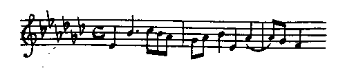
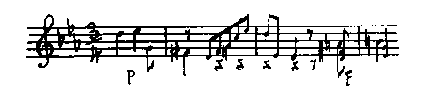

フランス以外で成功を博しかけていたにもかかわらず、クリストフとオリヴィエの物質的情況は、なかなかよくなってゆかなかった。きまってときどき困難な時期がやってきて、空腹な思いをしなければならなかった。その代わり金があるときには、平素の二倍も食べて補っていた。けれどそれも長い間には、結局身体を弱らす摂生法だった。
今またちょうど二人は不如意な時期にあった。クリストフは夜中過ぎまで起きていて、ヘヒトから頼まれた編曲の無趣味な仕事を片付けた。寝たのは明け方近くで、
無駄なことに費やした時間を取り返すために、ぐっすり眠ってしまった。オリヴィエは早くから出かけていた。パリーの向こう側の場末で講義をしなければならなかったのである。八時ごろに、手紙を届けに来る門番の男が呼鈴を鳴らした。いつもならその男は、
強いて起こさないで
扉の下へ手紙を差し入れてゆくのだった。がその朝に限って扉をたたきつづけた。クリストフは寝ぼけながら、ぶつぶつ言って扉を開きにいった。門番は微笑しながら盛んにしゃべりたてて、ある新聞記事のことを言っていたが、クリストフはそれに耳を貸さず、顔も見ないで手紙を引ったくり、扉を押しやったままよくも
閉めずに、また寝床にはいって、前よりもなおぐっすりと眠った。
一時間ばかり後にまた、彼は室の中の人の足音にはっと眼を
覚ました。そして寝台の
裾のほうに、見知らぬ顔の人が丁重に会釈してるのを見て、
呆気にとられた。それはある新聞記者で、扉が
開いてるのを見て遠慮なくはいり込んで来たのだった。クリストフは腹をたてて飛び起きた。
「何をしにここへ来たんです？」と彼は叫んだ。
彼は
枕をつかんで、その侵入者に投げつけてやろうとした。侵入者は逃げ出すような態度をしたが、それから二人で話し合った。男は
ナシオン新聞の探訪員で、
グラン・
ジュールナル新聞に出た評論に関して、クラフト氏に面会したがってるのだった。
「どんな評論ですか。」
「まだお読みになりませんか。」
探訪員は説明の労をとってくれた。
クリストフはまた寝てしまった。眠気のためにぼんやりしていなかったら、相手を外に追い出すところだった。しかし勝手にしゃべらしておくほうが大儀でなかった。彼は
蒲団の中にもぐり込み、眼を閉じ、眠ったふりをした。そしてそのままほんとうに眠ってしまうところだった。しかし相手は
執拗で、評論の初めを声高に読みだした。クリストフはすぐに耳をそばだてた。クラフト氏は当代の音楽的天才だと書かれていた。クリストフは眠ったふりをする役目を忘れて、びっくりした怒鳴り声をたて、上半身を起こして言った。
「
其奴らは
狂人だ。何かに取り
憑かれてる。」
探訪員はそれに乗じて読むのをやめ、いろんな質問をかけ始めた。クリストフはなんの考えもなくそれに答えた。新聞を取り上げて、第一ページにのってる自分の肖像を
茫然とながめた。しかしその評論を読むだけの
隙がなかった。新聞記者がも一人はいって来たのだった。こんどは彼も本気に腹をたてた。出て行ってしまえと怒鳴りつけた。しかし彼らは少しも出て行こうとしなかった。室内の家具や壁の写真などの配置から、本人の顔つきまでを、手早く書き止めてしまった。クリストフは笑いだしまた怒りだして、彼らの肩をとらえて押しやり、シャツのまま外に送り出して、そのあとから
扉に差し金をおろしてしまった。
しかしその日はどうしたことか、彼は一人落ち着いてることが許されなかった。身仕舞いを終わるか終わらないうちに、ふたたび扉をたたく者があった。ただ数人のごく親しい者のみが知ってる一定のたたき方だった。クリストフは扉を聞いてみた。するとそれも見知らぬ男だった。彼はすぐに追い出そうとした。が相手は言い逆らって、自分こそあの新聞評論の筆者であるということを
楯にとった。天才だとほめてくれる者を追い出す法はない！ クリストフは
嫌々ながらも、崇拝者の感激の言葉を聞いてやらざるを得なかった。彼は天から降ってきたような突然の名声に驚いて、前日何か傑作をでもみずから知らずに演奏させたのかしらと怪しんだ。しかしよく調べてみるだけの余裕がなかった。その新聞記者がやって来たのは、社長閣下のアルセーヌ・ガマーシュ自身が彼に会いたがってるので、ぜひとも彼を引っ張り出して、すぐに新聞社へ連れてゆくためにであった。下に自動車も待っていた。クリストフは断わろうとした。しかし率直な感じやすい彼は、相手の好意的な勧誘に会って、ついに心ならずも
我を折った。
それから十分ばかりして、彼は社長に紹介された。この絶対主権者の社長の前では、すべてのものが震えおののいていた。五十年配の強健な快男子で、背が低くむっくりしていて、丸い大きな頭、角刈りにした灰色の頭髪、赤い顔、横柄な言葉つき、重々しい誇張的な音調、そしてときどきごつごつした快弁を
弄した。彼はその絶大な自信の念をもってパリーにのしかかっていた。事務家で、敏腕家で、利己的で、率直でまた
狡猾で、熱情的で、一人よがりである彼は、自分の仕事をフランスの仕事と同一視し、人類の仕事とさえも同一視していた。自分の利益と自分の新聞の繁栄と
社会の安泰とを、彼は同種のものだと見なし、密接に関係してるものだと見なしていた。自分に害を与うるものはフランスに害を与うるものだと、確信しきっていた。私敵を撲滅するためには、断然国家をも転覆しかねなかった。それでも彼は、寛仁な行ないをなし得ないではなかった。腹がいっぱいなときに人は理想家となるごとく、彼も一種の理想家であって、父なる神のごとくに、
塵の中から
憐れな人間をときどき引き出してやるのを好んでいた。そしてそれは、無から光栄をもこしらえ出し、大臣をもこしらえ出し、意のままに国王をもこしらえたり廃したりし得るという、自分の偉大な力を示さんがためであった。彼の権能はすべてのものに及んでいた。気に入れば天才をもこしらえ出していた。
その日彼は、クリストフを「こしらえ」たのだった。
知らず知らずにその
先鞭をつけたのは、オリヴィエだった。
オリヴィエは自分のためにはなんらの奔走もしなかったし、ひどく広告をきらっていて、
黒死病をでも避けるように新聞記者を避けていたけれど、事が自分の友に関係するときには、他に尽くすべき義務があると考えていた。世のやさしい母親、正直な中流婦人、りっぱな人妻は、そのやくざな
息子へ何かある特典を得させることができるならば、自分の身体を売ってもいいと思っているが、オリヴィエもちょうどそれに似ていた。
オリヴィエは諸雑誌に筆を執っていたし、多くの批評家や文芸愛好家と接触していたので、おりがあればかならずクリストフの
噂をしていた。そしてしばらく前から、自分の言葉が聞きいれられてるのを見て我ながら驚いた。文学界や社交界に広まってゆく、一種の好奇の動きを、一種の妙な風説を、彼は周囲に感知した。その起源はなんであったろうか、イギリスやドイツでクリストフの作品が最近演奏されたのにたいする、新聞紙の多少の反響であったろうか。いや、はっきりした原因があるのではなさそうだった。それは、パリーの空気を吸っていて、サン・ジャック塔の気象台よりもなおよく、どういう風が起こりかけていて明日はどうなるということを、前日から知ってるような、見張りを事としてる精神の人々には、よくわかってる現象の一つだった。電気の震動が通ってるこの神経質な大都会のうちには、眼に見えない光栄の潮流があり、
露わな名声に先立つ隠れたる名声があり、客間の
漠然たる風評があり、時至れば広告的論説となって現われてくる、
イーリアス以上のもの出づがあり、新しい偶像の名前をもっとも堅い鼓膜にも響き通らせる、太鼓の太音があるのである。それにまた時とするとその大らっぱは、賞賛の対称たる当人のもっとも親しいもっともよい友人らを逃げ出させることすらある。けれどその責任は友人らのほうにもある。
ところでオリヴィエは、
グラン・
ジュールナルの評論に関係があった。彼は人々がクリストフにたいして示してる興味を利用し、巧みな報道によってそれを
煽りたてさせるだけの注意をとった。用心してクリストフを直接に新聞記者と接触させはしなかった。何か面白くないことが起こりはすまいかと恐れたのだった。けれど、
グラン・
ジュールナルの求めにより、策略をもってクリストフに気づかれないようにして、彼と一人の探訪員とをある珈琲店の食卓で出会わした。それらの用心は、ますます人の好奇心を刺激し、クリストフをいっそう面白い人物にした。オリヴィエはまだかつて公表機関との交渉に経験がなかった。一度動き出したらもう取り締まることも抑制することもできない恐るべき機械を、自分が動かすようになろうとは考えに入れていなかった。
で彼は、講義に出かける道すがら、
グラン・
ジュールナルの評論を読むと
呆然としてしまった。そんなひどいことを書かれようとは予期していなかった。新聞というものは、あらゆる調査をよせ集めて、書くべき対象を多少ともよく知りつくしてから、初めて筆にのぼすものだと、彼は考えていた。がそれはあまりに世間知らずだった。新聞が一つの新しい光栄者を発見するの労をとる場合には、それはもちろん新聞自身のためであって、発見の名誉を他の新聞から奪わんがためにである。それで、
讃めるものを少しも理解しなくても構わず、ただ急いでやらなければならない。しかし作家のほうでそれをぐずぐず言う者はめったにない。賞賛されるときにはいつもかなり理解されてるわけだから。
グラン・
ジュールナルはまず、クリストフの悲惨な境遇についてばかばかしいことを述べたて、クリストフをドイツの専制主義の犠牲者だとし、自由の使徒だとし、帝国主義のドイツからのがれて、自由な魂の避難所たるフランスへ逃げ込んだのだと言い――（熱狂的な愛国心の
台辞を並べるにはいい口実である）――つぎに、彼の天才を激賞していた。しかし彼の天才について実際は何にも知っていなかった――彼がドイツにいるときの初期の作で、今では自分でも恥ずかしがってなくしてしまいたがってる、二、三の平凡な
旋律以外には、何にも知っていなかった。けれどその評論の筆者は、クリストフの作品については無知であっても、クリストフの意図をもって――彼がクリストフの意図だとしてるものをもって、足りないところを補っていた。あちらこちらで拾い上げたクリストフやオリヴィエの二、三言、クリストフのことなら知りつくしてると自称してるグージャールみたいな連中の言葉、それだけでもう筆者にとっては、「共和的な天才――民主主義の大音楽家」たるジャン・クリストフの面影を作り出すのに、十分だったのである。筆者はこの機会に乗じて、現代フランスの音楽家ら、ことに民主主義などをいっこう気にかけていないもっとも独創的な音楽家を、ののしり散らしていた。ただ、りっぱな選挙論をもってるらしい一、二の作曲家ばかりは、その例外だとしていた。彼らの音楽がその選挙論よりずっと劣ってるのは残念なことだった。しかしそれは
些事にすぎなかった。そのうえ、彼らにたいする賛辞も、またクリストフにたいする賛辞でさえも、他の音楽家らにたいする非難ほど重大なものではなかった。パリーでは、一人の者を
讃めてる評論を読むときには、「だれのことが悪く言われてるか」と考えるのが、いつも慎重な方法である。
オリヴィエは、新聞を読んでゆくに従って恥ずかしさに顔を赤くし、そして考えた。
「
俺はとんだことをしたものだ！」
彼は講義をするのもようやくのことだった。自由の身になるとすぐに、家へ駆けもどった。クリストフが新聞記者らといっしょに出かけたことを知ると、このうえもなくびっくりした。昼食には帰って来るだろうと待ってみた。がクリストフは帰って来なかった。オリヴィエは時がたつにつれて心配になって考えた。
「彼らはクリストフに
馬鹿なことを言わしてるに違いない。」
三時ごろ、クリストフはごく快活な様子で帰ってきた。アルセーヌ・ガマーシュと昼食を共にしたのだった。シャンペン酒を飲んだので頭が少しぼんやりしていた。どんなことを言いどんなことをしたかとオリヴィエから気がかりそうに尋ねられたが、彼にはその不安の理由が少しもわからなかった。
「何をしたかって？ 素敵な昼飯を食ったよ。もう長らくあんなによく食ったことはなかった。」
彼はその献立表を述べてきかした。
「それから酒も……いろんな色のを飲んだよ。」
オリヴィエはそれをさえぎって、他の客たちのことを尋ねた。
「他の客たちだって？……
僕はよく知らない。ガマーシュがいた。丸っこい男で、このうえもなく純真な
奴だ。評論の筆者のクロドミールもいた。面白い奴だ。それから、三、四人の知らない記者がいたが、みなたいへん快活で、僕に親切と好意とを見せてくれた。一粒
選りのりっぱな連中だったよ。」
オリヴィエは承認の様子を示さなかった。クリストフはオリヴィエがあまり喜ばないのが不思議だった。
「君はあの評論を読んでいないんだね。」
「読んだとも。そして君自身はよく読んでみたのか。」
「読んだ……と言っても、ちょっと見ただけだが、その
隙がなかったんだ。」
「じゃあ、少し読んでみたまえ。」
クリストフは読んだ。そして初めから
放笑した。
「馬鹿め！」と彼は言った。
彼は笑いこけた。
「おやおや、」と彼はつづけて言った、「批評家ってみな
自惚れてばかりいやがる。何にも知っていないくせに。」
しかし読んでゆくに従って、彼は腹をたて始めた。あまりに愚劣だった。彼を物笑いの種となしていた。彼を「共和的な音楽家」としたがっていた。それはなんらの意味をもなさなかった……。がまあそんな
洒落はどうでもいいとして……彼の「共和的な」芸術を、彼以前の大家らの「聖器所の芸術」に対立せしめていた――（そういう大家らの魂からこそ彼は養われたのだった）――あまりにひどいことだった……。
「
阿呆どもが！ 俺を馬鹿者にしようとしてやがる……。」
そのうえ、彼のことに関して、彼が多少とも――（むしろごくわずかばかり）――愛してるフランスの才能ある音楽家らを、自分の職分を心得ていてりっぱな仕事をしてる音楽家らを、いじめつける理由がどこにあろう？ そしてもっともいけないことには――彼はその故国にたいして
嫌悪すべき感情をいだいてるものと推測されていた……。そういうことは、とうてい我慢のできないことだった。
「僕は奴らに手紙を書いてやる。」とクリストフは言った。
オリヴィエはそれをなだめた。
「いや、今書いちゃいけない！」と彼は言った。「君はあまり興奮しすぎてる。明日、頭が休まってから……。」
クリストフは強情を張った。彼は言いたいことがあるときにはもう待っておれなかった。ただ書いた手紙をオリヴィエに見せることだけは約束した。それも
無駄ではなかった。手紙はひどく修正された。ことに彼がドイツにたいしていだいてるとされてる意見を熱心に訂正した箇所が、はなはだしく修正された。クリストフはその手紙を出しに駆けていった。
「こうしておけばいくらかいいだろう。」と彼はもどって来て言った。「手紙が明日発表されるだろうから。」
オリヴィエは疑わしい様子で頭を撮った。それから、やはりなお気がかりだったので、クリストフの眼をのぞき込みながら言った。
「クリストフ、君は食事中別に不謹慎なことは何も言わなかったろうね。」
「言うものか。」とクリストフは笑いながら言った。
「確かかね。」
「ああ。くよくよするなよ。」
オリヴィエは少し安心した。しかしクリストフはちっとも安心できなかった。彼はやたらにしゃべり散らしたことを思い出した。あのとき彼は、すぐにいい気になってしまったのだった。ちょっとの間も人々を疑おうとはしなかった。彼らはいかにも打ち解けてるらしかったし、いかにも彼に好意をもってるらしかった。そして実際そうだった。人は自分がいいことをしてやった相手にたいしては、いつも好意を示すものである。それにクリストフはいかにも打ち明けた喜びを見せたので、その喜びの情が彼らにも伝わっていった。彼の温情的な遠慮なさ、元気
溌溂たる奇抜さ、非常な食欲、
喉も動かさずに酒を飲み込む早さなどは、アルセーヌ・ガマーシュに不快を与えるはずはなかった。ガマーシュもまた食卓の勇者で、無作法で
田舎者で多血質であって、丈夫でない人々を、食うことも飲むこともできない人々を、パリーのいじけた者どもを、
軽蔑しきっていた。彼は食卓で人を判断していた。で彼はクリストフを高く買った。そして即座に、彼の
ガルガンチュアをオペラ座の歌劇に上演させようと申し込んだ。――（これらフランスの中産者らにとっては、
ファウストの劫罰や九つの交響曲などを上演することが、当時芸術の極致だった。）――クリストフは、その唐突な考えをおかしがった。そしてガマーシさが、オペラ座の事務所やまた美術局に電話で命令を伝えようとするのを、ようやくのことで引き止めた。――（ガマーシュの言うところによれば、そういうところにいる人々は皆彼の
頤使のままになるらしかった。）――そしてガマーシュの申し出はクリストフに、彼の交響詩
ダヴィデが先ごろ変なごまかし方をされた事件を思い出さした。で彼は、代議士のルーサンが情婦の門出のために催したダヴィデ公演の詩を、うっかりしゃべってしまった。（第五巻広場の市参照。）ガマーシュはルーサンを少しも好きでなかったから、その話を非常に愉快がった。クリストフは豊富な酒と
聴き手の同情とに元気づいて、多少無遠慮な他の話までもち出した。それらの話を聴き手たちは一言も聞きもらさなかった。ただクリストフだけが、食卓を離れるともう忘れてしまった。そして今オリヴィエに尋ねられて、彼はそれを思い出した。彼は背筋がぞっとするのを覚えた。
空しい希望をつなぎ得なかったのである。過去に十分経験があったので、これからどんなことになるかほぼ見当がついた。酔いもさめてしまった今では、もうそうなってしまったかのようにはっきり頭に浮かんだ。彼の不謹慎な話は変更されて、悪徳新聞の雑報に掲げられ、彼の芸術上の警句は戦いの武器と変えられるに違いなかった。またあの訂正の手紙についても、どれほどの役にたつかをオリヴィエと同様によく知っていた。新聞記者に答えることは、インキを無駄にすることにすぎない。新聞記者へ言ったことはもう取り返しがつかない。
すべてのことは一々、クリストフの予想どおりに起こってきた。不謹慎な話は新聞に現われたが、訂正の手紙は現われなかった。ガマーシュはただ、彼の心の高潔さを承認するということ、そういう懸念をこうむるのは名誉の至りだということを、彼に伝えたばかりだった。懸念の事実は自分一人の胸に堅く納めてしまった。そしてクリストフのものだとされてる誤った意見はしだいに広まっていって、パリーの諸新聞に
辛辣な批評を
惹起し、それからドイツへ伝えられて、ドイツの芸術家が自国についてかく下劣な言辞を
弄するのを、人々は憤慨した。
クリストフは、他の新聞の探訪員から面会を求められたので、それをいい機会だとして、
ドイツ帝国にたいする自分の愛を弁解し、ドイツ帝国内においても人は少なくともフランス共和国内におけると同じく自由であると言った。――ところが、その相手は保守的な新聞の記者であって、彼はすぐに非共和的な宣言をしたものだとされてしまった。
「ますます奇態だ。」とクリストフは言った。「いったい僕の音楽が政治となんの関係があるのか。」
「それがフランス人のいつものやり方だ。」とオリヴィエは言った。「ベートーヴェンについてなされてる論争を見てみたまえ。ある者は彼を過激民主派だとし、ある者は彼を
僧侶派だとし、あるいはペール・デーシェーヌの一派だとし、あるいは君主の奴僕だとしてるじゃないか。」
「なんだって！ そんな奴らをベートーヴェンは
蹴飛ばしてやるに違いない。」
「じゃあ君もそうするさ。」
クリストフは実際そうしたかった。しかし彼は、自分に親切を見せてくれる者にたいしては、あまりに人が
善くなりすぎるのだった。オリヴィエは彼を一人で置いとくと心配でならなかった。いつも面会人がやってくるのだった。そしてクリストフはいくら用心しようと誓っても駄目だった。意中を隠すことができなかった。頭に浮かんだことはなんでも話した。婦人記者がやって来て彼の味方だと言うと、彼は自分の情事をも話してしまった。ある者は彼を利用して、某々の悪口を言う種に使った。オリヴィエがもどってきてみると、クリストフは困りきった様子をしていた。
「また馬鹿なことを言ったんだね。」と彼は尋ねた。
「相変わらずだ。」とクリストフはがっかりして言った。
「ほんとにしようがないね。」
「監禁でもされなくちゃ……。だが、誓ってこれでおしまいだよ。」
「そうだ、このつぎまではね……。」
「いやこれっきりだ。」
その翌日、クリストフは得意げにオリヴィエに言った。
「また一人来たよ。僕は
閉め出しを食わしてやった。」
「あまりひどいことをしてはいけないぜ。」とオリヴィエは言った。「彼らにたい心ては用心しなければいけない。『この動物は性質きわめて悪し……』なんだからね。こちらではねつければ攻撃してくる……。意趣返しなんかは
彼奴らにとって訳ないことなんだ。ちょっとしたことでも言えば、すぐにそれを利用するんだ。」
クリストフは
額に手をあてた。
「ああしまった！」
「またどうかしたのか。」
「
扉を閉めながら言ってやった……。」
「なんと？」
「帝王の言葉を。」
「帝王の？」
「そうだ、でなけりゃ、それに似寄った者の言葉を……。」
「困ったもんだね。明日になってみたまえ、第一ページに出てるよ。」
クリストフはびっくりした。しかし翌日新聞を見ると、その記者がはいりもしなかった彼の
部屋の記事と、交えもしなかった会話とが、掲載されていた。
報道は広まるにつれて飾りたてられていった。外国の新聞では、反対の意味に面白くなされていた。フランスの記事が、クリストフは貧困中ギター用に編曲をしていたと伝えると、やがてクリストフはイギリスのある新聞から、自分が往来でギターをひいたことがあると教えられた。
彼は賛辞ばかりを読んでるわけではなかった。なかなかそれどころではなかった。クリストフは
グラン・
ジュールナルの被保護者となったばかりで、すぐに他の新聞の悪口の的となった。未知の天才を他の新聞から発見されたことを承認するのは、新聞の品位に関することだった。ある新聞は激しく悪口を言った。グージャールは足下の草を人から刈り取られたのに憤慨して、彼の言葉によれば、事情を是正せんために評論を書いた。彼は旧友クリストフのことを
馴れ馴れしい調子で述べ、パリーで初めてクリストフを引き回してやったのは自分だとしていた。たしかにクリストフは天分の多い音楽家ではあるが、しかし――（旧友のよしみで彼はあえて言ったのである）教養に乏しく、独創性がなく、無法な
傲慢心をもっている。その傲慢心に
滑稽なやり方でおもねるのは、かえって彼のために悪い。彼に必要なのはむしろ、思慮深い、博学な、明敏な、親切な、しかも厳格な、メントールのごとき指導者である――（それはグージャール自身のことを言ったものだった。）――また他の音楽家らは、
嘲笑っていた。新聞紙の援助を受ける芸術家を
軽蔑しきってるらしいふうをした。そして
奴隷的な徒輩にたいする
嫌悪のふうを装って、差し出されもしないアルタクセルクセスの贈り物を拒んでいた。ある者はクリストフを非難した。ある者はクリストフに
憐憫を浴びせかけた。またオリヴィエに責任を負わせる者もあった――（それはオリヴィエの仲間たちだった。）――彼らはオリヴィエの一徹さと皆から遠ざかってるやり方とを、快く思っていなかった――けれどオリヴィエが皆から遠ざかっているのは、実を言えば、彼らを
軽蔑してるからではなくて、むしろ孤独を好むからであった。しかし人は他人から無用視せられることをもっとも許しがたく思うものである。オリヴィエは
グラン・
ジュールナルの評論から私利をむさぼっているのだと
噂する者さえあった。クリストフを弁護してオリヴィエを非難する者もあった。人生にたいして十分の武装をしていない繊弱な夢想的な芸術家――クリストフ――を、広場の
市の
喧騒裡に投げ込んだオリヴィエの心なしにたいして、彼らは心痛の様子を見せていた。クリストフはその喧騒裡に迷い込んでしまうに違いなかった。彼らに言わせると、クリストフは天才はないにしても、
執拗な勉励でりっぱな運命をかち得られるのに、悪質の
香りで酔わされて、未来を駄目にされてるのだった。それは実に気の毒なことだった。彼を明るみに引っ張り出さないで、辛抱強く勉強さしておくことが、なぜできなかったのか？
オリヴィエはりっぱに答え返し得たはずである。
「勉強するためには、食べなければならない。だれがクリストフにパンを与えてくれるか？」
しかし彼らはそんなことにまごつきはしなかったろう。いかにも
従容として答えたに違いない。
「そんなことは
些事にすぎない。人は苦しまなければいけない。」
もとより、そういう堅忍論を公言する者は、安楽な人々であった。ある正直者が財産家のもとへ、一人の困ってる芸術家を助けてくれと頼みに行ったとき、その財産家はつぎのように言ったそうである。
「しかし君、モーツァルトは困窮のために死んだではないか。」
ところが、モーツァルトは生きるのが本望だったことや、クリストフは生きようと決心してることなどを、オリヴィエが彼らに言ったとしたら、彼らはそれを悪趣味だと考えるに相違なかった。
クリストフはそういうつまらない
喧騒が
厭になりだした。いつまでもつづくのかしらと怪しんだ。――けれど二週間もたつと、すっかりおしまいになった。新聞にはもう彼のことが書かれなくなった。ただ彼は世間に知られた。彼の名前が口にのぼるときには、「あれは
ダヴィデの作者だ、
ガルガンチュアの作者だ、」と人は言わないで、「ああそう、
グラン・
ジュールナルの男だ、」と人は言った。それが有名なるゆえんだった。
オリヴィエはクリストフのもとに来る手紙の数によって、また自分のところへまで反射的にやってくる手紙の数によって、クリストフが有名になったことを気づいた。歌劇脚本作者からの提議、音楽会主催者からの申し込み、多くは初め敵だった新しい味方からの友情表白、婦人からの招待、などがやってきた。また新聞の調査用として、いろんなことについてクリストフは意見を求められた。フランスの人口減少問題、理想主義芸術の問題、婦人のコルセットの問題、芝居の裸体問題、――ドイツは
頽廃してるとは思わないかどうか、音楽は終極に達してるとは思わないかどうか、その他種々。クリストフとオリヴィエはそれをいっしょに笑った。しかしクリストフはヒューロン人みたいに粗野でありながら、
嘲笑いながら、
晩餐の招待を承諾し始めたのだった。オリヴィエはみずから自分の眼を信じ得なかった。
「君が？」と彼は言った。
「そうさ。」とクリストフは
揶揄的な様子で答えた。「美しい婦人を見に行けるのは自分ばかりだと、君は思っているのか。こんどは僕の番だよ。少し楽しみたいんだ。」
「楽しむって、君が！」
実際のことを言えば、クリストフは長い間家に閉じこもって暮らしていたので、にわかに外に出たくてたまらなくなった。それにまた、新しい光栄の気を吸うと無邪気な喜びが感ぜられた。もとより彼はそういう夜会にはひどく退屈を覚え、皆ばかな奴らばかりだと思った。しかし家に帰ってくると、心と反対のことを意地悪くオリヴィエへ語った。そして方々の夜会へ出かけて行ったが、二度と同じ所へは行かなかった。二度の招待を断わるためには、ひどい無遠慮さでおかしな口実をもち出した。オリヴィエはそれに気を悪くした。がクリストフは大笑いをした。彼が客間へ出入りするのは、自分の名声を育てるためではなかった。自分の生活資料を新たに
蓄えんがためであった。人間の眼つきや身振りや声音などの収集、すべて芸術家がおりおり自分の
絵具板を豊富ならしむべき、形と音と色との材料、それを新たに得んがためであった。音楽家は音楽ばかりで養われてるものではない。人間の言葉の抑揚、身振りの
律動、微笑の
諧調、などはみな音楽家に、仲間の者の
交響曲以上の音楽を暗示するのである。しかし人の
顔貌や魂のその音楽も客間の中においては、音楽家の音楽と同じく、無味乾燥で変化に乏しいものと言わなければならない。各人が自分の風格をもっていて、その中に凝結している。美しい女の微笑も注意の行き届いた装いの中では、パリーの音楽家の
旋律と同じく型にはまったものとなる。男子は女子よりもなおいっそう面白みがない。社交界の
萎靡的影響を受けて、たちまちのうちに精力は鈍くなり、独特な性格は
磨滅してゆく。クリストフは芸術家らのうちに、多くの死んだ者や死にかけてる者に出会って驚いた。若い音楽家で、精気と才能とを十分にもちながら、成功のために
廃頽して、自分を窒息させる
阿諛の香を
嗅ぐことばかり考え、享楽し眠ることばかり考えてる者があった。そしてその二十年後の姿は、客間の他の
隅にいる老大家のうちにちょうど現われていた。その老大家は、
煉脂を塗りたて、金持ちで高名で、あらゆる学芸院の会員であり、最高位に上りつめていて、もはや何も恐るべきものも
仮借すべきものもないらしく見えながら、あらゆる人の前に平伏し、世論や権力や新聞雑誌の前にびくびくし、もう自分の考えもあえて口に出さず、そのうえもはや考えることもなく、もはや生存することもなく、自分自身の
残骸をになってる
驢馬となって公衆の前に身をさらしていた。
それらの芸術家や才士は、過去に大人物であったかもしくは大人物になり得られるはずであったが、その各人の後ろにはかならず女が隠れていて、その女から身を滅ぼされてるのであった。どの女も皆危険だった、愚かな女も愚かでない女も、人を愛する女も我が身を愛する女も。そしてすぐれた女ほどさらに危険だった。すぐれてるだけにますます、間違った愛情を押しかぶせて芸術家を窒息させるのだった。その愛情はひたすら、天才を飼い
馴らし、平らにし、枝を切り、削り、香りをつけて、ついには天才を、自分の感受性や小さな虚栄心や平凡さと同程度のものとなし、自分たちの社会の平凡さと同種のものとなしてしまうのだった。
クリストフはそういう社会を通り過ぎただけではあったが、その危険を感ずるくらいには十分よく観察した。一人ならずの女が、彼を自分の客間に独占しようとし、自分一人の用に独占しようとした。そしてクリストフも、何かを
匂わせる微笑の
釣針を、少しくわえないでもなかった。もし彼に健全な良識がなかったならば、また彼女らの周囲で近代のキルケーどもからすでに多くの者が変形されてる不安な実例がなかったならば、彼も無事にのがれ得はしなかったろう。だが彼は、のろま男の番人たるそれら美人連の群れを、さらに増加したい心は少しもなかった。彼を追っかけてくる女たちがもっと少なかったら、彼にとって危険はいっそう大きかったろう。けれどもう今では、すべての男女が自分たちのうちに一人の天才がいることをよく承知していて、いつもの例によって、その天才を窒息させようとつとめていた。それらの連中の考えはただ一つしかなくて、花を見れば
花瓶にさしたくなり――小鳥を見れば
籠に入れたくなり――自由な人間を見れば奴僕になしたくなるのである。
クリストフは一時心迷ったが、すぐに気を取り直して、彼らを皆追い払ってしまった。
運命は皮肉なものである。
無頓着な者には勝手にその網の目をくぐらせるが、疑い深い者、用心深い者、
聡明な者にたいしては、なかなか取り逃がすまいとする。パリーの網の目にかかったのはクリストフではなくて、オリヴィエであった。
彼はクリストフの成功のおかげをこうむっていた。クリストフの名声は彼の上にも反映していた。六年以前からときどき書いていたもののためによりも、クリストフを見出した男として、前よりいっそう世に知られていた。それで、クリストフへ
宛てられた招待の
相伴を受けた。そしてひそかにクリストフを監視するためについて行った。たぶん彼はその監視の務めにあまり気を取られて、自分自身を監視することは怠ってたに違いない。恋愛は通りかかって彼をとらえた。
それは
痩せた愛くるしい金髪の娘だった。狭い澄んだ額のまわりに
漣のように揺らいでる細やかな髪の毛、やや重たげな
眼瞼の上のすっきりした
眉、
雁来紅の青みをもった眼、小鼻のぴくぴくしてる繊細な鼻、軽く
凹みを帯びた
顳
、気まぐれらしい
頤、
隅がやや
脹れてる利発な逸楽的な口、パルメジアニノ式の純潔な小半獣神みたいな微笑、それから長い
細そりした首、ほどよく痩せた身体をもっていた。何かある楽しげな気がかりらしい色が浮かんでるその若々しい顔は、
眼覚めくる春――
春の覚醒――の不安な
謎に包まれていた。彼女はジャックリーヌ・ランジェーという名だった。
彼女はまだ二十歳になっていなかった。自由な精神をそなえたカトリック教の富裕なりっぱな家庭だった。父親は、発明の才ある
怜悧なさばけた技師で、新思想を歓迎していた。勤勉と政治的関係と結婚とで財産をこしらえていた。財界におけるパリー風な美しい女との、恋と金との結婚――（彼らにとっては真の恋愛結婚）――をしたのだった。金銭は残っていたが、愛情は飛び去ってしまっていた。それでもなお多少の火花が消えずにいた。なぜならどちらの愛欲もきわめて強烈だったから。しかし彼らは
大袈裟な貞節観念を鼻にかけてるのではなかった。各自に自分の仕事や快楽を追い求めていた。そして、利己的な気ままな抜け目ない
好伴侶として、よく気が合っていた。
彼らの娘は、二人の間の
連繋であるとともに、暗黙な競争の種となった。二人とも娘を
嫉妬深いほど愛していた。どちらも娘のうちに、好ましい欠点をそなえてる自分の姿を見出し、その欠点は娘の優美のために理想化されて眼に映った。そしてたがいに娘を奪い取ろうと内々努力した。娘のほうでは、全世界が自分のまわりに引きつけられてると信じがちな子供特有のずるい無邪気さをもって、そのことを感ぜずにはいなかった。そしてそれにつけ込んだ。両親の間にたえず愛情のせり上げを起こさした。どんなわがままでも、一方から拒まれるときっと他方から承知された。すると一方は先を越されたことに困って、他方が与えた以上のものをすぐに与えるのだった。かくて娘はひどく甘やかされた。ただ仕合わせなことには、彼女は性質中に何にも悪いものをもってはいなかった――利己心を除いては。ただしこの利己心は、すべての子供にほとんど共通なものではあるが、あまりに大事にされる金持ちの子供にあっては、障害のないことからくる病的な形をとるものである。
ランジェー夫妻は、娘を
鍾愛しながらも、自分一身の安逸を少しも犠牲にしたがらなかった。一日の大半は娘を一人放っておいた。それで娘は、夢想する時間に少しも不足を覚えなかった。彼女は早熟であるうえに、自分の前でされる不謹慎な話――（人々は彼女に少しも遠慮をしなかった）――からすぐに啓発されて、六歳になったときにはもう、夫や妻や情人を人物とするちょっとした恋物語を、人形に話してきかせるようになった。もとより彼女のほうに悪心は少しもなかった。けれどそれらの言葉の下にある感情の影をちらと見た目から、人形へ話すのはふっつりよしてしまって、その詩を自分自身だけのものとした。彼女のうちには無邪気な情欲の素質があって、それが地平線の
彼方はるかな眼に見えない鐘のように、遠くで鳴り響いていた。ときどき風がさっとその片影を吹き送って来た。それがどこから出て来るかはわからないが、それに包み込まれて、顔が
真赤になる心地がし、
恐さとうれしさとで息もつけなかった。なんのことだか訳がわからなかった。それにまた、それは来た時と同じようにふっと消えてしまうのだった。もう何にも聞こえなかった。かすかなそよぎ、それとわからないほどの余韻が、青い空気中にうっすり残ってるのみだった。けれど、かなた山の向こうにそれがあること、そこへ行かなければならないこと、できるだけ早く行かなければならないこと、それだけはわかっていた。そこに幸福があるのだった。ああそこまで行けさえしたら！……
そこへ達するのを待ちながら彼女は、やがて見出そうとするものにたいして、不思議な想像をめぐらしていた。彼女の少女としての知力にとっての重大事は、それを推察するということだったのである。彼女にはシモーヌ・アダンという同年配の友があって、この重大な問題についていっしょに話し合った。自分の知識や、十二年間の経験や、聞きかじった話や、ひそかにぬすみ読んだ事柄などを、たがいにもち寄った。そして二人の少女は、自分たちの未来を隠してる古壁の石にしがみつき、
爪先で伸び上がって、その向こうを見ようとした。しかしどんなことをしても、壁の割れ目からいくらのぞこうとしても、まったく何にも見てとれなかった。彼女らの性質は、無邪気と詩的な
放縦とパリー的な皮肉との混和したものだった。みずから知らずに
大袈裟なことを口にしながら、ごく単純な事柄で自分の世界を組み立てていた。ジャックリーヌは、だれからもとがめられずに、方々を捜し回り、父のあらゆる書物をこそこそのぞいてみた。が幸いにも彼女は、ごく清らかな少女の潔白さと本能とによって、悪いものに出会っても汚されなかった。多少露骨な場面や言葉に接しただけで、もう
厭になってしまった。すぐさまその書物を手放して、卑しい連中のまん中を通りすぎた。あたかも、きたない水たまりの中にはいってびっくりしてる――しかも
泥水のはね返りを少しも受けない――
猫のようなものだった。
彼女は小説へは心ひかれなかった。小説はあまりにはっきりしていてあまりに
干乾びていた。感動と希望とで彼女の胸を波打たせるものは、詩人の書物だった――言うまでもなく恋愛の詩集だった。それは少女の心にやや近かった。事物を見て取りはしないで、欲望と愛惜の
三稜鏡を通して想像していた。ちょうど彼女のように、古壁の割れ目からのぞいてるらしかった。しかし実は多くのことを知っており、およそ知るべきことはみな知っているのであって、ただそれをごくやさしい神秘的な言葉で包んでるのだった。それで、非常に注意してその抱衣を解きさえすれば、見出せる……見出せる……はずだった。が彼女は何にも見出さなかった。けれどいつも見出しかけてはいた……。
二人の好奇な少女は少しも飽きなかった。かすかにおののきながら低い声で、アルフレッド・ド・ミュッセーの詩句やシェリー・プリュドンムの詩句を繰り返した。その詩の中に敗徳の
深淵が想像された。彼女らはそれを写し取り、その一節の中の隠れた意味を尋ね合った。時とするとなんの意味もないことがあった。そしてこの潔白な厚顔な十三歳の小娘たちは、恋愛について何にも知らないくせに、半ば冗談に半ば
真面目に、恋と快楽とを論じ合った。そして教室では、教師――ごくやさしい丁寧な年とった
小父さん――の温情に満ちた眼をぬすんで、つぎのような詩句を、その教師がある日見つけて息がつまるほどびっくりした詩句を、帳面に書き散らした。
おう吾をして、吾をして、汝をかき抱かしめよ、
汝の接吻のうちに、物狂わしき恋を吸わしめよ、
一滴また一滴と、幾久しく！……
彼女たちの通ってる学校は、ごくはやっていた。教師はみな大学の先生だった。彼女たちはそこに感傷的な
憧憬心の使い道を見出した。少女らのほとんどすべては、自分の教師に恋していた。教師が若くてさほど醜くなければ、彼女らの心を奪うに十分だった。彼女らは先生からよく思われようとして、天使のようになって勉強していた。試験のときに、先生から悪い点をもらうと涙を流した。先生から
讃められると、赤くなったり
蒼くなったりして、感謝に満ちた
婀娜っぽい流し目を注いだ。先生から一人別に呼ばれて、助言されたり称賛されたりすると、それこそ有頂天だった。彼女らの気に入るためには秀才たるの必要はなかった。体操のときに、その教師から両腕に抱かれてぶらんこに乗せてもらうと、ジャックリーヌは熱くのぼせてしまった。そしていかに一生懸命の張り合いが起こったことだろう！ いかに激しい
嫉妬の炎が燃やされたことだろう！ そのぶしつけな敵から教師を取りもどさんがために、いかにつつましい甘っぽい眼つきが注がれたことだろう！ 講義のときに、彼が口を開いて話し出すと、それを書き取るためにペンや鉛筆があわただしく動かされた。彼女らは理解しようとはつとめなかった。一言も書き落とさないことが大事だった。そして皆が、一生懸命に書き取りながらも、偶像となってる教師の顔つきや身振りを一々、物珍しげな眼でひそかにうかがってる間に、ジャックリーヌとシモーヌとは小声で尋ね合った。
「先生が青い玉散らしの
襟飾りをおつけなすったら、よくお似合いなさるでしょうね。」
それからまたうれしいものは、着色石版画、空想的な浮華な詩集、詩的様式の版画、――昔や今の、俳優、音楽家、著作家、ムーネ・シュリー、サマン、ドビュッシー、などにたいする愛、――音楽会や客間や街路で、見知らぬ青年らと見かわす眼つき、それからすぐに頭の中に描かれる情熱、――不断の欲求に駆られて、たえず
想いを焦がしていたり、いつも恋愛や恋愛のきっかけでいっぱいになっていること、それらのことを、ジャックリーヌとシモーヌとはみな打ち明け合った。けれどそれは、彼女らが大したことを感じてはいない明らかな証拠だったし、また、決して深い感情をいだかないための最上の方法でもあった。けれどその代わりに、それは慢性の病状となってきた。彼女らはみずからそれをあざけってはいたが、大事に養っていた。二人はたがいに刺激し合っていた。シモーヌのほうは空想的であり用心深くて、大それたことをより多く想像しがちだった。ジャックリーヌのほうは
真面目であり熱烈であって、大それたことをより多く実行しやすかった。彼女は幾度もたいへんよからぬことを行ないかけた……。けれど彼女はそれをほんとうに行ないはしなかった。青春期にはたいていそうしたものである。
生涯のある時期においては、人は狂気
沙汰の小動物となって――（
吾人も皆一度はそうであった）――あるいは自殺のうちに、あるいは見当たりしだいの異性の腕のなかに、
将に身を投ぜんとするものである。ただ仕合わせにも、たいていの者はそこで立ち止まる。ジャックリーヌも、見たか見ないかの男に向かって熱烈な手紙をいくらも書き散らした。しかしどれも出さなかった。ただ一つ心酔しきった手紙を、自分の名を書かずに、ある無情な狭量な醜い卑しい利己的な批評家に送った。彼が書いた三、四行の文のなかに感傷的な宝を見出して、それで恋しくなったのだった。彼女はまたある一流の俳優に
想い焦がれた。住居が彼女の家の近くだった。その門前を通ることに彼女はみずから言った。
「はいってみようかしら。」
そしてあるとき彼女は大胆にも、彼が住んでる階まで上がって行った。しかし一度そこまでゆくとすぐに逃げ出した。どんなことを言ったらよいか？ いや言うべきことは何一つなかった。彼を少しも恋してるのではなかった。自分でもそれはよくわかっていた。彼女のそういう無分別さの半ばは、みずから好んでやってる
欺瞞だった。他の半ばは、恋したいという楽しい馬鹿げたいつまでも
失せない欲求だった。ジャックリーヌはごく
怜悧だったから、それをみずから知らないではなかった。それでもやはり無分別にならざるを得なかった。みずからよく知ってる狂人は二人分の狂人に相当する。
彼女は社交界に多く顔を出した。彼女に魅せられてる多くの青年らに取り囲まれ、一人ならずの者から恋されていた。しかし彼女はそのだれをも愛しないで、皆とふざけていた。自分がどんなに人を苦しめてるかは顧みもしなかった。美しい娘は恋愛を残忍な遊戯となすものである。人に恋されるのは至って当然のことだと見なしていて、自分の愛する者にたいする場合を除いては、何にも負い目がないと思っている。自分を恋してる男はすでにもうそれだけで十分幸福だと、好んで思いがちである。ただ彼女の弁護となる一事は、彼女は一日じゅう恋愛のことを考えてはいるけれど、恋愛のなんたるやを少しも知っていないことである。温室的な空気の中に育った社交界の若い娘は、
田舎の娘よりも早熟だと人は想像しがちであるけれど、事実はその反対である。読書や会話は、彼女のうちに恋愛の
妄想を作り出して、それが無為閑散な生活のうちでは、しばしば恋愛狂に似寄ってくることが多い。時とすると彼女は、一編の物語の筋を前から読んでいて、その言葉をすっかり
暗誦してることさえある。したがって彼女はそれを心には少しも感じない。恋愛においても芸術におけるがごとく、他人の言ったことを読んではいけない。自分が感ずることを言わなければいけない。何にも言うことがない前からしゃべろうとあせる者は、けっして何にも言い得ない恐れがある。
ジャックリーヌも、多くの若い娘たちと同じく、すでに他人が経験した感情の
埃のなかに生きていた。そのために彼女は、手は燃え
喉は
乾き眼はいらついて、たえず小熱に浮かされた状態にありながら、物事を見てとることができなかった。が彼女は物事を知ってると思っていた。彼女に欠けてるのはりっぱな意志ではなかった。彼女は書物を読んだり人の言葉を
聴いたりしていた。会話や書物のなかで、ここかしこから断片的に、多くのことを教わっていた。自分の内心をさえ読み取ろうとつとめていた。彼女はその周囲の人々よりもましであった。彼女は皆より真実だった。
一人の婦人が、彼女にいい影響を与えた――あまりに短い間の影響ではあったが。それは彼女の父の妹で、結婚したことのない四、五十歳の女だった。マルト・ランジェーという名前で、顔だちはきっぱりしていたがしかし陰気できれいではなく、いつも黒服をつけていた。身振りにはある窮屈そうな上品さがあった。めったに口をきかず、声もごく低かった。その灰色の眼の澄んだ
目差しと、寂しげな口の善良な微笑とがなかったら、彼女はほとんど人目につかなかったろう。
ランジェー家に彼女が姿を見せるのは、ときどきであって、家族きりしかいない場合だけだった。ランジェーは彼女にたいして、やや迷惑げな敬意をいだいていた。ランジェー夫人は彼女の来訪をあまり喜ばない様子を、夫に隠そうとはしなかった。それでも彼ら夫妻は礼儀上、一週間に一回はきまって彼女を
晩餐に招いた。そしてお義理にしてるのだという様子をあまり見せなかった。ランジェーは自分自身の話をした。彼がいつも興味をもつのは自分自身のことだった。ランジェー夫人は習慣的に微笑を浮かべながら、他のことを考えていて、いい加減な返辞ばかりしていた。ごく丁寧なやり方をもって万事都合よく運んでいった。慎み深い
叔母が思ったより早く辞し去るときには、心こめたやさしい言葉まで発せられた。ランジェー夫人の美しい微笑は、特別に楽しい思い出が頭にある日には、さらに輝かしくなっていた。マルト叔母はそれらのことをみな感知した。彼女の眼をのがれる事柄はあまりなかった。兄の家で見てとられる多くの事柄に、彼女は気を悪くしたり悲しんだりした。しかし様子には少しも現わさなかった。現わしたってなんの役にたとう？ 元来彼女は兄を愛していたし、一家の他の人々と同じように、兄の知力と成功とを自慢にしていた。一家の人々は、長子の大成功にたいしては自分たちの困窮などはなんでもないことだと思っていた。が彼女は少なくとも自由な批判を失わなかった。兄と同じく
怜悧であり、精神的には兄よりもいっそう鍛錬されいっそう
雄々しかったので――（男まさりのフランス婦人の多くは皆そうである）――彼女は兄の心中を明らかに見てとっていた。そして兄から意見を求められると、腹蔵なく思うところを述べた。しかし兄はもうだいぶ前から意見を聞かなくなった。何にも知らないほうが用心深いことだと思い――（なぜなら彼は彼女くらいにはなんでも知っていたから）――あるいは眼を閉じてるほうが用心深いことだと思っていた。で彼女は気位を高くもって一人遠のいた。だれも彼女の内生活に気を向ける者はいなかった。またそれを知らないほうが好都合でもあった。彼女は一人で暮らし、あまり外へも出ず、友だちもごく少数で、しかも大して親しくもしていなかった。兄の関係方面や自分の才能を利用することは容易だったろうけれど、そんなことを少しもしなかった。彼女は以前、パリーの大雑誌の一つに、二、三の論説や歴史的な文学的な人物評を書いて、簡結な正確な適切な文体によって、人の注意をひいたことがあった。が彼女はそれきりにしてしまった。彼女に好意を示してくれ、彼女のほうでも知己になるのがうれしいような、幾人かのりっぱな人々がいたので、それと気持よい交際を結ぶこともできるはずだった。しかし彼女は向こうから求めてきたのにも応じなかった。また、自分の好きなりっぱなものが演ぜられてる芝居に席を取っておきながら、出かけて行かないことさえあった。面白そうだとわかってる旅行をもなし得るのに、やはり家にばかり引きこもっていた。彼女の性格は堅忍主義と神経衰弱との不思議な混和から成っていた。その神経衰弱も彼女の思想を少しも害してはいなかった。生活は害されていたが精神はそうでなかった。彼女一人だけが知ってる昔の悲しみが心のなかに跡を残していた。そしてさらに深いところに、さらに人知れず――彼女自身からも知られずに――運命の
痕跡が、すでに彼女を
啄み始めてる内部の病苦が、存していた。――けれども、ランジェー夫妻の眼には彼女の澄みきった眼つきしか映らなかったし、その眼つきに彼らは時とすると不安を覚えた。
ジャックリーヌは、
呑気な楽しいとき――初めはいつもたいていそうだったが、そのときには、
叔母へほとんど注意を向けなかった。けれどある年齢に達すると、身体と魂とのなかに不安な作用がひそかに起こってきて、そのために彼女の一身は、幸いにも長くはつづかないがしかし死ぬような気がする馬鹿げた
獰猛な逆上のおりおりに、苦悩や
嫌悪や恐怖や狂的な悲しみに陥ってしまった――おぼれながら「助けて！」と呼ばわることもしかねる子供のようになってしまった――そのときに、彼女は自分のそばに、こちらへ手を差し出してくれる叔母マルト一人を見出した。ああ他の人たちはいかに遠くにいたことだろう！ 父も母も他人と同じで、その懇篤な利己心だけしかもたず、自分自身に満足しきっていて、人形に等しい十四歳の彼女の小さな胸の
悶えなどは、考えてくれようともしなかった。でも叔母だけはその悶えを察してくれて、
憐れみの情を寄せてくれた。叔母はなんとも言いはしなかった。ただ
微笑んでいた。テーブル越しに、ジャックリーヌと温情の眼つきをかわした。ジャックリーヌは叔母から理解されてるのを感じて、そのそばへ身を寄せた。マルトは彼女の頭に手を置いて、口をつぐんだまま
撫でてくれた。
娘は信頼の念を起こした。胸がいっぱいになるときには、大きな友だちたる叔母をたずねていった。いつやって行っても思ったとおりに、いつも変わらぬ寛大な眼に出会い、その眼の落ち着きを多少心に注ぎ込まれるのだった。彼女は空想の恋心地をほとんど話さなかった。恥ずかしい気がした。ほんとうのものではないと自分でも感じていた。しかしいっそう真実な、ただ一つの真実な、ぼんやりした深い不安を話した。
「
叔母さま、」と彼女はときおり
溜息をついた、「私ほんとに幸福になりたいわ。」
「まあかわいそうに！」とマルトは
微笑みながら言った。
ジャックリーヌは叔母の
膝に頭をもたせ、自分を撫でてくれてるその手に
接吻した。
「私幸福になれましょうかしら。ねえ、叔母さま、幸福になれましょうかしら？」
「私にはわかりませんね。でもそれはいくらかお前さんしだいですよ……。幸福になろうと思えば、人はいつでも幸福になれます。」
ジャックリーヌは信じかねた。
「叔母さまは幸福でいらして？」
マルトは
愁わしげな微笑をもらした。
「ええ。」
「
嘘？ ほんとう？ 幸福でいらして？」
「お前さんはそう思いませんか。」
「思ってますわ。でも……。」
ジャックリーヌは言いやめた。
「なあに？」
「私は幸福になりたいんですけれど、
叔母さまのような幸福にはなりたくありませんの。」
「まあかわいそうに！ 私もそう望んでいますよ。」とマルトは言った。
「いいえ、」とジャックリーヌはきっぱり頭を振りながら言いつづけた、「第一、私は幸福にはなれそうにありませんもの。」
「私だってそうですよ。幸福になれようとは思っていませんでした。けれど人は世間から教わって、いろんなことができるようになるものです。」
「いいえ私は、教わりたくありませんわ。」とジャックリーヌは不安げに抗弁した。「思いどおりの幸福な身になりたいんですの。」
「でもどういうふうにだかは自分にもわからないでしょう。」
「自分の望みははっきりわかっていますわ。」
彼女は多くのことを望んでいた。しかしそれを口に出す段になると、いつも
反誦句のように繰り返されるただ一つのことしか見出せなかった。
「第一に人から愛されたいのですわ。」
マルトは黙って編み物をしていた。ちょっとたってから彼女は言った。
「そしてお前さんのほうで愛していなければ、それがなんの役に立ちましょう？」
ジャックリーヌは
狼狽して叫んだ。
「いいえ叔母さま、好きな人のことだけを言ってるのよ！ 他のものはどうでもいいんですわ。」
「そしてお前さんがだれも愛していないとしたら？」
「まあそんなことが！ いつでも、いつでも、愛するものはありますわ。」
マルトは疑わしい様子で頭を振った。
「人はそんなに愛するものではありません。」と彼女は言った。「愛したいと思ってるだけです。愛することは、神様のいちばん大きなお恵みです。お前さんもその恵みを授かるように神様にお願いなさい。」
「そしてだれも私を愛してくれませんでしたら？」
「人が愛してくれなくても同じです。お前さんはなおいっそう幸福になるでしょう。」
ジャックリーヌの顔は間延びて、不平げな様子になった。
「私いやですわ。」と彼女は言った。「そんなではちっとも楽しくなさそうですもの。」
マルトはやさしく笑い、ジャックリーヌをながめ、
溜息をつき、それからまた編み物にとりかかった。
「かわいそうに！」と彼女はまた言った。
「どうして
叔母さまはいつも、かわいそうにとおっしゃるの？」とジャックリーヌは不安げに尋ねた。「私かわいそうなものにはなりたくありませんわ。ほんとに、ほんとに幸福になりたいんですわ。」
「それだから私は、かわいそうに！ と言ってるのです。」
ジャックリーヌは少し口をとがらした。しかしそれは長くつづかなかった。マルトの善良な笑顔に彼女は気が折れた。彼女は怒ったふうをしながらマルトを抱擁した。実際人はこの年ごろでは、将来の、はるかな将来の、悲しい予想から、ひそかに媚びられずにはいられないものである。遠くから見ると、不幸は詩の円光を帯びてくる。もっとも恐ろしく思われるものは、平凡な生活である。
ジャックリーヌは、
叔母の顔がいつもますます
蒼ざめてゆくのに、少しも気づかなかった。ただ叔母がますます外出しなくなることは、よく見てとった。しかし彼女はそれを
出嫌いの癖のせいだと見なして、それを笑っていた。訪れてくるとき一、二度、医者が帰ってゆくのに出会った。彼女は叔母に尋ねた。
「叔母さまは御病気でいらして？」
マルトは答えた。
「なんでもありません。」
しかしもう彼女は、ランジェー家の一週一回の
晩餐にも来なくなった。ジャックリーヌは腹をたてて、
苦々しく小言を言いに行った。
「でもねえ、」とマルトは静かに言った、「私は少し疲れていますから。」
しかしジャックリーヌは何にも耳に入れようとしなかった。そんなことが言い訳になるものか！
「一週に二、三時間家に来てくださるのに、そんなにお疲れなさるんでしょうか。叔母さまはもう私を愛してくださらないんでしょう。御自分の家の暖炉の
隅ばかりを大事にしていらっしゃるのでしょう。」
けれど、彼女が家に帰って、小言を言ってやった由を得意げに話すと、ランジェーは彼女をきびしく戒めた。
「
叔母さんに構ってはいけない。気の毒にも重い御病気であることを、お前は知らないのか。」
ジャックリーヌは顔色を変えた。そして震える声で、叔母がどういう病気であるかを尋ねた。なかなか教えてもらえなかった。けれどついに、マルトは腸の
癌腫で死にかかってるのだということを知り得た。もう数か月前からの病気だった。
ジャックリーヌは
恐惶の日々を送った。叔母に会うと多少安心した。仕合わせにもマルトはあまり苦しんではいなかった。やはりいつもの落ち着いた微笑を浮かべていて、それが透き通った顔の上に、内心の燈火の反映のように見えていた。ジャックリーヌは考えた。
「いえ、そんなことはない。間違いだわ。病気ならこんなに落ち着いていらっしゃるはずはない……。」
彼女はまた小さな胸に秘めてる話をうち明け始めた。マルトはそれにたいして前よりいっそうの同情を示してくれた。ただときどき、話の最中に、叔母は室から出て行った。苦しんでる様子は少しも見せなかった。発作が過ぎ去って顔だちも平穏に返ってから、またそこに出て来た。彼女は自分の容態に関する話を
厭がっていた。容態を人に隠そうとしていた。おそらく自分でもあまりそれを考えたくなかったのであろう。彼女は自分を
啄んでるとわかってるその病気を恐れていて、それから考えをそむけていた。彼女の全努力は、最後の数か月の平和な気持を乱すまいとすることだった。
終焉は人が思ったよりも早かった。彼女はやがてジャックリーヌのほかはだれにも会わなくなった。つぎには、ジャックリーヌに会う時間もしだいに短くならざるを得なかった。つぎには、いよいよ別れる時が来た。マルトは、数週間以来離れたことのない寝床に横たわって、ごく静かな慰めの言葉で、その小さな友だちにやさしく別れを告げた。それから、彼女は室に閉じこもって、死んでいった。
ジャックリーヌは幾月も絶望のうちに過ごした。彼女はその精神的
苦悶からマルト一人によって守られていたのであるが、ちょうどその苦悶のもっともひどいときにマルトに死なれたのだった。彼女はすっかり見捨てられた心地がした。何か自分の支持となる信仰でもあればよかった。そしてその支持も欠けてはいないはずだった。いつも宗教的な務めを行なわせられていた。母もまたそれを
几帳面に行なっていた。しかしそれが問題だった。母は宗教上の務めを行なっていたが、
叔母のマルトはそれを行なっていなかった。比較してみざるを得なかった。子供の眼は、
大人が看過してる多くの虚偽をもとらえるものである。また多くの弱点や矛盾をも見てとるものである。ジャックリーヌが観察したところによると、母親やまたは信仰してると言ってる人々も、信仰のない者と同じように死を恐れていた。いや信仰も十分の支持ではないのだった……。なおその上に、自分自身のいろんな経験、反発心、
嫌悪の念、
癪にさわるへまな聴罪師、などがあった……。彼女はやはり務めを行なってはいたが、別に信仰あってするのではなく、ちょうど育ちがいいからといって社交界に出てるのと同じだった。宗教も社交界と同じく、彼女には空虚なものに思われた。彼女の唯一の頼りは死んだ叔母の思い出であって、彼女はそれに包み込まれた。先ごろは幼い利己心のため閑却しがちであり、今日では利己心によっていたずらに呼びかけてるその
叔母にたいして、たいへん済まない気がした。彼女は叔母の面影を理想化した。そして叔母が残してくれた深い専心的な生活の大きな実例は、彼女をしてますます、
不真面目な虚偽な社交的生活を
厭にならした。彼女にはその偽善的な点ばかりが眼についた。他のときなら面白く思えたかもしれないその危険な世辞
愛嬌が、今は彼女に反感を催さした。彼女は何事も厭になる精神過敏の状態にあった。本心が赤裸になっていた。これまで
呑気に見過ごしてきた種々の事柄にたいして、眼が聞けてきた。そのうちのある事柄からは、血が煮えたつほど心を傷つけられた。
彼女はある日の午後、母親の客間にいた。ランジェー夫人のもとには一人の訪問客があった――
美貌自慢の
気障な流行画家で、いつもやって来る常客の一人だったが、大して親しいわけではなかった。ジャックリーヌは、自分がいては二人に迷惑らしい気がした。それだけにまたいっそう座をはずせなかった。ランジェー夫人は少し弱っていた。多少の偏頭痛のためか、あるいは、近ごろの婦人たちがボンボンのようによくかじってついに頭がからっぽになる、あの頭痛予防薬のためかで、頭がぼんやりしていた。それで自分の言葉にあまり気をつけていなかった。会話のなかで、その訪問客をうっかりこう呼んだ。
「ねえあなた……。」
彼女はすぐにみずから気づいた。が彼女も客も別にまごつかなかった。そしてしかつめらしく話しつづけた。ジャックリーヌは茶の支度をしていたが、びっくりして
茶碗を取り落としかけた。自分の後ろで、二人が
賢しい微笑をかわしてるような気がした。振り向いてみると、二人の眼は
目配せをし合っていたが、すぐに素知らぬふうをした。――ジャックリーヌはその発見に心転倒した。自由に育てられた年若い彼女は、そういう種類の男女関係を、しばしば耳にしたりまた自分でも笑いながら話したりしたが、今やそうした母親を見出すと、堪えがたい苦しみを覚えた……。自分の母が……いや、それは他の事と同一にはならない！……彼女はいつもの誇張癖のため、極端から他の極端へ走った。それまでは何一つ疑ったことがなかった。けれどそれ以来は、すべてのことを疑った。母の過去の行ないのいろんなことを、一生懸命に細かく考察してみた。そしてもちろんランジェー夫人の
軽佻さは、そういう
嫌疑に豊富な材料を与えるものだった。ジャックリーヌはそれへさらに
尾鰭をつけた。彼女は父のほうへ接近したかった。母より父のほうがいつも自分に近かったし、その知力にずいぶん魅せられていた。いっそう父を愛したかったし、父を気の毒がりたかった。しかしランジェーは、人から気の毒がられる必要をもたないらしかった。そして娘のひどく興奮した精神には、ある疑いが、前のよりいっそう恐ろしい疑いが起こった――父は何にも知らないのではないが、何にも知らないほうがかえって便利だと思っていて、自分だけ勝手に行動しさえすれば他のことはどうでもよいとしてるのだ、という疑いが起こった。
するとジャックリーヌは、もうどうにもならない気がした。彼女は両親を
軽蔑しかねた。両親を愛していた。しかしもうこのままの生活をつづけることはできなかった。シモーヌ・アダンにたいする
友誼も、なんの助けともならなかった。この旧友の弱点を彼女は厳格に批判した。また自分自身をも容赦しなかった。自分のうちに醜いものや凡庸なものを認めて苦しんだ。そして必死となってマルトの清浄な思い出にすがりついた。しかしその思い出もしだいに消えていった。日々の波がつぎつぎにそれを
覆いかぶせて、その
痕跡を洗い去るようだった。そうなったらもう何もかも
駄目である。自分も他人と同じように
泥濘の中におぼれてしまうだろう……。ああどうあってもこんな世界から逃げ出したい！ 助けてほしい、助けてほしい！……
かくて彼女は、いらいらした孤独の念と、熱烈な
嫌悪の情と、ある神秘な期待とのうちに、日々を過ごしながら、未知の
救い主のほうへ両手を差し出してるおりに、ちょうどオリヴィエに出会ったのだった。
ランジェー夫人は、その冬、もてはやされてきた音楽家のクリストフを、招待しないではおかなかった。クリストフはやって来たが、例によって歓心を得ようとはつとめなかった。それでもランジェー夫人はやはり彼を面白い人物だと思った。――流行児である間は何をしても構わなかった。いつでも人から面白い男だと思われるのだった。ただしそれも数か月間のことである。――ジャックリーヌはそれほど面白いと思う様子を見せなかった。クリストフがある人々から
讃められてるということだけでもすでに、彼女をあまり心服させなかった。そのうえ、彼の粗暴な態度や、強い物の言い方や、快活な様子などは、彼女の気持を害した。彼女のような精神状態では、生の喜びは卑しいものに思われた。彼女は魂の
憂鬱な薄明を求めていたし、それを好んでるとみずから思っていた。クリストフのうちにはあまりに白日の光が多すぎた。けれど彼女は彼と話を交えた。そして彼は彼女にオリヴィエの
噂をした。彼は自分の身に起こるあるゆる幸福を友にもあずからせたかったのである。そして彼がオリヴィエのことをいろいろ話すので、ジャックリーヌは、自分の思想と一致してる魂を描き出し、人知れず心を動かされて、オリヴィエをも招待してもらった。オリヴィエはすぐには承諾しなかった。そのためにかえってクリストフとジャックリーヌとの話の中で、想像のオリヴィエの姿がゆっくりとこしらえ上げられてしまった。オリヴィエがついに思い切ってやって来たときには、もとよりその想像の姿どおりだった。
オリヴィエはやって来たけれど、ほとんど口をきかなかった。口をききたくなかったのである。そして、彼の
怜悧な眼や微笑や繊細な物腰や、彼を包み彼が放射してる落ち着きなどは、ジャックリーヌをひきつけずにはおかなかった。それとまったく反対なクリストフの様子は、オリヴィエをますます引き立たしていた。ジャックリーヌは心に
萌えだした感情を恐れて、態度には何一つ現わさなかった。やはりクリストフとばかり話をした。しかしそれもオリヴィエについての話だった。クリストフは友のことを話すうれしさのあまりに、ジャックリーヌがその話題を喜んでることには気づかなかった。彼はまた自分のことをも話した。彼女はそれを少しも面白いとは思わなかったが、好意上耳を貸してやった。それから様子にはそれと見せないで、オリヴィエが出て来る身の上話に話を引きもどすのだった。
ジャックリーヌのしとやかさは、少しも疑念のない青年にとっては危険だった。クリストフはなんの考えもなく彼女に熱中した。訪問を繰り返すのがうれしかった。服装にも注意しだした。そしてよく覚えのある一つの感情がまた、そのにこやかな
懶さをあらゆる夢想に交えてきた。オリヴィエもまた思慕していた。しかも最初から思慕したのだった。そして自分が閑却されてると思って、ひそかに苦しんでいた。クリストフはジャックリーヌとの会話を楽しげに語ってきかして、彼の苦しみをさらに大きくなした。彼はジャックリーヌに好かれようとは思いもよらなかった。彼はクリストフのそばに暮らしてきたので、以前よりはいくらか楽天的になっていたけれど、やはり自分を信ずる念が乏しかった。あまりに実直な眼で自分をながめていた。自分がいつか愛されようとは思い得なかった。――いったい人が愛されるのは、魔術的な寛容な恋愛の価値のためではなくて、自分の価値のためであるとしたならば、たれかほんとうに愛されるに値する者があろうぞ？
ある晩、彼はランジェー家へ招待されていたが、またジャックリーヌの冷淡な様子を見るのがあまりにつらいような気がして、疲れてるというのを口実にして、クリストフに一人で行ってくれと言った。クリストフは何にも察しないで、喜んで出かけていった。率直な利己心からして、ジャックリーヌを独占するの喜びばかりを考えていた。けれどそれを長く楽しむわけにゆかなかった。オリヴィエが来ないことを聞くと、ジャックリーヌはすぐに、
不機嫌ないらだった悲しいがっかりした様子になった。もう少しも人の気に入りたい望みも覚えなかった。クリストフの言葉に耳を傾けもせず、いい加減な返辞ばかりした。そして彼女が気のない
欠伸を
噛み殺してるさまを見ると、彼は屈辱を感じた。彼女は泣きたくなっていた。ふいに夜会の半ばで出て行った。そしてもう姿を見せなかった。
クリストフは
狼狽して帰っていった。途中で彼は、その突然の変わり方を考察してみた。ほんとうのことが少しわかりかけた。家にもどってみると、オリヴィエは彼を待っていて、平気を装った様子で、夜会の消息を尋ねた。クリストフはつまらない目に会ったことを話した。そして話してゆくに従って、オリヴィエの顔が輝いてくるのを見てとった。
「疲れはどうしたんだい？」と彼は言った。「なぜ寝なかったのか。」
「なに、よくなったよ。」とオリヴィエは言った。「もうちっとも疲れてやしない。」
「そうだ、君は、」とクリストフは、ひやかすように言った、「ほんとに行かなくてよかったよ。」
彼はやさしくまた意地悪そうにオリヴィエの顔をながめ、自分の室にはいって行き、そして一人きりになると、声を押えて、涙が出るほど、笑いだした。
「あのお
転婆娘が！」と彼は考えた、「
俺を馬鹿にしやがって！
彼奴までが、俺を
騙しやがった。二人こっそり芝居をうってたんだな。」
それ以来彼は、ジャックリーヌに関する私情をすっかり心からもぎ取ってしまった。そして善良な
牝鶏が専心に卵を
孵すように、二人の若い恋人の物語を育ててやった。二人が共に胸にしまってるその秘密を知ってる様子もしなければ、二人の間の仲介をもなさないで、ひそかに二人を助けてやった。
彼は、オリヴィエがジャックリーヌとともに暮らして、幸福であり得るかどうかを見るために、ジャックリーヌの性格を研究するのが自分の義務だと、
真面目な考えをした。そしてやり方がへまだったので、趣味や徳操などについておかしな問いをかけては、ジャックリーヌをうるさがらせてばかりいた。
「ほんとに馬鹿な人だ！ どうするつもりかしら。」とジャックリーヌは、腹だちまぎれに考えて、背中を向けた。
そしてオリヴィエは、ジャックリーヌがもうクリストフに構わないのを見て、晴れやかな心地がした。クリストフは、オリヴィエが幸福なのを見て、晴れやかな心地がした。彼の喜びはむしろ、オリヴィエの喜びよりもずっと
大袈裟に現われていた。そしてジャックリーヌは、自分よりもいっそうはっきりと二人の愛をクリストフが見てとってようとは思いがけなかったので、右のことがさっぱり
腑に落ちないで、クリストフをたまらない男だと思った心こんな卑しい煩わしい友にオリヴィエがどうして心酔してるか理解できなかった。人のいいクリストフは彼女の心を察して、彼女を怒らせることに意地悪い愉快さを覚えた。それから彼は仕事を口実にして身を退き、ランジェー家の招待を断わって、ジャックリーヌとオリヴィエとを二人きりにしておいた。
それでも彼は、将来にたいする不安を覚えないではなかった。これから成り立とうとする結婚について、自分が大なる責任を負ってると思った。そしてみずから心を痛めた。なぜなら彼は、ジャックリーヌの性質をかなり正しく見てとっていたし、多くのことを恐れていた。第一には彼女の富、教育、環境、そしてことに彼女の弱さ。彼は昔自分が親しくしていたコレットを想い起こした。もちろん、ジャックリーヌのほうがいっそう真実で
直截で熱烈であった。小さな彼女の一身のうちには、勇ましい生活にたいする
憧憬が、ほとんど勇壮とも言える願望が、宿っているのだった。
「しかしそれだけでは望みどおりだとは言えない。」とクリストフは、好きなディドゥローの元気な冗談を思い出して考えた。「丈夫な腰をもっていなけりゃいけない。」
彼はオリヴィエに危険を知らせたかった。けれども、オリヴィエが眼に喜びをたたえてジャックリーヌのところからもどってくるのを見ると、もう話すだけの勇気がなかった。彼は考えた。
「かわいそうに……二人は幸福なのだ。彼らの幸福を乱さないことにしよう。」
オリヴィエにたいする愛情のあまり、彼はしだいにオリヴィエの信じきってる心にかぶれてきた。彼の心は安まっていった。そしてついには、ジャックリーヌはオリヴィエが考えてるとおりの女であり、また彼女自身で希望してるとおりの女であると、信ずるようになった。彼女は誠意に満ちてるのだった。彼女がオリヴィエを愛するのは、自分や自分の社会と異なった点を彼がもってるからだった。異なってるという訳は、彼は貧しかったし、自分の道徳観念に一徹だったし、人中に出て拙劣だった。彼にたいする彼女の愛はいかにも純粋で傾倒的だったので、彼女は彼と同じように貧しくなりたかったし、時としてはほとんど……そうだ、ほとんど醜くさえもなりたかった。そして、ただ自分だけとして愛されることを、自分の心が飽満しかつ渇望している愛のために愛されることを、なおいっそう確かめたかった……。ああ、ある日などは、彼がそばにいるゆえに、彼女は色
蒼ざめる心地がし両手が震えた。そして自分の激情をわざとあざけってみ、他の事柄に心を向けてるふうを装い、ほとんど彼のほうをもながめないふりをした。皮肉な口のきき方をした。しかし突然それがつづけられなくなった。自分の居室に逃げ込んだ。そして
扉をすっかり
閉め切り、窓掛をおろして、じっとすわったまま、両
膝をきっと寄せ、両
肱を引っ込めて腹に押しあて、腕を胸に組みながら、心の
動悸を押えた。そのままじっと思いを潜めて、堅くなり息を凝らした。ちょっと動いても幸福が逃げてゆきそうで、身動きもできなかった。そして彼女は無言のうちに自分の身体に恋を抱きしめた。
今ではもうクリストフは、オリヴィエに成功させようと夢中になっていた。母親みたいに彼の世話をやき、その
身装に注意してやり、服のつけ方をいろいろ教えようとしたり、
襟飾りを――（どうしてだか）結んでやりまでした。オリヴィエは辛抱して、なされるままにしておいた。クリストフのそばを離れて階段で、その襟飾りを結び直せば済むことだった。彼は
微笑んでいた。しかし友の深い愛情には心を動かされた。そのうえ彼は、恋のために
臆病になっていて、自分に確信がなかったから、進んでクリストフへ助言を求めた。ジャックリーヌを訪問したときの模様を話した。クリストフも彼と同じように感動していた。時とすると夜半に幾時間もかかって、友の恋路を平らにする方法を考えめぐらした。
パリー近郊の、イール・アダンの森のほとりのちょっとした土地に、ランジェー家の別邸があった。この別邸の広庭のなかで、オリヴィエとジャックリーヌとは、彼らの一生に関する話を交えたのだった。
クリストフも友について行った。しかし彼は家の中にハーモニュームを見つけて、それを演奏しながら、恋人同志を平和に散歩さしておいた。――実を言えば二人はそれを望んでいなかった。二人きりになるのを恐れていた。ジャックリーヌは黙っていて、多少敵意を見せていた。すでにこの前の訪問のときオリヴィエは、彼女の様子の変わったこと、にわかの冷淡な素振り、よそよそしい
酷いほとんど反抗的なある眼つきを、感じたのだった。そしてぞっとさせられていた。彼はあえて彼女に訳を尋ねかねた。愛する者から残酷な言葉を受けはすまいかと、あまりに恐れていた。それでクリストフが遠のくのを見てぎくりとした。クリストフがそばにいてくれさえしたら、自分に落ちかかろうとしてる打撃を受けずにすみそうだった。
ジャックリーヌはやはりオリヴィエを愛してるのだった。前よりはずっと愛していた。そのためにかえって敵意を含んでる様子になっていた。先ごろ彼女がもてあそんでいた恋愛は、あんなに呼び求めていた恋愛は、今や彼女の前にあった。それが
深淵のように足下に開けてくるのを見て、彼女は恐れて飛びしざった。もう訳がわからなかった。みずから怪しんだ。
「なぜかしら、なぜかしら？ どうしたというのだろう？」
そこで彼女はオリヴィエをじっとながめた。オリヴィエはその眼つきに苦しめられた。彼女は考えた。
「この人はだれかしら？」
彼女にはわからなかった。
「どうして私はこの人を愛してるのかしら？」
彼女にはわからなかった。
「私はこの人を愛してるのかしら？」
それもわからなかった……。彼女にはいっさいわからなかった。それでも自分が熱中してることだけはわかっていた。恋にとらわれてるのだった。恋のうちに身を滅ぼしかかっていた。意志も独立も自我も未来の夢も、ことごとくこの怪物の中にのみ込まれて、自分のすべてを滅ぼしかかっていた。そして憤然と全身を引きしめていた。彼女は時とするとオリヴィエにたいして、ほとんど憎しみに近い感情を覚えた。
二人は庭のはずれの野菜畑まで行った。幕のように立ち並んだ大木がそこを芝地から隔てていた。二人は
小径のまん中を小刻みに歩いていった。径の両側には、赤黄い
房をつけたすぐりの草むらや
苺の苗床が並んでいて、その
香りが空中に満ちていた。ちょうど六月のことだったが、たびたびの雷雨に冷え冷えとした気候だった。空はどんより曇って、日の光が半ばかげっていた。低い雲が風に運ばれ
一塊りとなって重々しく動いていた。その遠くの激しい風は、少しも地上に達していなかった。木の葉一枚揺るがなかった。大きな
憂鬱さが事物を包み込み、二人の心を包み込んだ。そして庭の奥から、眼に見えない別邸の半ば開いてる窓から、ヨハン・セバスチアン・バッハの変ホ短調の
遁走曲を奏してるハーモニュームの響きが聞こえてきた。二人は
蒼くなり無言のままで、そこにある井の縁石に相並んで腰をおろした。オリヴィエはジャックリーヌの
頬に涙が流れてるのを見た。
「泣いていますね。」と彼は
唇を震わしてつぶやいた。
そして彼も涙が流れた。
彼は彼女の手をとった。彼女は金髪の頭を彼の肩にもたせた。もう逆らおうとしなかった。うち負けてしまった。そしてそれは彼女にとって、どんなにか慰安だったろう！……二人は低く泣きながら、
天蓋のような重々しい雲の移りゆく下で、音楽に耳を傾けた。音もなく流れるその雲は、樹木の
梢をかすめるかと思われた。二人はこれまで苦しんだことどもを――またはおそらく、これから苦しむことどもを――考えていた。ある場合には、人の運命のまわりに織り込まれてる憂愁がことごとく、音楽のために浮き出されることもある！……

しばらくして、ジャックリーヌは眼を
拭ってオリヴィエをながめた。そしてふいに二人は抱擁し合った。ああ得も言えぬ幸福！
敬虔な幸福！ 切ないほど甘く深い幸福！……
ジャックリーヌは尋ねた。
「お
姉さんはあなたに似ていらしたの？」
オリヴィエはぎくりとした。彼は言った。
「どうして姉のことを言うんですか。あなたは知ってたのですか。」
彼女は言った。
「クリストフさんから聞きましたの……。あなたはたいへんお苦しみなすったのでしょう？」
オリヴィエは頭をたれた。あまりに感動していて返辞ができなかった。
「私もたいへん苦しんだことがありますの。」と彼女は言った。
彼女は自分の味方だったなつかしい故人マルトのことを話した。どんなにか泣いたことを、死ぬほど泣いたことを、胸いっぱいになって話した。
「あなた私を助けてくださいね。」と彼女は哀願する声で言った。「私を助けて、生きさして、いい者になして、いくらかあの方のようになさしてくださいね。あのかわいそうなマルト
叔母さんを、あなたも愛してくださいますわね？」
「私たちは
亡くなった二人の人を愛しましょう、その二人はたがいに愛し合ってるでしょうから。」
「ああお二人とも生きていらしたら！」
「生きていますよ。」
二人はたがいにひしと寄り添っていた。胸の
動悸が感ぜられた。細かな雨が少し降りつづけていた。
ジャックリーヌは身を震わした。
「帰りましょう。」と彼女は言った。
木陰はほとんどまっ暗だった。オリヴィエはジャックリーヌの
濡れた髪に
接吻した。彼女は彼のほうに顔をあげた。そして彼は初めて、恋に燃えてる
唇を、若い娘の
小皺のある熱い唇を、自分の唇の上に感じた。二人は気を失わんばかりになった。
家のすぐ近くで、二人はまた立ち止まった。
「私たちはこれまでほんとに一人ぽっちでした！」と彼は言った。
彼はすでにクリストフのことを忘れていた。
二人はクリストフのことを思い出した。音楽はもうやんでいた。二人は中にはいった。クリストフはハーモニュームの上に
肱をつき、両手に頭をかかえて、同じく過去のいろんなことを夢想していた。
扉の開く音を聞いて彼は、その夢想から
覚めて、
真面目なやさしい
微笑みに輝いてる親切な顔を、二人に見せた。彼は二人の眼の中に、どういうことがあったかを読み取り、二人の手を握りしめ、そして言った。
「そこにすわりたまえ。何かひいてあげよう。」
二人は腰をおろした。そして彼は、自分の心にあるすべてのことを、二人にたいするすべての愛情を、ピアノでひいた。それが済むと、三人とも黙ったままじっとしていた。やがて、彼は立ち上がって二人をながめた。彼はいかにも善良な様子で、二人よりずっと年上でしっかりしてる様子だった。ジャックリーヌは初めて、彼がどういう人物であるかを知った。彼は二人を両腕に抱きしめて、そしてジャックリーヌに言った。
「あなたはオリヴィエをほんとに愛してくれますね？ 二人ともよく愛し合うでしょうね？」
二人はしみじみと感謝の念を覚えた。しかしそのあとですぐに、彼は話をそらし、笑い出し、窓のところへ行き、庭へ飛び出した。
その日以後彼はオリヴィエに向かって、ジャックリーヌの両親へ結婚の申し込みをするように勧めた。オリヴィエは断わられそうなのにびくびくして、申し込みをなしかねた。クリストフはまた、何か地位を捜せと彼を促した。ランジェー夫妻から承諾を得たと仮定しても、彼がみずからパンを得るだけの身分になっていなければ、ジャックリーヌの財産をもらうわけにいかなかった。オリヴィエも同じ考えだった。けれどもただ、金のある結婚にたいするクリストフの不当なやや
滑稽な
疑懼には、同感できなかった。富は魂を滅ぼすという考えは、クリストフの頭に深く根をおろしていた。あの世のことに気をもんでる富有な女に向かって、ある賢明な
乞食が言ったつぎの警句を、彼は好んで繰り返したかった。
「なんですって、奥さん、あなたは幾百万も（訳者注 幾百万の財産――幾百万の年齢）もってるのに、なおおまけに、不滅な魂をもちたいのですか。」
「女を信ずるな。」と彼は半ば冗談に半ば
真面目にオリヴィエへ言った。「女を信ずるな。ことに金持ちの女を信ずるなよ。女は芸術を愛してるかもしれないが、しかし芸術家を窒息させるものだ。そして金持ちの女は芸術をも芸術家をも奏するものだ。富は一つの病気である。女はその病気に男よりいっそうもろい。金持ちはすべて不健全な者だ。……君は笑うのか。僕の言うことを馬鹿にするのか。なあに、金持ちに人生がわかってるものか。
苛酷な現実に密接な交渉をもってるものか。悲惨の荒々しい
息吹きを、かせぎ出すパンや掘り返す土地の
匂いを、自分の顔に感じてるものか。人間や物事を、理解し得てるものか、眼にだけでも見てるものか。……昔僕は小さいとき、大公爵の馬車に乗って、一、二度散歩に連れてゆかれたことがあった。僕が草の一葉をも知りつくしてる牧場の中を、僕が一人で駆け回ってたいへん好んでる森の間を、馬車は通っていった。ところが馬車の上からは何にも見えなかった。そのなつかしい景色も、僕を連れ出してくれてる馬鹿者どもと同じように、しゃちこばった
勿体ぶった様子に変わってしまっていた。そのとき牧場と僕の心との間には、それら四角張った魂の
奴らが介在してるばかりではなかった。足の下のその四、五枚の板、自然の上にのっかって動いてるその台、それだけでもうたくさんだった。大地を自分の母だと感ずるためには、この世の光に顔を出す赤ん坊のように、大地の腹の中に足を踏み入れていなければいけない。人間を大地に結びつけ、大地の
児らをたがいに結びつける糸を、富は断ち切ってしまうのだ。そうなってなんで芸術家になれるものか。芸術家は大地の声なのだ。金持ちは大芸術家にはなれないものだ。かくも運命の恵み薄い金持ちの身分で芸術家になるには、非常な天才がなければいけない。もし芸術家になり得たとしても、なお温室の果実にすぎない。偉大なゲーテといえども、いかに努力しても
甲斐がない。魂の四
肢は
萎縮している、主要な機能は富に滅ぼされてなくなっている。君はゲーテほどの活力ももたないから、富のために蚕食されてしまうだろう。少なくともゲーテが避けていた金持ちの女からは、君はさらに蚕食されてしまうだろう。男子だけが天の災いにたいして反抗し得る。男子のうちには、生来の野性があり、人を大地に結びつける激しい仕合わせな本能の層がある。しかし女にはすっかり毒が回っていて、その毒を他人へも伝える。女は富の悪臭を喜ぶものだ。財産をもっていながらなお心が健全である女は、天才をもってる百方長者と同様に、一種の奇跡と言ってもいい……。それにまた、僕は怪物を好まない。生きるために必要な分け前より以上のものをもってる者は、一つの怪物である――他人をかじってる人間の
癌腫である。」
オリヴィエは笑っていた。
「だって、ジャックリーヌが貧乏でないからといって、僕はいまさら愛しやめることもできないし、また僕にたいする愛のために、無理に貧乏にならせることもできないからね。」
「それじゃ、彼女を救うことができないとしても、せめて自分自身を救いたまえ。そしてそれはまた、彼女を救うもっともいいやり方なのだ。自分の純潔を保ちたまえ。働きたまえ。」
オリヴィエはクリストフからそういう懸念を伝えられるに及ばなかった。彼はクリストフよりもなおいっそう、反応しやすい魂をそなえていた。といって金にたいするクリストフの
奇矯な説を、
真面目に受け取ったわけではない。彼自身昔は富裕であったし、富を忌みきらってはしなかったし、ジャックリーヌのきれいな顔には富がふさわしいと思っていた。けれども、自分の恋愛に利害の念が交じってると人に思われることは、堪え得られなかった。彼はふたたび大学の職を求めた。けれど当分のうちは、地方の中学のつまらぬ地位以上のものは得られそうになかった。それはジャックリーヌへの結婚の贈り物としては、あまりに見すぼらしかった。彼はそのことをおずおず彼女に話した。ジャックリーヌは初め、彼の道理を認めかねた。それはクリストフから吹き込まれた誇大な自尊心のゆえだとし、そういう自尊心を
滑稽なものだと思った。愛するときには、愛する者の財産をも貧乏をも同じ心で受けいれるのが、自然なことではないだろうか。そして、愛する者が非常に喜んで与えようとしてる、その恩恵を拒むのは、けちくさい感情ではないだろうか……。それでも、彼女はオリヴィエの意図に賛成した。それが厳粛な楽しくないものであるために、かえって彼女の心を決した。精神的に勇壮な行ないをしたいというかねての願望を、ちょうど満足さる機会であるように思えた。
叔母を失ったために
惹起され恋愛のために激化されてる、周囲の世界にたいする
傲慢な反抗心のために、彼女はついに自分の性質のうちでこの不思議な熱情と矛盾するものはことごとく、否定してしまっていた。ごく純潔で困窮で幸福に輝いてる生活の理想へ向かって、自分の一身を弓のように緊張さしていた……。あらゆる障害も、将来の凡々たる境遇も、すべてが彼女にとっては喜びだった。ああそれはどんなにかりっぱな美しいことであろう！……
ランジェー夫人は、自分のことばかりにあまり気をとられていて、周囲に起こってることには大して注意を払っていなかった。このごろでは自分の健康のことばかり考えていた。始終いろんな病気を想像して気をもみ、あちこちの医者にかかっていた。どの医者も偶々に彼女にとっては
救い主だった。それも二週間ばかりのことで、やがて他の医者の番となるのだった。彼女は何か月も家を離れて、ごく費用のかかる療養院へはいり、そこでばかばかしい療法を
敬虔に守っていた。娘や夫のことをも忘れてしまっていた。
ランジェー氏は夫人ほど
無頓着ではなくて、娘の情事に気づき始めた。父の
嫉妬心から感づいたのだった。彼はジャックリーヌにたいして、世の多くの父親が娘にたいしていだいていながら自認したがらない、あの
謎のような愛情をもっていたし、自分の血から成ってる者のうちに、自分であってしかも女である者のうちに、再生するという、あの神秘な肉感的なほとんど神聖な好奇心をもっていた。人の心のそういう機密のうちには、知らないほうがむしろ健全である多くの影と光とが存している。ランジェー氏はこれまで、小さな青年らを娘が悩殺してるのを見て、面自がっていた。そういうふうに
婀娜っぽい空想的なしかも
聡明な――（彼自身と同じような）――娘を、彼は好んでいた。しかしながら、事件がいっそう真剣になるの恐れがあるのを見ると、気をもみだした。そして彼はまずジャックリーヌの前でオリヴィエを冷笑し、つぎには、かなり
辛辣にオリヴィエを悪評した。ジャックリーヌは初めそれを笑って、そして言った。
「そんなに悪くおっしゃるものではありませんわ、お父さま。今に私があの人と結婚したがるようになったら、お
父さまはお困りなさるでしょう。」
ランジェー氏は大きな叫び声をたてた。彼女を狂人だとした。がそれこそ彼女をまったく狂人にならせる仕方だった。けっしてオリヴィエとは結婚させないと彼は宣言した。彼女はオリヴィエと結婚すると宣言した。
覆いは裂けた。彼は彼女から無視されてることに気づいた。父親としての利己心から非常に憤慨した。もうオリヴィエにもクリストフにも二度と家へ足を入れさせないと、断然言い放った。ジャックリーヌは
激昂した。そしてある朝、オリヴィエはだれか来たので
扉を開いてみると、令嬢が顔色を変え決心の様子で、飛び込んで来て言った。
「私を引き取ってください。両親は承知しません。でも私はあなたが望みです。私をどうにかしてください。」
オリヴィエは
狼狽したが、しかし感動させられて、反対を唱えようともしなかった、幸いにもクリストフがそばにいた。普通なら彼がいちばん無法だった。がそのとき彼は二人を
諭した。あとでどんな醜聞が起こるか、二人はどんな苦しい目に会うか、それを説き聞かした。ジャックリーヌは怒って
唇を
噛みしめながら言った。
「そうなったら、死ぬばかりですわ。」
その言葉はオリヴィエを恐れさせるどころか、かえって決心の
臍を固めさせることとなった。クリストフは一方ならぬ骨折りをして、二人の狂人に少し辛抱させることにした。絶望的な手段をとる前に、他の手段を講じてみる必要があった。ジャックリーヌは家に帰らなければいけなかった。そして、彼がこれからランジェー氏に会いに行って、二人のために弁護してみることにした。
奇態な弁護人だった。彼が一言いい出すや否や、ランジェー氏は外に追い出そうとした。けれどつぎには、事態の
滑稽さに心ひかれて、それを面白がった。そしてしだいに、相手の真剣さやまっ正直さや確信に、のまれていった。けれどもなお取り合おうとしないで、皮肉な言を放ってやった。クリストフはそれが聞こえないふうをした。しかしさらに鋭い矢が放たれると、言葉を途切らして、無言のうちに反抗した。そしてまた言いつづけた。あるときには、テーブルを
拳固でたたいて言った。
「私があなたを訪問して来たのは、私にとってはあまり愉快なことでないと思っていただきましょう。あなたのある種の言葉を取り上げないためには、私はどんなにか我慢してるんです。しかし私はあなたにお話しするの義務を帯びてると思っています。そしてお話ししてるのです。私が自分自身を忘れてるのと同じに、あなたもこの私を忘れてくだすって、私の申すことをよく考えて下さい。」
ランジェー氏は耳を傾けた。そして自殺の意図を聞くと、肩をそびやかして笑う様子をした。しかし彼は心を動かされた。彼は物わかりがよかったから、そういう
嚇かしを冗談と見なしはしなかった。若い娘は恋に駆られると狂気
沙汰になることを、考慮に入れなければならないと知っていた。昔、彼の情婦の一人で、笑い好きな気の弱い娘があって、その
大袈裟な言葉をとうてい実行し得はすまいと彼が思ってるうちに、彼の眼の前でピストルを一発みずから自分の身に放った。彼女は即死しはしなかった。がその光景は常に彼の眼にありありと浮かんだ……。こういう狂気な娘どもはどんなことをしでかすかわかったものではない。彼は胸にどきりとした……。
「死にたけりゃ、勝手に死ぬがいいさ。気の毒の至りだ。馬鹿者め！」とは言え、いろいろ手段をめぐらし、承諾を装って時間を延ばし、穏やかにジャックリーヌをオリヴィエから引き離すことも、彼にはできるはずだった。しかしそうするには、手にあまるほどの心にもない労力を費やさなければならなかった。そのうえ彼は気が弱かった。ジャックリーヌへ「いけない」と激しく言ったというだけで、今ではもう、「よろしい」と言ってやりたい気になっていた。要するに、人生のことはだれにもわかるものではない。娘のほうがおそらく道理かもしれなかった。肝要なことは愛し合うということである。オリヴィエはしごく
真面目な青年で、おそらく才能があるのかもしれないということを、ランジェー氏は知らないでもなかった……。彼は承諾を与えた。
結婚の前夜、二人の友は夜ふけまでいっしょに起きていた。なつかしい時期の最後の時間を少しも
無駄にしたくなかった。――がそれはすでにもう過去であった。あたかも、汽車の出発前の待つ間が長引くとき、停車場の
歩廊の上でかわす、あの悲しい別れの言葉に等しかった。あくまでも居残り、見かわし、言葉を交えようとする。しかし心はもうそこにない。友はすでに出発してしまってるのだ……。クリストフは話をしようとつとめた。けれど、オリヴィエのうわの空の眼つきを見ると、中途で言葉を切って、微笑を浮かべながら言った。
「君の心はもう遠くに行ってるんだね。」
オリヴィエは当惑して弁解した。友と最後の親しい時を過ごすさいに、心を
他処にしてたことを見て、みずから悲しくなった。しかしクリストフは彼の手を握りしめた。
「さあ遠慮するなよ。僕もうれしいのだ。夢想にふけるがいいよ。」
二人は窓ぎわにじっと相並んで
肱をつき、暗い庭をながめていた。ややあって、クリストフはオリヴィエに言った。
「君は僕から逃げようとしてるんだろう。これから僕の手を脱すると思ってるんだろう。そして今ジャックリーヌのことを考えてるんだね。だが僕は君をとっつかまえてみせるよ。僕もジャックリーヌのことを考えてるんだ。」
「なあに、」とオリヴィエは言った、「僕は君のことを考えてたんだ、しかも……。」
彼は言いやめた。
クリストフは笑いながら、その文句を終わりまで言ってやった。
「……しかも、それでたいへん悲しい心地になってたのだ……。」
クリストフは結婚式のために、りっぱな、ほとんど優美なとも言えるほどの
身装をした。宗教上の式はなかった。オリヴィエは宗教に無関心だったし、ジャックリーヌは宗教に反感をもってたので、共にそれを望まないのだった。クリストフは区役所の式のために
交響曲の一節を書いておいた。けれど法律上の結婚式がいかなるものであるかを知ると、最後の間ぎわにそれを引っ込めてしまった。彼はそういう儀式を
滑稽だと思ったのだった。それらの儀式を信ずるには、信仰と自由とをともに失っていなければいけない。真のカトリック信者があえて自由思想家になる場合には、それは戸籍吏を牧師たらしむるためにではない。神と自由意識との間には、国家という宗教を入れる余地は存しない。国家はただ人を登録するだけであって、結合させるものではない。
オリヴィエとジャックリーヌとの結婚は、クリストフへその決心を後悔させるほどのものではなかった。オリヴィエは、区長が新夫婦や富裕な一家や勲章を帯びてる列席者らに、重々しく世辞を振りまいてるのを、よそよそしい皮肉な様子で聞いていた。ジャックリーヌのほうは聞いてもいなかった。彼女の様子をうかがってるシモーヌ・アダンに、こっそり舌を出してみせていた。結婚することなんかは「自分にとってはまったくなんでもない、」とシモーヌに誓っておいたのであって、まさにその誓いどおりにやっていた。結婚してるのは自分だともほとんど思っていなかった。結婚ということが考えるとおかしかった。他の人々は列席者らを目標に置いていた。列席者らはじろじろ様子をぬすみ見ていた。ランジェー氏はもったいぶっていた。娘にたいする愛情はいかにも真実ではあったけれど、彼がおもに気を使ってることは、通知をもらした人がありはすまいかと、一座の人々を見調べることだった。ただクリストフだけが感動していた。彼一人が、両親であり結婚者であり区長であった。彼のほうを見向きもしないオリヴィエを、じっと見守ってやっていた。
その晩、若夫婦はイタリーへ出発した。クリストフとランジェー氏は停車場まで送っていった。見ると二人は、残り惜しさのない快活なふうで、今か今かと出発を待ちわびてる気持を隠さなかった。オリヴィエは青春の年ごろのような様子だったし、ジャックリーヌは小娘のような様子だった……。ああかかる出発の、やさしい憂愁さよ！ 父は自分の娘が、他人によって、そしてなんのためにか……そして永久に自分のもとから遠くへ、連れ去られるのを見ては、うら悲しく思うのである。しかし彼らは、
歓ばしい解放の感情をしか覚えない。もはや人生にはなんらの障害もない。もはや何物も彼らを引き止めない。あたかも彼らは最高峰に達してるがようである。今や死ぬこともできるし、すべてが自分の手中にあるし、何も恐るべきものはない……。その後になって、人はそれが一つの宿場にすぎなかったことに気がつく。道はまたつづいて、山のまわりを回る。そして第二の宿場に達する者はごく少数である……。
汽車は夜の中へ二人を運び去った。クリストフとランジェー氏とはいっしょに帰っていった。クリストフは意地悪げに言った。
「これでもう私たちは一人者になりました。」
ランジェー氏は笑いだした。二人は別れの
挨拶をかわして、それぞれ自分の家へ向かった。二人とも切なかった。しかしそれは悲しみと安慰との混ざり合った感情だった。クリストフは自分の室に一人ぽっちで考えた。
「
俺のよき半分が幸福でいるのだ。」
オリヴィエの室は少しも様子が変わっていなかった。彼が旅から帰ってきて新しく住居を構えるまでは、その道具や記念品をクリストフのところに残しておくことが、二人の間の約束だった。彼はなおそこにいるかのようだった。クリストフはアントアネットの肖像をながめ、それをテーブルの上に置き、それへ向かって言った。
「ねえ、あなたも満足ですか。」
彼はしばしば――しばしばすぎるほど――オリヴィエへ手紙を書いた。オリヴィエからはあまり手紙が来なかった。来た手紙も
素気ないものであって、しかもしだいに気乗りのしないものとなっていった。彼はそれに力を落としたが、しかし当然のことだと思い直した。そして二人の友情の未来については心配していなかった。
彼は孤独にまいりはしなかった。それどころか、自分の趣味に相当するだけの孤独を得られなかった。彼はすでに
グラン・
ジュールナルの保護を苦しみ始めていた。アルセーヌ・ガマーシュは、自分が発見するだけの労をとってやった光栄にたいしては、一つの所有権を有してると信じがちだった。ちょうどルイ十四世が自分の玉座のまわりにモリエールやル・ブランやリューリなどを集めていたように、彼もそれらの光栄が自分の光栄に結合するを当然だと思っていた。クリストフは、その
エジルへの賛歌の作者のほうがまだしも、自分の
グラン・
ジュールナルの保護者に比ぶれば、芸術にたいしてさほど専横な邪魔者でもないと考えた。なぜなら、この新聞記者はルイ帝王と同じく芸術が少しもわかっていないくせに、やはり同様に固定した芸術観をいだいていた。自分の好まないものには存在することを許さなかった。それをいけない有害なものだときめてしまい、公衆の利益のためにそれを滅ぼしていた。いったい、教養のない悪く開けたそれらの実務家らが、金銭と新聞とによって、ただに政治界のみでなく精神界をも支配せんとして、首輪や
餌食とともに小屋を提供し、もしくはその拒絶に会って、自分の同勢となしてる多数の馬鹿者どもをけしかけるのは、奇怪な恐るべき光景なのである。――クリストフは勝手に
馴養されるような人間ではなかった。馬鹿な奴が自分に向かって、音楽上なすべきこととなすべからざることとを言ってきかせようとするのは、きわめて不都合なことだと思った。そして、芸術は政治よりも多くの準備を要すると、彼に
諭してやった。それからまた、その新聞のおもな社員の一人がこしらえてる、社主の推薦づきのつまらない筋書きを、音楽にしてくれと申し込まれたが、彼はそれを無遠慮な言葉で断わってしまった。それは、彼とガマーシュとの関係のうちに、最初の冷たいものを投げ込んだ。
クリストフはそんなことを意に介しなかった。彼は無名の域から脱すると、またすぐに無名の域にもどりたがっていた。「
他人のうちに人を滅ぼすあの白日の光にさらされ」てる自分自身を、彼は見出したのだった。あまりに多くの人々が彼に干渉していた。彼はゲーテの言葉を考えてみた。
作家が一つの名作によって自分を認めさせるときには、公衆は第二の名作を作ることを彼に妨げようとする……。才能ある者も考え込んでいるうちには、世間の喧騒のなかに心ならずも引き込まれる。なぜかなれば、世間の人々は各自に、その才能の一片を自分のものになし得ると考えてるからである。
クリストフは
扉を閉ざした。そして自分の家のなかで、数人の旧友と接近していった。彼は多少閑却していたアルノー夫妻の家庭にまた出入りした。一日の一部を一人きりで暮らしていたアルノー夫人は、他人の悲しみを思ってやるだけの時間をもっていた。オリヴィエが出発したのでクリストフのところがさぞ寂しくなったろうと考えていた。そして内気なのを押えて彼を夕食に招いた。あえてする気があったら、ときどき家の中を見に行って上げようと申し出たかもしれなかった。しかし彼女には勇気がなかった。そしてもちろんそのほうがよかった。なぜなら、クリストフは人に世話をやかれることが
嫌いだったから。でも彼は夕食の招待を承諾した。そして晩にはきまってアルノー夫妻のところへ行く習慣がついた。
彼が出入りしてみると、その小さな家庭は相変わらず平和で、前よりはいっそう灰色になった寂しい同じ情愛の空気に包まれていた。アルノーは精神的
銷沈の時期にさしかかっていた。それは、教師の生活――けっして
止まりもせず進みもせず同じ場所で回転してる車のように、前日と同じ日が毎日繰り返されてゆく勤労の生活、その生活から
磨滅された結果であった。善良な彼は忍耐強かったにもかかわらず、落胆の危機を通っていた。世間のある種の不正な事柄を悲しんでみたり、自分の献身的努力も無駄であると思ったりした。アルノー夫人はそれを親切な言葉で元気づけていた。彼女は相変わらず心安らかであるらしかった。しかし以前より
窶れていた。クリストフは彼の前で、こんなに物のわかった細君をもってるのは仕合わせだとアルノーに言った。
「そうです、」とアルノーは言った、「かわいい妻です。何事にも心を乱しません。妻も仕合わせだし僕も仕合わせです。もし妻がこんな生活を苦にしてたら、僕はもう没落していたでしょう。」
アルノー夫人は顔を赤めて黙っていた。それから落ち着いた声で他のことを話した。――クリストフの訪問は、いつも二人のためになっていた。二人に光明を与えていた。そして彼のほうでもまた、それらのりっぱな心に接して自分の心を
温めるのがうれしかった。
なおも一人、女の友が、彼のところへやって来た。と言うよりむしろ、彼のほうから会いに行った。彼女は彼と知り合いになりたがってはいたが、訪問してくるだけの努力は払わなかった。二十五歳の音楽家で、音楽学校でピアノの一等賞をもらったことがあった。セシル・フルーリーという名だった。背が低くて、かなり肥満していた。濃い
眉、
濡みがちな眼つきをした大きな美しい眼、
家鴨の
嘴のように先端がやや赤味を帯びてそり返ってる太い低い鼻、人のよさそうなやさしげな厚い
唇、元気な
頑丈なふっくりしてる
頤、高くはないが広い
額。髪は首の後ろに房々とした束髪に結えてあった。丈夫な腕をしていた。手はいかにもピアノひきらしく大きくて、親指が聞き指先が角張っていた。その身体全体からは、重々しい活気と
田舎者めいた健康との印象を人に与えた。母といっしょに暮らしていて、たいへん母を大事にしていた。母は人のいい女で、少しも音楽に興味をもたなかったが、音楽の話をしばしば聞いたので自分もその話をし、
音楽の主都に起こってることはなんでも知っていた。娘は平凡な生活をしていて、毎日音楽の
稽古を授け、また時とすると音楽会を催したが、だれからも注意されなかった。彼女はいつもおそくなって、徒歩か乗合馬車かで帰って来、すっかり疲れはててはいたが、
機嫌はよかった。そして、いろんなことをしゃべりながら、よく笑いながら、一文にもならないのに歌をうたいながら、元気に音階を組み立てたり、帽子を繕ったりした。
彼女は生活のために害されてはいなかった。自分の努力で得たわずかな安楽の価を知っていた――ちょっとした楽しみの喜びを、自分の地位や才能がごく少しずつ向上してゆく喜びを、よく知っていた。前月よりは五フランばかり多く収入があっただけでも、数週間努力していたショパンの一節をうまく演奏し得ただけでも、彼女はうれしがっていた。彼女の勉強は過度でなかったから、ちょうど彼女の能力に適合していて、相当な摂生法のように彼女を満足さしていた。演奏し歌い稽古を授けることは、尋常に規則的に活動力を満足さしたという快い感じを彼女に得させ、また同時に、ほどよい慰安と穏やかな成功とを得さした。彼女は丈夫な食欲をもち、よく食べ、よく眠り、かつて病気にかかったことがなかった。
まっすぐな分別ある謙譲なまったく平衡のとれた精神をもってる彼女は、何事をも苦にしなかった。なぜなら、今までのことや今後のことは気にかけないで、ただ現在にばかり生きてるからだった。そして、身体は丈夫であるし、生活は比較的革命の変動を受けないでいたので、彼女はたいていいつも幸福だった。喜んでピアノを勉強するとともに、また世帯を整え、家事のことを話し、あるいは何にもしなかった。彼女は生活の道を心得ていた。それもその日暮らしの生活ではなくて――（彼女は倹約で用心深かった）――その時きりの生活だった。彼女はいかなる理想にも心を煩わされていなかった。もし彼女に理想があると言い得るならば、その理想は市井的なものであって、彼女のあらゆる行動と思想のうちに静かに伸び広がっていた。それは、どんなことでも自分のなしてることを穏やかに愛すという一事だった。彼女は日曜日には教会堂へ行った。しかし宗教的感情は、彼女の生活のうちにほとんどなんらの地位をも占めていなかった。彼女は信仰もしくは天才をもってるクリストフのような熱情家らを感嘆していた。しかし彼らをうらやみはしなかった。彼らのような不安や天才などをもっていたとて、それを彼女はどうすることができたろうか？
それではどうして彼らの音楽を彼女は感じ得ていたのか？ それは彼女自身でも説明しかねたに違いない。しかし彼女が知ってたことは、自分が彼らの音楽を感じてるという事実だった。他の熟練家らよりも彼女のまさってる点は、その肉体上および精神上の
頑健な平衡であった。私的熱情のない彼女の生の豊満のうちに、他人の熱情は花を咲かすべき
肥沃な土地を見出していた。彼女はそれから少しも乱されなかった。芸術家を
噛みつくしたそれらの恐ろしい熱情を、彼女はその活力を少しも失わせないで演出していたが、その害毒を身に受けることはけっしてなかった。ただ力と後の快い疲労とを感ずるばかりだった。演奏を終えると、汗まみれになってぐったりしていた。それでも静かに微笑を浮かべて、そしてうれしがっていた。
クリストフはある晩彼女の演奏を
聴いて、その演奏振りに驚かされた。音楽会が終わって握手をしに行った。彼女はそれを感謝した。その音楽会には聴衆が少なかったし、また彼女は賛辞にたいして鈍感になってもいなかった。元来彼女は、音楽上のいずれかの党派に加わるだけの利口さももたなかったし、崇拝者の群れをあとに従えるだけの策術ももたなかったし、また、あるいは技巧上に多少の誇張を施すことによって、あるいは定評ある各作を勝手気ままに演出することによって、あるいは、ヨハン・セバスチアン・バッハやベートーヴェンなどという大家ばかりをほしいままに演奏することによって、とくに人目をひこうともしなかったし、また自分の演奏するものについてなんらの理論をもいだかず、ただ感ずるままを率直に出演して満足していた――それゆえに、だれも彼女へ注意を払わなかった。批評家らは彼女を知っていなかった。彼女がりっぱに演奏してることを、批評家らはだれからも聞かせられなかったし、またそれを自分で認めることもできなかったのである。
クリストフはその後しばしばセシルに会った。この丈夫な落ち着いた娘は、
謎のように彼をひきつけた。彼女は気丈で淡々としていた。彼は彼女があまり世に知られていないことを憤慨し、
グラン・
ジュールナルの友人らの力をかりて世に
吹聴させようと、彼女に言い出した。しかし彼女は、人に
讃められるのはうれしくはあるが、そのための運動はしないでほしいと願った。競争したり苦心したり他人の
嫉妬心を招いたりすることを、彼女は欲しなかった。平和のままでいたかった。人の口にのぼらなくとも、それがかえって結構だった。彼女には
羨望の念がなかった。他の熟練家らの技能に接するとまっ先に
恍惚となった。また野心も欲望もなかった。あまりに精神上の
怠け者だった。何か直接のはっきりした事に取りかかっていないときには、まったく何にもしていなかった。夢想さえしていなかった。夜寝床に入ってさえそうだった。眠っているか、さもなくば何にも考えていなかった。老嬢で終わりはすまいかと恐れてる世の娘たちの生活を毒する、結婚についてのあの病的な
妄想をも、彼女はもっていなかった。いい夫をもちたくはないかと聞かれると、彼女は言った。
「まあ！ 定期収入の五万フランとでもなぜおっしゃらないんですか。人のもってるものは取り上げてやるに限ります。向こうから差し出さるればなお結構ですわ。さもなければ、無しで済ますだけのことです。お菓子がないからと言って、よいパンをよくないとするわけにはゆきません。まして長い間堅いパンばかり食べてきましたおりにはねえ！」
「それにまた、」と母は言った、「毎日パンが食べられないような人もたくさんありますよ。」
セシルが男を信じないのにはいろいろ理由があった。数年前に死んだ父親は、気の弱い
怠惰者だった。妻や家族の者たちにたいへん迷惑をかけたのだった。セシルにはまた一人の兄があった。それが悪いほうへそれてしまっていた。どうなってるかだれにもよくわからなかった。ごくまれにやって来ては金の無心をした。皆は彼を
恐がり、恥ずかしいと思い、いつどんな
噂を聞くかわからないとびくびくしていた。それでもなお彼を愛していた。クリストフは一度彼に出会った。そのときクリストフはセシルのところにいた。呼鈴を鳴らす者があった。母親が
扉を聞けに行った。隣の室で激しい声の会話が起こった。セシルは心配そうな様子をしていたが、こんどは自分も出て行って、クリストフを一人置きざりにした。言い争いがつづいて、聞き知らぬ声は威嚇的になっていった。クリストフは仲裁してやらなければならないと思った。そして扉を聞いた。こちらに背を向けてる多少無格好な若い男の姿が、ちらと見えただけだった。とっさにセシルはクリストフのほうへやって来て、元の室へもどってくれと頼んだ。彼女も彼といっしょにもどって来た。二人は黙って腰をおろした。隣の室では、その客がなおしばらく怒鳴っていたが、やがて扉をがたりと音さして出て行った。するとセシルは
溜息をついてクリストフに言った。
「あれは……私の兄です。」
クリストフは了解した。
「ああ……私にも覚えがあります……。」と彼は言った。「私にもそんな兄弟が一人あるんです……。」
セシルはやさしい同情を寄せて、彼の手をとった。
「あなたも？」
「ええ。」と彼は言った。「あんなのは家庭の喜びですね。」
セシルは笑った。そして二人は話を変えた。がまったく、家庭の喜びは少しも彼女の心を喜ばせなかったし、結婚の考えは少しも彼女の心をひかなかった。男というものはあまり価値のあるものではなかった。彼女は独立の生活のほうがずっとよいと考えていた。現に母親も、独立生活の自由を長い間待ち望んできたのだった。セシルもその自由を失いたくなかった。彼女が楽しみにして胸に描いてる唯一の夢想は、いつか、あとになって、それもいつのことだかわからないが、
田舎で暮らすということだった。しかし彼女は、その生活の詳細を想像するだけの労もとらなかった。そんな不確かな事柄に思いをはせるのは大儀だった。それよりは眠るほうがよかった――もしくは仕事をするほうがよかった……。
彼女はその空中楼閣が実現するまでは、夏の間パリーの近郊に小さな家を借りて、それを母と二人きりで占領していた。汽車で二十分ほどの所だった。家は停車場からかなり遠くて、田んぼと言われてる
荒蕪地のまん中に孤立していた。セシルはしばしば夜ふけにもどって来た。しかし少しも
恐くなかった。危険が起ころうとは思っていなかった。ピストルを一つもっていたが、いつも家に置き忘れていた。そのうえ、ろくにその使い方も知らなかった。
クリストフはその訪問中、彼女に演奏さした。楽曲にたいする彼女の
洞察力を見るとうれしかった。一言いってやったばかりで彼女がその表現すべき感情にぴたりとはまるときには、ことにうれしかった。彼は彼女がみごとな声をもってることに気づいていた。彼女はそれをみずから少しも知らなかった。彼は
強いて彼女に練習をさした。ドイツの古い
歌曲や自分の音楽などを歌わせた。彼女はそれに興味を見出して、彼はもとより自分でも驚くほどの進歩をした。彼女は非常に豊かな天分をもっていた。音楽の火の粉は不思議にも、芸術的感情の欠けてるこのパリー小市民の娘の上に落ちていた。このフィロメール――（そう彼は彼女を名づけていた）――は、時とすると音楽の話をすることもあったが、それはいつも実際的な方面についてであって、けっして感情的な方面についてではなかった。彼女は歌やピアノの技術についてしか興味をもっていないらしかった。二人はいっしょにいて音楽を奏していないときには、たいてい家事や料理や家庭生活など、もっとも通俗な話ばかりした。そしてクリストフは、普通の女相手にはそういう会話を一分も辛抱できなかったはずなのに、このフィロメールを相手にするといかにも当然らしく話し合っていた。
かくて二人は差し向かいになって晩を過ごした。落ち着いたほとんど冷やかな愛情で
真面目に愛し合っていた。ある晩彼は夕飯の
御馳走になりに来て、いつもよりおそくまで話し込んでると、激しい雷雨が起こった。終列車に乗るため出発しかけたときには、雨と風とが
猛りたっていた。彼女は彼に言った。
「出かけるのはおよしなさいよ。明朝帰ることになさいよ。」
彼はその小さな客間の一時こしらえの寝床についた。薄い仕切りがセシルの寝室を隔ててるきりだった。
扉も
閉められていなかった。寝床の中の彼のところまで、向こうの寝台の音や若い女の静かな息の音が聞こえてきた。そして五分もたつと彼女はもう眠っていた。彼もほどなく眠ってしまった。濁った思いの影さえ二人の心をかすめはしなかった。
またそのころ彼には、他の未知の友が幾人かできた。彼の作品を読んでひきつけられた人たちだった。その多くはパリーから遠くに住み、または人を避けた生活をしていたので、彼に出会えるわけがなかった。成功というものはたとい粗末な成功にせよ、いくらかよいものである。新聞の馬鹿げた記事の仲介でもなければけっして手の届きそうにない、遠く離れた多くの善良な人々に、芸術家を知らしてくれるのである。クリストフはそういう人たちの数名と交渉をつけた。あるいは、孤立した若い人々で、困難な生活をし、達せられるかどうか自分でもわからないある理想を、一身をあげて
翹望していた。そしてクリストフの親愛な魂を、むさぼるように吸い込んでいた。あるいは、地方のみすぼらしい人々で、クリストフの
歌曲集を読んでから、シュルツ老人のように彼へ手紙を送って、彼と結びついた気になっていた。あるいは、貧しい芸術家たち――とりわけ一人の作曲家は熱心だった――で、ただに成功へばかりではなく、自己を表現することへも到達することができなかったので、自分の思想がクリストフによって表白されてるのを、非常にうれしがっていた。そのうちでもおそらくもっともなつかしみのある人々は、名前を明かさずに、より多く自由に書けるようにして、自分を助けてくれた兄とも言えるクリストフへ、心からの信頼の念を率直に訴えてきた。クリストフは、それらのやさしい魂の人たちを愛し得たらさぞうれしいだろうと思えるのに、いつまでも直接知り合いになれそうもないと考えると、胸がいっぱいになるのを覚えた。そして、彼らがクリストフの
歌曲集に
接吻してるように、彼もそれら未知の人々の手紙のあるものに接吻をした。どちらでもそれぞれ考えていた。
「親愛なるページよ、ほんとにお前は私に喜びを与えてくれる！」
かくて彼の周囲には、世界のいつもの
律動に従って、天才の小家庭ができ上がった。その家庭は天才から養われまた天才を養い、しだいに大きくなってゆき、ついには、天才を中心とする大きな集団的魂を――諸天体の
和声にその親愛な合唱を交えながら空間を回転する、光り輝く一世界、精神上の一遊星、とも言うべきものを、こしらえ出すものである。
クリストフとその眼に見えない友人らとの間に、神秘な
連繋が織り出されてくるに従って、彼の芸術観に革命が起こってきた。彼の芸術観はいっそう広いいっそう人間的なものとなっていった。彼はもはや、単なる独自であり自分一人のための言葉である音楽を欲しなかったし、専門家ばかりを相手のむずかしい組み立てはなおさら欲しなかった。彼は音楽が一般の人々と交渉することを欲した。他人に結びつく芸術こそ、真に生きたる芸術である。ヨハン・セバスチアン・バッハは孤立せるもっとも苦しいおりにも、芸術のうちに表白してる宗教的信念によって他人と結合していた。ヘンデルやモーツァルトは、自然の勢いによって、自分のためにではなく公衆のために書いていた。ベートーヴェンでさえも、群衆を相手にせざるを得なかった。それは仕合わせなことである。人類はときどき天才に向かって言ってやるがよい。
「
汝の芸術のうちには、
俺のためのものは何があるか。もし何もないとすれば、消え
失せてしまえ！」
そういう拘束に会って天才は第一に利するところがある。もちろん、自己をしか表現しない大芸術家もいる。しかしもっとも偉大なのは、万人のために鼓動する心をもった人々である、生きたる神を面と向かって見ようと欲する者は、自分の思想の空虚な
蒼空のうちにではなしに、人間にたいする愛のうちに、それを捜し求むべきである。
当時の芸術家らは、そういう愛から遠く離れていた。彼らが物を書く対象は、
自惚れが強く無政府主義的で社会生活から根こぎにされたいわゆる優秀者どもであり、自分以外の人間の熱情を分有しないことを光栄と心得、またはそれをもてあそんでる、いわゆる優秀者どもであった。他人に似ないために人生から絶縁することは、なるほどりっぱな光栄かもしれない。いっそのこと死んでしまったがいいだろう！ しかしわれわれは、生者のほうへおもむき、大地の
乳房を、わが民族のうちのもっとも神聖なものを、家庭と土地とにたいする愛を、吸おうではないか。もっとも自由なる時代にあって、イタリー文芸復興の年若な主将ラファエロは、チベール彼岸のマドンナらのうちに母性を光栄あらしめていた。しかるに今日たれかわれわれに、一つの
椅子に凭れるマドンナを音楽で与えてくれる者があるか。生活のあらゆる時間のために音楽を与えてくれる者があるか。君たちは何ももっていない、フランスにおいて何ももっていない。自分の民衆に歌を与えんと欲するときに、君たちはドイツの過去の大家らの音楽を
剽窃しなければならないではないか。君たちの芸術は根底より頂上まで、すべてをこしらえるかこしらえ直すかしなければならないのだ……。
クリストフは、当時地方の町に居を定めてるオリヴィエと通信していた。先ごろのあの豊富な合作を手紙でやりつづけようとつとめていた。昔のドイツの古い
歌曲の実質となってるもののような、日々の思想や行為に関連する美しい詩的な原文を、彼はオリヴィエから得たがっていた。聖書の短い断片やインドの詩、宗教的なあるいは道徳的な叙情小曲、自然のちょっとした画幅、恋愛的なあるいは家庭的な情緒など、単純健全な心の人たちのための朝や夕や夜の詩を求めていた。一つの
歌曲には四行から六行くらいの詩句で十分である。もっとも単純な表現でよろしい。巧妙な展聞も
精緻な
和声もいらない。君たち
耽美家の熟達せる技能が何になろう？ 君たちは僕の生を愛してほしい。僕を助けて僕の生を愛させてほしい。
フランスの日常を、僕の
非凡な時や
平凡な時を、僕のために書いてくれたまえ。そして、もっとも明快な旋律的楽句を求めようではないか。現代の多くの音楽家の音楽に見るような、一階級だけの方言にすぎないその芸術的な言葉を、極端に避けようではないか。「芸術家」としてではなく、人間として話すだけの勇気をもたなければいけない。僕たちの父祖がなしたところを見たまえ。万人の用いる音楽的形式への復帰から、十八世紀末の古典派の芸術は生まれてきたのだ。グルックや
交響曲の創造者たちや
歌曲の大家たちなどの旋律的楽句は、ヨハン・セバスチアン・バッハやラモーなどの精緻なあるいは巧妙な楽句に比べると、時として平凡な市井的なものと思われることがある。けれどそういう地質こそ、偉大なる古典派らの味わいや広い名声を作り出したのだ。もっとも単純な音楽形式から、
歌曲から、
歌芝居から、彼らは出発したのだ。それら日常生活の小さな花が、モーツァルトやウェーバーなどの連中の幼年時代にしみ込んだのだ。――君たちも同様にしたまえ。すべての人のための歌を書きたまえ。そうした上で、
交響曲を築き上げるがいい。一足飛びにやったって何になろう？ ピラミッドは頂から作り始めるものではない。君たちの現今の
交響曲は、胴体のない頭ばかりである。おう才人たちよ、一身を具現したまえ。民衆と親和する音楽家らの気長い世代が必要なのだ。一つの音楽芸術は一日にして建設されるものではない。
クリストフは、そういう理論を音楽に通用するばかりでは満足しなかった。彼はオリヴィエに向かって、文学にそれを適用せよと勧めた。
「現代の作家らは、」と彼は言った、「
稀有なる人事や、もしくは、活動的な健全な人々の大社会の周辺にある、異常な一団の中にしかいない人物をばかり、描写しようと骨折っている。そういうふうに彼らはみずから人生の外に出ているので、彼らを打ち捨てて人々のいる所に行きたまえ。日々に見られる人々へ、日々に見られる生活を示したまえ。その生活こそ、海よりもより深くより広いのだ。われわれのうちのもっとも
微賤な者といえども、内に無限なるものをになっているのだ。人間たるの単純さをもってるあらゆる者のうちに、恋人のうちに、友のうちに、
分娩の日の輝かしい光栄を苦痛で
購う女のうちに、人知れず身を犠牲にしてだれからも知られていない者のうちに、無限なるものがある。甲より乙へ乙より甲へと流れる、生命の波がある……。それら単純な人々の一人の単純な生活を書きたまえ。世界の第一日以来、みな同じようでしかも異なっており、みな同じ母の
息子である、相ついで来る日々の、平穏な叙事詩を書きたまえ。それを単純に書きたまえ。現代の芸術家らの力を
疲憊さしてる、繊細な技巧などに気をもまないようにしたまえ。君は万人に話しかけるのだ。万人の言葉を用いたまえ。言葉には高尚も下等もないのだ。言うべきことを正確に言ってるか言っていないかがあるばかりだ。君が作るあらゆるものに君の全部をこめたまえ。自分の考えてることを考え、自分の感じてることを感じたまえ。君の心の
律動が君の書くものを奪い取るようにしたまえ。文体とは魂にほかならないのだ。」
オリヴィエはクリストフの説を承認した。しかし多少皮肉な答えをした。
「そういう作品はなるほどりっぱなものではあろう。しかしそれは、それを読み分け得る人々のもとまでは達しないだろう。途中で批評界のために窒息させられるかもしれない。」
「それこそフランスのつまらない市井的な考えだ。」とクリストフは答え返した。「自分の書物について批評界がどう考えるか、そんなことを気に病むのか！……君、批評家というものは、勝利か敗北かを書き止めるために存在してるばかりなんだ。ただ勝利者になりたまえ……。僕は批評家などはなしで済ませる。君も批評家なしに済ませる道を学びたまえ……。」
しかしオリヴィエは、なおその他のものがなくてもやってゆける道を覚えていた。芸術もクリストフもなくて構わなかった。そのころ彼はもうジャックリーヌのことしか考えていなかった。
彼らの恋愛の利己主義は、彼らのまわりに空虚をこしらえ出していた。そして浅慮にも、将来の源泉をすべて焼きつくしていた。
交じり合った二人の者がたがいに相手を吸い取ろうとばかり考えてる、初めの間の陶酔……。身体と魂とのあらゆる部分で、彼らは触れ合い、味わい合い、たがいにはいり込もうとする。彼らは二人だけで、法則のない一つの世界をなし、恋に駆られた一つの
渾沌界をなしている。そこでは混同し合った各要素が、たがいに見分けることをまだ知らず、たがいに争ってむさぼり食う。二人はたがいに相手のうちにあるすべてのものを歓び合う。相手もまた自分自身なのである。世界も今は何になろう？ なごやかな逸楽の夢に眠ってる
古のアンドロジーヌのように、彼らの眼は世界に向かって閉じている。世界はすべて二人のうちにあるのである。
一様な夢の織り物をこしらえ出す昼と夜、
美わしい白雲が、
眩惑せる人の眼にただ輝ける跡をのみ残して空を
過ってゆくように、流れ去る時間、春の
懶さで人を包む、なま温かい
息吹き、肉体の金色の熱、日に照らされた愛の
葡萄棚、清浄な
無羞恥、狂おしい抱擁、
溜息や笑い、楽しい涙、おうそれら幸福の
埃よ、汝から何が残るか？ 汝は人の心にほとんど思い出の跡をもとどめない。なぜなら、汝がありし時には時間が存在していなかったのだから。
まったく同じような日々……。静かな
曙……。眠りの
淵から、からみ合った二つの身体が同時に浮かび出る。息を交えて
微笑める顔が、いっしょに眼を開き、たがいに見合わし、たがいに
接吻し合う……。朝の時刻の若々しい
爽かさ、燃ゆる身体の熱を
鎮める新鮮な空気……。夜の快楽がその奥に響きをたててる、つきせぬ日々の快い夢心地……。夏の午後、畑の中で、
天鵞絨のごとき牧場の上で、長い
白楊樹のさらさらと鳴る下で、うっとりとふける夢想……。腕と手とを組み合わせ、輝ける空の下を、愛の
臥床へ連れだってもどり来るおりの、
美わしい
夕の夢想。風は
灌木の枝をそよがしている。湖水のように澄み渡った空には、銀色の月の
仄白い微光が漂っている。星が一つ流れて消える――心へ伝わるかすかなおののき――音もなく滅びる一つの世界。街道には二人のそばを、足を早めた無言の人影がまれに通り過ぎる。町の鐘は翌日の祭りを告げて鳴る。二人はちょっと歩みを止める。彼女は彼に身を寄せる。二人は言葉もなくたたずむ……。ああ、この瞬間のように、人生がこのままじっとしているならば！……彼女は
溜息をもらして言う。
「なぜ私はこんなにあなたが恋しいのでしょう？……」
彼らはイタリーへ数週間旅をした後、オリヴィエが教師に任命されたフランス西部の町に、身を落ち着けたのだった。彼らはほとんどだれにも会わなかった。何事にも興味を覚えなかった。やむを得ず訪問する場合には、その
厭な冷淡さが無遠慮に現われたので、人々は気持を害したりあるいは苦笑をもらしたりした。どんな言葉も二人の上をすべり落ちてその心まで達しなかった。二人は若夫婦特有の横柄なしかつめらしさをそなえていて、人に向かってこう言うかのようだった。
「君たちには、何にもわからないのだ……。」
ジャックリーヌのやや
不機嫌そうな専心的なきれいな顔の上に、またオリヴィエの楽しげなぼんやりしてる眼の中に、つぎの思いが読み取られるのだった。
「僕らがいかに君たちをうるさがってるか、少しは察してくれてもよさそうなものだ……。いつになったら僕らは二人きりになれることかしら？」
彼らは人中にいるときでさえ、無遠慮に二人きりの心持を様子に示した。他人との会話をそちのけにして二人の眼つきが話を交えてるのが、
傍らから見てとられた。彼らはたがいに顔をながめなくとも、たがいに見てとることができた。そして彼らは
微笑んでいた。二人とも同時に同じことを考えてるとわかっていたのである。社交的な多少の束縛を脱して、ほんとに二人きりになるときには、喜びの叫びを発して、子供らしい馬鹿げたことをしつくした。あたかも七、八歳の子供のようだった。ばかばかしい口のきき方をした。おかしな愛称で呼び合った。彼女は彼のことを、オリーヴ、オリヴェー、オリファン、ファニー、マミー、ミーム、ミノー、キノー、カウニッツ、コジーマ、コブール、パノー、ナコー、ポネット、ナケー、カノー、などと呼んだ。そして自分は小娘のようなふうをした。しかし彼女は彼にたいして、母親や姉妹や妻や恋人や情婦など、あらゆる愛情を一つにした者でありたがっていた。
彼女は彼の楽しみを分かちもつだけでは満足しなかった。かねて考えていたとおり、彼の仕事にもいっしよに加わった。それもまた一つの遊びであった。初めのうち彼女は、仕事を珍しがってる細君に通有な、興味深い熱心さを示した。図書館へ行って書き写してくることだの、面白くもない書物を翻訳することなど、きわめてつまらない仕事にも、楽しみを見出してるかのようだった。それは彼女の生活の予定の一部分だった。ごく純潔なごく
真面目な生活、高尚な思想と共同の勉励とにささげつくした生活、それを彼女は営むつもりだった。そして、恋愛が二人を輝かしてる間はそれも結構だった。なぜなら彼女は、彼のことばかり考えていて、自分が何をしてるかは考えていなかったから。もっとも奇態なことには、そういうふうにして彼女がなすことはことごとくうまくいった。他のときだったら理解しがたいような抽象的な書物を読んでも、彼女の精神はなんらの努力もなしに働いた。彼女の一身は恋愛のために地上からもち上げられてるかのようだった。彼女はそれを自分では気づかなかった。屋根の上を歩く夢遊病者のように、自分の
真面目な楽しい夢を、
傍目もふらずに平然と追っかけていた……。
やがて彼女は、その屋根に気づき始めた。それでも少しも不安を覚えなかった。でも屋根の上で何をしていたかをみずから怪しんで、家の中にはいった。すると仕事が
厭になった。仕事のために愛が邪魔されてると思い込んだ。もちろんそれは彼女の愛がすでに弱ってきたからのことである。しかしそんな様子は少しも見えなかった。彼らはもう一瞬間も離れてることができなかった。世間との交渉を断ち、家の
扉を閉ざし、いかなる招待をも承諾しなかった。他人の愛情にも、自分らの仕事にも、たがいの愛から気をそらさせるすべてのことに、
嫉妬の念を覚えた。クリストフとの通信も間が遠くなった。ジャックリーヌはクリストフを好んでいなかった。彼女にとって彼は一つの敵であって、彼女があずかり知らぬオリヴィエの過去の一部を代表していた。そして彼がオリヴィエの生活のうちに場所を占むれば占むるほど、ますます彼女は本能的にオリヴィエの生活を彼から奪い取ろうとした。自分のためにする下心からではなかったが、ひそかにオリヴィエを友から引き放そうとした。クリストフの態度や顔つきや手紙の書き方や芸術上の抱負などを冷笑した。それにはなんらの悪意もまた策略さえもなかった。善良な性質からそんなことをするのだった。オリヴィエは彼女の批評を面白がった。そこに少しも悪意を認めなかった。そして自分はやはり同じようにクリストフを愛してると思っていた。しかし彼が愛してるのはもうクリストフの一身をだけだった。それは友情においては
些々たることにすぎない。彼はしだいにクリストフを理解しなくなってきたことや、二人を結びつけていたクリストフの思想や勇壮な理想主義に興味を失ってきたことには、みずから気がつかなかった……。恋愛は若い心にとってはあまりに強い楽しみである。他のいかなる信仰が恋愛と両立し得るだろうか？ 愛する者の身体とその神聖な肉から摘み取られる魂とだけが、知識の全部であり信仰の全部である。他人が大事にしてるものも、また自分が昔大事にしていたものも、いかに
憐れみの微笑でながめられることであろう！ 力強い人生とその
苛辣な努力とについても、もはや眼にはいるものは、不滅らしく思える一時の花ばかりである……。恋愛はオリヴィエを奪い取っていた。初めのうちは彼の幸福もなお、優雅な詩になって現われるだけの力をもっていた。がやがて彼には、それさえもつまらぬことのように思えてきた。恋愛からそれだけの時間を取り去ることにすぎなかった。そしてジャックリーヌも彼と同じく一生懸命になって、他のあらゆる生存の理由を破壊せんとし、愛の
葛を支持し生かしてる生の樹木を枯らさんとしていた。かくて彼らは二人とも幸福のうちに身を滅ぼしていった。
悲しくも、人はたちまちにして幸福に
馴れ親しむ。利己的な幸福が生の唯一の目的となるときには、生はただちに目的なきものとなる。幸福は一つの習慣となり、一つの中毒となって、人はもはやそれがなくては済まされなくなる。しかもそれがなくても済ませることが必要なのだ……。幸福は世界の
律動の一瞬間であり、生の振子が往来する両極の一つである。その振子を止めんとするには、それを破壊しなければならないだろう……。
二人は「
感受性を狂暴ならしむる安逸の倦怠」を知った。楽しい時期は、歩みをゆるめ、勢い衰え、水なき花のようにしおれていった。空はやはり同様に青かったが、もはや朝の軽やかな空気はなかった。すべては小揺るぎもせず、自然は黙していた。彼らは願っていたとおり二人きりだった。――そして二人の心は切なかった。
言い知れぬ空虚の感じが、楽しくなくもない
漠然たる倦怠が、彼らに姿を見せてきた。彼らはそれがなんであるかを知らなかった。ただなんとなく不安だった。彼らは病的なほど感じやすくなった。沈黙をじっと聞き澄ましてる彼らの神経は、人生の
些細な不意の出来事にぶつかっても、木の葉のようにうち震えた。ジャックリーヌは理由もなしに涙を流した。涙の原因は愛であると信じたかったけれども、もうそればかりではなかった。結婚前の熱烈な苦しい年月を経て後、目的を達して――達してそして通り越して――突然あらゆる努力をやめ、あらゆる新しい行ないが――そしておそらくあらゆる過去の行ないが――にわかに無用に帰したので、彼女は自分でも訳のわからない惑乱に陥って、圧倒されてしまったのだった。彼女はそうだとは認めないで、神経の疲れのせいだとして、一笑に付し去ろうと思った。しかしその冷笑は涙と同様に不安なものだった。彼女は
健気にもまた仕事にかかろうと努めた。けれど手をつけるや否や、そんなばかげた仕事に以前どうして興味をもち得たか、もうわからなくなった。
厭になって仕事を放り出した。彼女は社交的関係にふたたびはいろうと努めた。しかしそれも同じくできなかった。一定の性癖がついていたので、この世では余儀ない平凡な人々や言葉に接する習慣を失っていた。彼女はそれらを笑うべきものだと思った。そういう不幸な経験から、まさしく恋愛ばかりがりっぱなものだと信じたがって、二人きりの孤独な生活にまたはいり込んだ。そして実際しばらくの間は、彼女は以前にもまして愛に駆られてるように見えた。しかしそれは、そうありたいと願ってるからであった。
オリヴィエは彼女ほど熱情的でなくしかもやさしみの情はいっそう多かったので、それらの不安を感ずることは少なかった。自分では、漠然とした
間歇的なおののきを感ずるばかりだった。そのうえ、日々の仕事や好ましくない職業などの煩いのために、彼の愛はある程度まで維持されていた。しかし、彼は繊細な感受性をそなえていたし、愛する者の心のなかに起こるすべての変動は彼の心にも伝わっていたので、ジャックリーヌが隠してる不安の情は彼にも感染してきた。
ある日の午後、彼らは
田舎を散歩した。前からすでに楽しかった。すべてが
微笑んでいた。しかし散歩に出るや否や、
陰鬱な
懶い悲しみが彼らの上に落ちかぶさってきた。冷えきったような心地がした。口をきくことができなかった。それでも
強いて話をした。しかし口に出す一語一語は、空虚を響かせるばかりだった。彼らはあたかも自動人形のように、何にも見も感じもしないで散歩を終えた。切ない気持で帰ってきた。
黄昏のころだった。部屋の中はがらんとしていて暗くて寒かった。彼らは自分たちの姿が見えないようにすぐには燈火もつけなかった。ジャックリーヌは自分の室に入って、帽子や
外套もぬがないで、黙って窓ぎわにすわった。オリヴィエも隣の室でテーブルによりかかっていた。間の
扉は開いていた。彼らはたがいの息の音が聞こえるほど近かった。そして薄暗がりのなかで二人とも、無言のまま
苦い涙を流した。口に手をあてて泣き声を聞かれまいとした。ついにオリヴィエは苦しくなって言った。
「ジャックリーヌ……。」
ジャックリーヌは涙をのみ込んで言った。
「なあに？」
「こちらへ来ないかい？」
「行きますわ。」
彼女は外出着をぬいで眼を洗いに行った。彼は燈火をつけた。やがて彼女は室にもどってきた。二人は顔を見合わせなかった。たがいに泣いたことを知っていた。そして慰め合うこともできなかった。泣いた理由がわかっていたから。
彼らはもはや心の
悶えをたがいに隠し得ない時期となった。そしてその原因を自認したくなかったので、他の原因を捜し求めた。それは見出すに困難でなかった。彼らは地方生活の退屈さに罪を着せた。それは彼らにとって一つの
慰藉だった。ランジェー氏は娘から様子を知らせられたが、彼女がその
勇侠な気持に疲れ始めたことを大して驚きはしなかった。彼は政治上の知友関係を利用して、婿をパリーへ転任さしてもらった。
その吉報が到着したとき、ジャックリーヌは喜びに
躍り上がって、過ぎ去った幸福をみな取りもどした。今や別れ去る場合になると、その
厭な土地も彼らにはなつかしく思えた。彼らはそこに多くの愛の思い出を振りまいていた。終わりの日々はその跡を捜し回ることに費やした。そういう一種の巡礼からやさしい憂愁が立ちのぼってきた。その穏やかな一望の風物は幸福な二人を見たのだった。ある内心の声が彼らにささやいていた。
「お前はお前が残してゆくものを知っている。これから見出そうとするものを知っているか？」
ジャックリーヌは出発の前日涙を流した。オリヴィエはその訳を尋ねた。彼女は言いたがらなかった。彼らは言葉の響きが
恐いおりにはいつもしていたとおりに、一枚の紙を取ってたがいに書き合った。
「私の親愛なオリヴィエ……。」
「僕の親愛なジャックリーヌ……。」
「立ち去るのは切ない気がします。」
「どこから立ち去るのが？」
「私たちが愛し合った土地から。」
「どこへ向かって？」
「私たちが年老いる所へ。」
「僕たちが二人で暮らす所へ。」
「けれどもうあんなに愛し合えはしませんもの。」
「なおいっそう愛し合うのだ。」
「どうだかわかりませんわ。」
「僕にはわかっている。」
「私もそう願いたいわ。」
そこで彼らは紙の下のほうに二つの輪を書いて、抱擁し合う意味を表わした。それから、彼女は涙を
拭き、笑顔をした。そして、
丸襞襟のような立ち襟の白い短
外套と縁なし帽子とを彼に着せかけて、アンリー三世の
小姓みたいに仕立てた。
パリーで彼らは、以前別れた人々と再会した。けれどももう皆様子が違っていた。クリストフもオリヴィエが到着した報に接して、大喜びで駆けつけていった。オリヴィエも彼と会うのが同様にうれしかった。しかし初め一目見たときから、彼らは意外な窮屈さを感じた。二人ともそれを押しのけようとしたが、だめだった。オリヴィエはたいへん優しかったけれど、彼のうちには何か変わったものがあった。クリストフはそれを感じた。結婚した友はいかにつとめても、もはや昔どおりの友ではない。男の魂にはもうかならず女の魂が交じっている。クリストフはオリヴィエのうちの至るところ、眼つきのとらえがたい輝きのうちに、見覚えのない
唇の軽い
皺のうちに、声や思想の新しい抑揚のうちに、女の魂を
嗅ぎ取った。オリヴィエはそれにみずから気づいていなかった。しかし彼は、別れたときとはたいへん違ってるクリストフを見て驚いた。クリストフが変わったのだとまでは考えなかった。自分のほうが変わったのだと認めた。けれどそれは、年齢から来る尋常な進化であると思われた。そしてクリストフのうちに同様の進歩が見えないのに驚いた。クリストフがいつまでも同じ思想のうちにとどまってるのが、不満でたまらなかった。それらの思想は、以前は彼にも尊いものだったが、今はもう幼稚な流行遅れのもののような気がした。というのは、彼が知らないまに彼のうちにはいり込んだも一つの他の魂の流儀に、それがかなっていなかったからである。そういう感じは、ジャックリーヌが話に加わるときいっそうはっきりしてきた。するとオリヴィエとクリストフとの眼の間に、皮肉の
帷がはさまってきた。それでも彼らはたがいに自分の感銘を隠そうと努めた。クリストフはやって来るのをやめなかった。ジャックリーヌは意地悪い
刺々した小さな矢を、なんの気なしに彼へ投げつけた。彼はそれを勝手にさしておいた。しかし自分の家に帰ると悲しくなった。
パリーで過ごした初めの幾月かは、ジャックリーヌにとって、したがってまたオリヴィエにとっても、かなり幸福な時だった。初め彼女は、住居のことに気を奪われた。二人はパッシーの古い通りに、ちょっとした庭に面した小ぎれいな
部屋を見出していた。家具や張り紙を選択することが数週間の仕事だった。ジャックリーヌはそのために、非常な精力と
大袈裟な熱情をさえも費やした。あたかも彼女の永遠の幸福が、壁紙の色合いや古
戸棚の横顔にでも基づいてるかのようだった。つぎに彼女は、父や母や友人らとふたたび交わりだした。彼女は恋愛の間彼らをすっかり忘れていたので、それはまったく再発見と同様だった。彼女の魂がオリヴィエの魂に交じっていたとしても、オリヴィエの魂も多少彼女の魂に交じっていて、彼女は新しい眼で旧知の人々を見たので、ますますその感じが深かった。彼女には彼らがりっぱな者に思われた。と言ってそのために、初めのうちはオリヴィエの価値が減じはしなかった。両者はたがいに価値づけ合っていた。夫の精神的沈潜や詩的な薄ら明かりは、ジャックリーヌをして、享楽や光輝や他人の好感などをのみ求めるそれら社交界の人々のうちに、より多くの愉悦を見出さしめた。また、自分が属していただけによく知ってる社交界の魅惑的なしかし危険な欠点は、彼女をして、夫の心の堅実性を高く評価せしめた。彼女はそういう比較を面白く思い、自分の選択を正当視するために長くそれをつづけた。――あまり長くつづけるうちには、どうして自分が今の選択をしたのかもうわからなくなる瞬間さえあった。仕合わせにもその瞬間は長つづきしなかった。彼女はそれをみずからとがめたので、そのあとではオリヴィエにたいしてこの上もなくやさしかった。がそうすることによって、彼女はまた比較を始めだした。それが習慣となってしまうと、もう面白みは覚えなくなった。そして比較はいっそう
辛辣になった。相反した二つの世界は、たがいに補い合うどころか戦いを始めた。パリーの友人らのうちに自分が現在味わってるいろんな長所を、のみならずまた短所の多少をも、どうしてオリヴィエがもっていないのだろうかと、彼女は考えてみた。彼女はそのことを彼に言いはしなかった。しかしオリヴィエは、自分を用捨なく観察してる妻の眼つきを感じた。彼は不安と心痛とを覚えさせられた。
けれども彼はなお、恋愛から与えられた優越権をジャックリーヌにたいして失ってはいなかった。そしてこの若い夫婦は、やさしい勤勉な親愛の生活をかなり長くつづけてゆけるはずだった。ところがある事情のため、生活の物質的条件が一変をきたして、その
脆い平衡を破ってしまった。
そこにてわれらは大敵プルートーを見出せり……。
ランジェー夫人の姉妹の一人が死亡した。それは富裕な工業家の寡婦であって、子供がなかった。でその財産はすべてランジェー家に渡った。ジャックリーヌの財産もそのためにたいへん増加した。その相続財産がやって来たとき、オリヴィエは金銭に関するクリストフの言葉を思い出して、こう言った。
「そんなものはなくてもいいじゃないか。かえって
禍になるかもしれない。」
ジャックリーヌは
嘲笑った。
「馬鹿なことをおっしゃるわね。」と彼女は言った。「禍になるなんてことがあるものですか。第一私たちの生活だって、そのためにちっとも変わりはしないでしょう。」
実際二人の生活は表面上少しも変わらなかった。まだ財産が足りないというジャックリーヌの嘆声がしばらくして聞かれたほど、同じような生活だった。しかしそれこそ、何か変わったものがある明らかな証拠だった。彼らの収入が二倍三倍したのは事実であるが、何に使ったかわからないまにそれがみななくなっていった。以前どうして暮らしてゆけたかが怪しまれるほどだった。金はみないろんな新しい費用のために吸い取られて消えていった。それらの費用もすぐに習慣的となり欠くべからざるものとなった。ジャックリーヌは一流の仕立屋と近づきになっていた。子供のときから知ってる日雇いの出入りの仕立屋とは、手を切ってしまっていた。つまらないものでできてはいるがそれでもなおきれいな、あの廉価な小さい帽子をかぶってた時代――非のうちどころのないほど優美なものではないが、しかし彼女の容姿を反映して輝き、彼女自身の一部とも言うべき、あれらの服をつけていた時代、それはどこへいってしまったのであろう？ 彼女の身のまわりに光被していた親和な落ち着いた魅力は、日に日に消えていった。彼女の詩趣は
融け去っていった。彼女は通俗な女となってしまった。
彼らは住居を変えた。あれほどの苦心と喜びとで定めた住居は、もう狭く醜いものに思われた。すっかり魂がこもって輝き渡り、窓にはなつかしい一本の木がその細長い姿を揺すってる、あのささやかな小さな室々を捨てて、自分たちが好みもせず好むこともできず退屈でたまらない、広い安楽な間取りのいい部屋に移った。
馴染み深い古い品物の代わりに、親しみのない道具や壁紙を取り付けた。もはやどこにも思い出をこめる場所がなかった。共同生活の初めのころのことは、すっかり頭から追い払われた……。過去の恋愛に二人を結び付ける
絆が断たれるのは、いっしょになってる二人にとっては大なる不幸である。その過去の面影は、初めの情愛のあとに必然起こってくる落胆や敵視にたいして、二人を保護してくれるものなのである……。容易に金が使えるためにジャックリーヌは、パリーや旅行中で――（金持ちとなった今では二人はしばしば旅していた）――富裕無用な人々の階級に接近した。そして彼らと交際してるうちに、他の人々にたいして、働いてる人々にたいして、一種の軽侮の念を起こさせられた。彼女は驚くべき順応力によって、それらの
廃頽した
無駄な魂とすぐ同化した。それに抵抗することができなかった。するとただちに憤然といきりたって、家庭の務めと
中庸の財産とをもって人は幸福であり得る――幸福であり得なければならない――という思想を、「市井的な卑しいもの」だと見なした。恋愛のうちに惜し気もなく自己を投げ出した過去のことを、会得することさえできなくなった。
オリヴィエは戦えるほど強くはなかった。彼自身もまた変わっていた。教師の職を捨てて、もう何にも義務的な仕事をもたなかった。ただ文筆を執ってるばかりだった。生活の平衡はそのために変わってきた。これまで彼は、芸術にすっかり没頭できないのを苦しんでいた。ところが今や芸術に身を
委ねてしまうと、雲霧のなかに迷い込んだ心地がした。職責を
分銅とせず強い実生活を支持としない芸術、おのが肉体のなかに日々の務めの針を感じない芸術、パンを得る必要のない芸術は、そのもっともよき力と現実性とを失うものである。それはもはや
贅沢の花にすぎない。それはもはや人間の苦しみの神聖な果実――（もっとも偉大なる芸術家のうちに存するところのもの）――ではない……。オリヴィエは「なんのためになるか……」という
懶惰さを感じた。もう何物も彼を促すものがなかった。彼はそのペンを夢想にふけらせ、あちらこちらへ
彷徨し、道に迷ってしまった。おのが生の道筋を気長に
孜々として掘っている同類の人々とも、接触することがなくなった。勝手は悪いがそれでも面白くなくもない異なった世界へ、陥ってしまった。気の弱い柔和な
好奇な彼は、優雅は欠けていないが堅固さが欠けてるその世界を、楽しげに観察してみた。そしてしだいにその色に染められてることにはみずから気づかなかった。彼の信念はもう以前ほど確固たるものではなかった。
その変化は、彼においてはジャックリーヌにおけるほど急速ではなかった。女は一挙に全然変わり得るという恐るべき天性をもっている。一身のうちに瞬間に起こるそれらの死滅や更生は、その一身を愛する人々をして
駭然たらしむるものがある。けれども、意志の制御を受けない生気に満ちた者にとっては、明日はもはや今日と同じでないことも、自然の事柄であるに違いない。それは流るる水である。愛する者はその流れに従ってゆくか、あるいはみずから河となってそれをおのが流れの中に取り入れるか、いずれかの道しかない。そしていずれの場合においても変化を免れない。それは危険な試練である。人は恋愛に服従したあとでなければ、恋愛をほんとうには知り得ない。共同生活の初年に当たっては、恋愛の調和はいかにも微妙なものであって、二人のいずれか一方に
些細な変調をきたすだけで、往々全体を破壊することがある。まして財産や環境の突然の変化は、いかに大なる影響を及ぼすかわからない。それに抵抗するためには、きわめて強く――もしくはきわめて
無頓着で――あらなければならない。
ジャックリーヌとオリヴィエとは、無頓着でもなく強くもなかった。彼らは二人とも今までと違った光のなかで顔を見合わした。そして相手の顔が見知らぬものとなったような気がした。その悲しい発見をしたときに、彼らは愛の
憐れみからしてたがいに自分の心を隠し合った。彼らはまだやはり愛し合っていたのである。オリヴィエは仕事という隠れ家をもっていた。規則的に勉強すると平静な気持になることができた。ジャックリーヌには何にもなかった。何にもしてはいなかった。いつまでも寝床にぐずついたり化粧にかかったりして、幾時間も半ば裸のままじっと腰をおろしてぼんやりしていた。そして鈍い悲しみが一滴ずつ冷たい霧のようにたまってきた。彼女は愛という一念から気をそらすことができなかった。……愛！ それが自我の寄与である場合には、人事のうちでもっとも崇高なものとなる。それが幸福の追求である場合には、もっとも愚かなもっとも
瞞着的なものとなる……。ジャックリーヌは愛以外に生の目的を考えることができなかった。善意をいだいてるときには、他人に、他人の悲惨に心を寄せようと試みた。けれどそれはうまくいかなかった。他人の苦しみにたいするとどうにも
厭でしかたなかった。それを見ることも考えることも彼女の神経には堪えがたかった。彼女は自分の良心を安めるために、慈善に似寄ったことを二、三度行なってみた。その結果はつまらないものだった。
「ねえごらんなさい。」と彼女はクリストフに言った。「
善いことをしようと思うと、かえって悪いことをしてるものです。差し控えてるほうがましですわ。私には善いことをする天性がありません。」
クリストフは彼女の顔を見守った。そして偶然出会って知った女どものある一人のことを考えた。それは堕落女工であって、利己的で不品行で真の愛情などはもつことができないのだったが、しかし苦しんでる者を見ると、それが一日の知人であろうと未知の人であろうと、かならずその人にたいして母親めいた心持を起こすのだった。もっとも厭な世話をも辞さなかった。もっとも多くの献身的な行ないを求める人々にたいしては、不思議な喜びの情をさえも覚えた。彼女は自分でもそれがどうしてだかよく知らなかった。おそらくは、おぼろな隠れた理想的な力の用途を、そこに見出してたのであろう。彼女の魂は生活の他の場合には
萎縮しきっていたが、そういうまれなおりにだけは大きく呼吸していた。他人の苦しみを少し和らげてやると、彼女はある安楽を感じた、そのときの彼女の喜びは、ほとんど不相応なものであった。――利己的であるその女の温情は、そしてまた、元来親切であるジャックリーヌの利己心は、共に美徳でも悪徳でもなかった。それが二人にとっては摂生法だったのである。ただ女工のほうがいっそう健康であった。
ジャックリーヌは苦悩のことを考えるとまいってしまった。肉体上の苦しみよりは死のほうが好ましいほどだった。
美貌や青春など、自分の喜びの源の一つを失うくらいなら、むしろ死ぬほうが望ましいほどだった。所有すべき権利があると思ってるすべての幸福を所有しないこと――（彼女は幸福を信じていて、幸福は彼女においては、全的な荒唐
無稽な信仰であり、宗教的な信仰であった）――他人が自分よりも多くの幸福を所有するということ、それは彼女にはもっとも恐ろしい不正のように思われた。幸福は彼女にとってただに信仰であるばかりでなく、また美徳ででもあった。不幸であることは一つの
疾病とさえ思われた。彼女の全生活はしだいにそういう原則に従って方向を定めてきた。生娘の彼女が
怖々した貞節さで身にまとっていた理想主義の覆面から、彼女の真の性質がのぞき出してきた。過去の理想主義にたいする反動によって彼女は、きっぱりした
生々しい眼つきで万事をながめた。するとあらゆる事柄はもはや、世人の意見と生活の
便宜とに一致する点においてしか価値をもたなかった。そうなると彼女は、母と同じ精神状態に陥った。彼女は教会へも行き、無関心な
几帳面さで宗教上の務めを行なった。それがほんとうに真実なものであるかどうかは気にしなかった。彼女には他にもっと実際的な悩みがあった。そして皮肉な
憐憫の情で、自分の子供のおりの秘密な反抗心のことを思いやった。――とは言え、現在の彼女の実利的な精神も、昔の彼女の理想主義と同じく、現実的なものではなかった。彼女はみずから
強いているのだった。彼女は天使でも動物でもなかった。
倦怠を感じてる
憐れな女にすぎなかった。
彼女は飽き飽きしていた……。自分が愛されていないということをも、オリヴィエを我慢できないということをも、一種の口実としてみずから考え得られなかっただけに、なおさら飽き飽きしていた。彼女には自分の生活が、封鎖され壁で囲まれ未来をふさがれてるように思われた。彼女は絶えず更新する新たな幸福にあこがれていた。それは子供らしい夢想であって、幸福にたいする彼女の凡庸な能力にふさわしいものではなかった。幸福であるべきあらゆる理由をもちながら、やはり
悶えてばかりいる、多くの婦人が、多くの夫婦が、世にはあるものだが、彼女もまさにそのとおりだった。そういう人たちはたいてい、金があり、りっぱな子供があり、りっぱな健康を有し、
聡明であって美しい事柄を感ずることができ、活動し善を行ない自他の生活を豊富ならしむべき、あらゆる方法を具有している。それなのに彼らは、たがいに愛していないとか、ある者を愛しているとか、ある者を愛していないとか言って、始終愚痴ばかりこぼしている――自分自身のこと、感情上のあるいは肉欲上の関係、幸福にたいする彼らのいわゆる権利、矛盾した利己心、などにたえず頭を向け、やたらに論議ばかり試み、大なる恋愛や大なる
苦悶の狂言を演じ、ついにはその狂言をほんとうに信じてしまう……。
「君たちは少しも同情を受ける資格はない。幸福になるべき方法がそんなにたくさんあるのに、愚痴ばかりこぼすのは不都合なことだ。」と彼らに言ってやるがよい。彼らにはもったいないその財産や健康やすべてりっぱな天の賜物を、彼らから奪い取ってやるがよい。自分の自由に
狼狽してるそれらの自由となり得ない奴隷どもを、ほんとうの悲惨と苦悩との
軛の下につないでやるがよい。もし自分のパンを苦心してかせがなければならなくなったら、彼らはそのパンを喜んで食べるであろう。もし
苦悶の恐ろしい顔をまともに見たならば、彼らはもはやその
厭な狂言を演じ得なくなるだろう……。
しかしながら、要するに彼らは苦しんでいる。彼らは病者である。どうして彼らを
憐れまずにいられよう？――憐れなジャックリーヌは、オリヴィエが彼女を引き止めておかないことについて無罪であると同様に、オリヴィエから離れ去ることについては無罪であった。彼女は自然からこしらえられたままのものだった。結婚は自然にたいする一つの
挑戦であること、人は自然に向かって一度手袋を投ずるときには、自然がかならずそれに応ずるものだと期待していなければならないし、
挑んだ戦いを勇敢につづけるの覚悟がなければならないこと、それを彼女は知らなかった。彼女は自分が誤っていたことに気づいた。そのため自分自身に腹がたった。そしてその見当はずれの念は、自分が愛していたすべてのものにたいする敵意に、自分の信念でもあったオリヴィエの信念にたいする敵意に、変わっていった。
聡明な女は時によっては男以上に、永久的な事柄にたいする直覚力を有するものである。しかしそれにつかまって身を落ち着けることは、男よりいっそう困難である。永久的な思想をいだく男は、それを自分の生命で養ってゆく。しかし女はそれで自分の生命を養ってゆく。女はそれを吸い取るのみで、それを育て上げはしない。女の精神や心には、たえず新たな養分を投げ与えなければならない。その精神と心とは自分だけではやってゆけない。そして信と愛とがない場合には、女はかならず破壊を事とする――少なくとも、最上の徳たる平静を天から恵まれていない場合には。
ジャックリーヌは以前、共通な信念の上に築かれた夫婦結合を、いっしょに戦い苦しみ働くの幸福を、深く信じていた。しかしその信念たるや、それが愛の太陽に
美わしく照らされるときにしか信じられなかった。太陽が沈んでゆくに従ってそれは、空虚な空の上にそびえてる不毛な陰暗な山のように思われてきた。そして彼女は同じ道をたどり行くには、もうその力がないような心地がした。頂に達したとて何になるものか。山の
彼方に何があるものか。なんというはなはだしい
欺瞞だったろう！……どうしてオリヴィエがやはりなお、生命を蚕食するその空想に欺かれてるかを、ジャックリーヌはもう理解することができなかった。オリヴィエは知力と生活力とを多くもってはいないのだと、彼女は考えた。彼女は自分にとっては呼吸しがたいその大気のなかで、窒息しかけていた。そして自己保存の本能に駆られて、身を守るために攻勢を取った。彼女はまだオリヴィエを愛してはいたが、自分に敵対する彼の信念をば、
粉微塵にしてやろうとつとめた。皮肉や逸楽のあらゆる武器を用いた。欲望や
細々した心労の
葛で彼をからめた。彼女は彼を自分の一反映としてしまいたがっていた……自分の反映、その自分自身は、もう何を欲してるのかもみずからわからず、なんであるのかもみずからわからなかったのである！ 彼女はオリヴィエが少しも成功しないのを恥ずかしい気がした。成功しないのが間違いであるか至当であるか、そんなことはもう彼女には問題でなかった。
落伍者と才能者とを区別するものは結局成功のいかんであると、信ずるようになっていた。オリヴィエはそういう疑惑が自分の上にのしかかるのを感じて、もっともよき力を失った。それでも彼は他の多くの者と同じく、できるだけは戦った。男の知的な利己心に対抗して、男の弱点や失意の上に、男が生命の疲弊と自己の
卑怯とを
覆い隠す名目にしてるその常識の上に、女の利己的な本能が自分の地歩を定めてる、あの不平等な戦いにおいて、多くの人々が、大半は無益に終わりながらも、奮闘してきたしまた奮闘しつづけるのである。――しかしとにかく、ジャックリーヌとオリヴィエとは大多数の闘者よりはすぐれていた。それらの多数の人々は、自分の怠惰や虚栄心や愛などから同時に引きずられて、自分の永遠の魂を否定するようになっているが、オリヴィエはかつて自分の理想に裏切りはしなかった。もし裏切ったら、ジャックリーヌから
軽蔑されたであろう。しかし盲目的にもジャックリーヌは、同時に自分の力でもあるオリヴィエの力を、二人にとっての護衛たるオリヴィエの力を、懸命に破壊しようとしていた。そして本能的な策略によって、その力が立脚してる友情を滅ぼさんとしていた。
二人が遺産相続をしてからは、クリストフはその若夫婦のもとでは勝手が悪かった。ジャックリーヌは世俗的軽薄さややや平凡な実際的精神などを気取っていたが、クリストフと話をするときにはことにそれを意地悪くも誇張したので、しだいに思う
壺にはまってきた。クリストフはときどき反抗しては、誤解を招くようなひどいことを口にした。けれどそれらのひどい悪口も、友との間には
葛藤を生じなかった。二人の友はたがいに深く愛着していた。オリヴィエはどんなことがあろうともクリストフを犠牲にしたくなかった。しかしそれをジャックリーヌへも
強いることはできなかった。愛の弱みから彼女へ心配をかけるに忍びなかった。クリストフは、どんなことが彼の心中に起こってるかを見てとって、自分で身を
退きながら彼の選択を容易にしてやった。このままにしていては、少しもオリヴィエのためを図ってやることができないこと、むしろオリヴィエを害するばかりであること、それをよく了解していた。彼は自分のほうから遠ざかるべき口実を設けた。オリヴィエは気が弱いためにその間違った理由を受けいれた。しかしクリストフの犠牲の心を推察して、深く自責の念に苦しめられた。
クリストフはオリヴィエを恨みはしなかった。彼の考えによれば、妻は夫の半分であると言うのは誤りではなかった。なぜなら、結婚した男はもはや半分の男子にすぎないから。
彼はオリヴィエなしに自分の生活を立て直そうとした。しかしいかにつとめても、離反は一時のことにすぎないと考えても、その
甲斐がなかった。楽天家なるにもかかわらずときどき悲しみに沈んだ。彼は孤独の習慣を失っていた。もちろん、オリヴィエが地方に住んでる間は孤独だった。しかしそのときは幻を描くことができた。友は遠くにいるけれどやがて帰って来るだろうと考えていた。しかるに今は、友は帰っているがこの上もなく遠くなっていた。幾年かの間自分の生活を満たしてくれたその情愛が、一挙に失われてしまった。それはあたかも、活動の最上の理由を失ったがようなものだった。彼はオリヴィエを愛して以来、自分のあらゆる考えにオリヴィエを結びつけるのが習慣となっていたのである。もう仕事も空虚を満たすに足りなかった。彼は自分の仕事に友の面影を交える癖がついていたのである。その友が離れ去った今では、彼はあたかも平衡を失った者のようだった。彼は立ち直るために、他に愛情を捜し求めた。
彼にはアルノー夫人とフィロメールとの愛情があった。しかしそのとき彼は、それら静平な女友だちでは満足できなかった。
それでもこの二人の女は、クリストフの悩みを察しているらしく、ひそかに同情を寄せていた。ある晩クリストフは、アルノー夫人が訪れて来たのを見てたいへん驚いた。そのときまで彼女はかつて彼を訪問しようとしたことがなかったのである。彼女は何か落ち着かない様子だった。クリストフは大して気にも留めずに、それは例の内気のせいだと思った。彼女は腰をおろしたが何にも言わなかった。クリストフは彼女を気楽にさせるために、いろいろともてなした。二人はオリヴィエのことを話した。室の中にはオリヴィエの記念がいっぱいだった。クリストフは愉快な調子で話して、この間のことを何一つもらさなかった。しかしアルノー夫人はいつしか様子に現わして、気の毒そうに彼をながめて言った。
「あなたがたはもうめったにお会いなさらないのでしょう？」
彼は彼女が慰めに来てくれてるのだと考えた。そのためにいらいらしてきた。自分のことに人から干渉されるのを好まなかったからである。彼は答えた。
「そのときの気持しだいにしてるんです。」
彼女は顔を赤めて言った。
「あら、別段ぶしつけなことを伺うつもりではなかったのですけれど。」
彼は自分の無作法さを後悔した。彼女の手を取って言った。
「ごめんください。私は彼が人から悪く言われやすまいかといつもびくびくしてるんです。かわいそうに、彼も僕同様に苦しんでいます……。まったく僕たちはもう会わないんです。」
「手紙もまいりませんか？」
「来ません。」とクリストフはやや恥ずかしそうに言った。
「ほんとに世の中は悲しいものですわね！」とアルノー夫人はややあって言った。
クリストフは顔をあげた。
「いいえ、人生が悲しいのではありません。」と彼は言った。「悲しい時があるのです。」
アルノー夫人は悲痛さを押し隠して言った。
「以前は愛し合ったのに、もう愛し合わなくなる。それが何かのためになりましょうか。」
「愛し合っただけでいいんです。」
彼女はなお言った。
「あなたはあの人に自分をささげていらした。そのあなたの献身が、せめて愛する人の役に立っていますればねえ！ けれど、それでもやはりあの人は幸福ではありませんわね。」
「僕は身をささげたのじゃありません。」とクリストフは憤然として言った。「そして僕がもし身をささげるとすれば、それは僕にとってそうするのがうれしいからです。議論の余地はありません。人はなすべきことをなすのです。もしそれをしなかったら、きっと不幸になるでしょう。献身という言葉くらい馬鹿げたものはありません。心の貧しい坊主どもが、新教的な陰気な
萎縮した悲哀の考えを、その中に交えてしまったのです。
厭な献身でなければりっぱな献身ではない、とでもいうように……。馬鹿なことです。もし献身が、一つの悲しみであって一つの喜びでないとすれば、それをなすには及びません。なすに当たらないことです。人が身をささげるのは、でたらめにではなくて、自分のためにです。身をささげることのうちにある幸福を、もしあなたが感じないとしたら、勝手になさるがいい。あなたは生きてるだけの価値もありません。」
アルノー夫人は、クリストフの顔も見かねて、その言葉だけに耳を傾けていた。それから突然、彼女は立ち上がって言った。
「これでおいとまします。」
そのとき彼は、彼女が何か打ち明け話に来てるのだと考えた。そして言った。
「ああごめんください。僕はあまり勝手でした、自分のことばかりしゃべって。も少しいてくださいませんか。」
彼女は言った。
「いいえ、そうしてもおられません……ありがとうございますが……。」
彼女は帰っていった。
二人はそれからしばらく会わなかった。彼女はもう生きてるしるしだに見せなかった。彼のほうでも、彼女のところへ出かけて行かなかった。またフィロメールの家へも行かなかった。彼はその二人をたいへん好きではあった。しかし心悲しくなるような話が出るのを恐れていた。それにまた、彼女らの静平な凡庸な生活やあまりに希薄な空気は、今のところ彼の気に入らなかった。彼は新しい顔をながめたかった。新しい同情に接し、新しい愛に接して、ふたたび心を取り直さなければならなかった。
彼は気を紛らすために、久しい前から閑却していた芝居へまた行きだした。そのうえ芝居というものは、情熱の抑揚を観察し書き留めんと欲する音楽家にとっては、興味ある一つの学校のように思われた。
と言っても彼はフランスの戯曲にたいして、パリーへ来た当初よりも多くの同情をもち得たのではなかった。恋愛的精神生理学の無味乾燥な卑しいいつも同一な題材にたいして、彼はあまり趣味をもたなかったばかりでなく、フランスの芝居の言葉は、ことにその詩劇において、この上もなく虚偽なもののように彼には思えた。その散文も韻文も、民衆の生きた言葉とは、民衆の精神とは、合致していなかった。散文は、よいほうでは社会記事的なこしらえられた言葉であり、悪いほうでは通俗小説的なこしらえられた言葉であった。韻文はゲーテのつぎのような警句を裏書きしていた。
詩は何も言うべきことをもたない人々にとってはよいものである。
フランス劇の詩は、冗長なこね回した散文にすぎなかった。心情から来るなんらの必要もなしに、技巧をこらした形象がやたらにつみ重ねられてるため、どの
真面目な人物もみな虚偽的な様子になっていた。クリストフは、飾りたてた発声法をもってる
大仰な甘ったるい節回しのイタリー
歌劇を重んじなかったが、それらの詩劇をもまた同様に重んじなかった。彼には脚本よりも俳優のほうがはるかに興味深かった。そしてまた、作者のほうも俳優を
真似ようとつとめていた。「
俳優の欠点にかたどって作中人物の性格をこしらえるだけの注意がないかぎりは、
脚本が多少の成功をもって演ぜられることは望み得られなかった。」ディドゥローがそういうことを書いた時代から、事情はほとんど変わっていなかった。人物に
扮する役者のほうがかえって、芸術のモデルとなっていた。成功を博した役者はすぐに、自分の芝居と、
阿諛的な仕立屋たる自分の作者と、尺度に合わした自分の脚本を、もつようになるのだった。
文学界の流行となってるそれらの大きな
案山子のうちに、フランソアーズ・ウードンという女優がクリストフの注意をひいた。彼女はようやく一、二年前からパリーでもてはやされてるのだった。彼女もまたもとより、自分の役を脚本に書いてくれる作家らをもっていた。けれども彼女は、自分のためにこしらえられた作品ばかり演じてはいなかった。彼女のかなり雑多な出し物は、イプセンからサルドゥーに及び、ガブリエル・ダヌンチオから子デューマに及び、バーナード・ショーからアンリー・バタイユにまで及んでいた。時とすると大胆にも、古典文学の六脚詩の大道に踏み込んだりシェイクスピヤの形象の激流に飛び込んだりした。しかしそういう方面では気楽にいかなかった。彼女はいろんな役を演じてはいたが、実はいつも自分一人だけを演じてるのだった。それが彼女の弱みでありまた強みであった。観客の注意が彼女の一身に向いていないうちは、彼女の演技は少しも成功を博さなかった。観客が彼女に興味をもち出してからは、彼女の演ずるものはすべて素敵だと思われた。実際彼女を見ると、多くはつまらないその脚本を忘れるだけの価値があった。彼女は脚本を自分の生命で飾っていた。一つの不可知な魂から形づけられてるその肉体の
謎は、クリストフにとっては、彼女が演じてる脚本以上に人の心を動かすものだった。
彼女はきっぱりした悲壮な美しい横顔をもっていた。古ローマ風の強調された線は少しもなかった。パリー風のジャン・グージョン式な若い男とも女ともつかない、繊細な線ばかりだった。短くはあるが格好のよい鼻。
唇の薄いやや
苦みばしった美しい口。何か人の心を打つものがあり、内心の苦しみの反映が現われてる、若々しい
痩せ形の
怜悧な
頬。きかぬ気らしい
頤。
蒼白い顔色。冷静の習慣がついていて、しかもなお透き通っていて、魂が皮膚の下全体に広がってるような顔だちが、世には往々あるものだが、彼女のもその一つだった。髪の毛と
眉毛とはたいへん細やかだった。眼は変わりやすくて、灰色であり
琥珀色であり、緑や金など各種の反映を帯びることができ、あたかも
猫の眼のようだった。それからまた彼女は、その性質全体も猫に似寄っていて、外見上うつらうつらして半ば眠ってるようでありながら、眼を見聞いて何かを待ち受けており、いつも
疑懼の念をいだいてるらしかったが、時によると急に神経のくつろぎを見せ、しかもある残忍さを隠しもっていた。見かけほど背は高くなく、痩せてるようだがそうでもなく、美しい眉となだらかな腕と長いしなやかな手とをもっていた。着物のつけ方や髪の結い方がじみ好みできちんと整っていて、ある種の女優に見るような放浪的なだらしなさも
大袈裟なお
洒落も、少しも見えなかった――この点においてもまた猫のようで、下層社会から出て来たにもかかわらず、本能的に貴族風だった。そしてその底には、取り去りがたい粗野が潜んでいた。
彼女はも少しで三十歳になる年ごろらしかった。クリストフはガマーシュのところで、彼女の
噂を聞いたことがあった。人々がひどく熱心に
讃めたててるところによると、彼女はきわめて自由な
怜悧な大胆な性質で、鉄のように堅い気力をもち、野心に燃えたち、しかも粗暴で無鉄砲でがむしゃらで猛烈であって、現在の光栄に到達するまでにはいろんな目に会ってきたが、成功してその
腹癒せをしてるのだった。
ある日クリストフは、フィロメールに会いにムードンへ行こうとして、汽車に乗り込んだ。そして車室の
扉を開くと、この女優がすでに席取っていた。彼女は何かいらだって苦しんでいるらしかった。そしてクリストフがはいって来たのを不快がった。彼のほうに背を向けて、向こう側の窓ガラスからじっと外をながめた。クリストフは彼女の顔だちの変化に驚いて、率直な厚かましい同情を寄せながら、彼女から眼を放さなかった。彼女はじれだして、恐ろしい眼つきでにらめてやったが、彼にはいっこう通じなかった。つぎの停車場で、彼女は降りて他の車室に乗り換えた。そのときになってようやく――もうおそすぎたが――彼は自分のせいで彼女が逃げ出したのだと考えた。そしてたいへん心苦しかった。
それから幾日かあとに、彼は同じ線のある停車場で、パリーへもどるために汽車を待ちながら、
歩廊にあるただ一つのベンチに腰かけていた。すると彼女が出て来て、彼のそばに腰をおろした。彼は立ち上がろうとした。彼女は言った。
「どうぞそのまま。」
二人きりだった。彼は先日彼女に車室を換えさしたことを
詫びた。自分が邪魔になることがわかっていたら、降りてあげるはずだったと言った。彼女は皮肉な微笑を浮かべてただこう答えた。
「ほんとに、あなたには我慢ができませんでしたよ。しつっこく私の顔ばかり見ていらしたんですもの。」
彼は言った。
「失敬しました。見ずにはいられなかったんです……。苦しそうな御様子だったものですから。」
「それで、どうなんですの？」と彼女は言った。
「僕には辛抱ができないんです。あなたはおぼれかかった者を見て、手を差し出さずにいられますか。」
「私が？ そんなことをするものですか。」と彼女は言った。「早く片づいてしまうように、水の中に頭を押し込んでやりますわ。」
彼女は悲痛と冗談との交じった調子でそれを言った。そして彼がびっくりした様子でその顔をながめてるので、彼女は笑い出した。
汽車が来た。すっかり込んでいて、ただ最後の車室だけがあいていた。彼女はそれに乗った。駅員がせきたてていた。クリストフは先日のようなことを繰り返したくなかったので、他の車室を捜そうとした。彼女は彼に言った。
「お乗りなさい。」
彼は乗り込んだ。彼女は言った。
「今日は構いませんわ。」
二人は話をした。クリストフは
大真面目になって説き示そうとした、他人に冷淡であるのは許すべからざることだとか、人は助け合い慰め合いながら相互にたいへんためになることをなし得るのだとか……。
「慰めですって、」と彼女は言った、「そんなことは私にはどうだってよござんすわ。」
クリストフはなお言い張った。
「そうですわね、」と彼女は失敬な微笑を浮かべてなお言った、「慰め役はそれを演ずる者にとっては
儲け役ですよ。」
彼にはちょっとその意味がわからなかった。けれどようやく意味がわかって、彼女のことばかりを考えてるのに自分のためにしてるのだと疑われたことを思うと、彼はすぐに憤然と立ち上がり、
扉を開いて、汽車の進行中なのも構わずに出て行こうとした。彼女はやっとのことでそれを引き止めた。彼は怒りながら腰をおろし、扉を
閉めた。ちょうど汽車はトンネルにさしかかっていた。
「ごらんなさいな、」と彼女は言った、「死ぬところじゃありませんか。」
「死んだって構うものですか。」と彼は言った。彼はもう彼女と話したくなかった。
「馬鹿な奴らばかりだ。」と彼は言った。「たがいに苦しめ合ったり苦しんだりしてる。
他人を助けようとすれば
疑られる。
厭になっちまう。どいつも皆人間じゃない。」
彼女は笑いながら、彼をなだめようとつとめた。手袋をつけてる片手を彼の手にのせた。彼の名前を呼びかけてやさしく口をきいた。
「ほう、あなたは僕を知ってるんですか。」と彼は言った。
「パリーでは人はみんな知り合いではありませんか！ あなただって同じ船の乗合ですわ。でも
先刻のように申したのは私が悪うこざんしたわ。あなたはいい方です、よくわかっています。さあ気を和らげてください。もうよござんすよ。仲直りをしましょう。」
二人は握手をかわした。そして親しく話をした。彼女は言った。
「でも私のせいじゃありませんよ。世間の人からいろんな目に会わされたので、そのために
疑り深くなったのです。」
「僕もたびたび
騙されたんです。」とクリストフは言った。「しかし僕はまだやはり人を信用しています。」
「そうでしょう。あなたは生まれつきの馬鹿正直に違いないんですもの。」
彼は笑い出した。
「そうです、僕はいつも一杯食わされてばかりいます。しかし閉口しやしません。丈夫な胃袋をもってるんです。どんな大きな畜生だって、どんな困窮や悲惨だって、構わずのみ下してやるんです。場合によっては、打ちかかってくる悪漢をものみ下してやります。そしてますます丈夫になるばかりです。」
「あなたは仕合わせよ、」と彼女は言った、「男ですもの。」
「そしてあなたは女ですよ。」
「女なんて大したことじゃありません。」
「いや素敵なことです。」と彼は言った。「それはまた、いいことかもしれません。」
彼女は笑った。
「
それが！」と彼女は言った。「けれど世間では、
それをどんなふうに取り扱ってるでしょう？」
「自分で自分の身を守らなければいけません。」
「そしたら、親切なんか長つづきはしませんよ。」
「それは人が親切を十分にもっていないからです。」
「おっしゃるとおりかもしれませんわ。そしてまた、あまり苦しんでもいけませんわね。度が過ぎると、魂が
干乾びてしまいますのね。」
彼は彼女を気の毒に思いかけた。それから、先刻どんなふうに取り扱われたかを思い出した……。
「あなたはまだ、慰め役は
儲け役などと言うつもりですか。」
「いいえ、」と彼女は言った、「もう言いませんわ。あなたが親切で
真面目だということは、私にもわかってますもの。お礼申しますわ。ただ何にも言わないでくださいな。あなたにはわからないんです……。ありがとうございました。」
二人はパリーに着いた。たがいに住所も告げず
訪ねて来てほしいとも言わずに、そのまま別れた。
それから一、二か月後に、彼女自身クリストフを訪れてきた。
「お目にかかりに来ました。少しあなたとお話ししたいんですの。あのときお会いしてから、私はときどきあなたのことを考えましたね。」
彼女は席についた。
「ほんのちょっとの間。長くお邪魔はしませんわ。」
彼は彼女に話しかけた。彼女は言った。
「ちょっと待ってくださいな。」
二人は黙った。つぎに彼女は
微笑みながら言った。
「がっかりしてましたの。もうよくなりましたわ。」
彼は尋ねかけようとした。
「いえ、」と彼女は言った、「そんなことはいいんです。」
彼女はあたりを見回し、いろんな品物を見つけ出し批判した。それからルイザの写真を見つけた。
「お
母さんですか。」と彼女は言った。
「ええ。」
彼女はそれを手に取って、しみじみとながめた。
「いいお
婆さんね。あなたは仕合わせですわね。」
「でも、もう亡くなったんです。」
「そんなことは構いませんわ。とにかくこんなお母さんがあったんですもの。」
「ではあなたは？」
しかし彼女はちょっと
眉をひそめてその話を避けた。自分のことを聞かれるのを好まなかった。
「いえ、あなたのことを話してください。私にきかしてくださいよ……何か身の上のことを……。」
「そんなことをきいてどうするんです？」
「いいから話してちょうだいよ……。」
彼は話したくなかった。しかし彼女の問いに答えないわけにはゆかなかった、聞き方がたいへん
上手だったので。そしてちょうど、心悲しかったある種の事柄、友情の話や別れ去ったオリヴィエの話などを語ってしまった。彼女は
憐れみと皮肉とのこもった微笑を浮かべて、耳を傾けていた。……と突然、彼女は尋ねた。
「何時でしょう？ まあー！ 二時間もいましたのね。……ごめんください……。ほんとに心が休まりましたわ。」
彼女は言い添えた。
「またお伺いしたいんですの……たびたびでなく……ときどき……。お話を聞くと私のためになりますの。でも私は、お邪魔をしたくありませんわ。お時間をつぶしたくありませんわ……。でほんのしばらくの間、たまにね……。」
「僕のほうから伺いましょう。」とクリストフは言った。
「いえいえ、いらしちゃいけません。お宅のほうがいいんですの……。」
しかし、その後彼女は長らくやって来なかった。
ある晩彼は、彼女が重い病気になっていて、もう数週間前から芝居にも出ていないことを、ふと聞きこんだ。来るなと言われていたけれど、それでも
訪ねていった。面会は断わられた。けれど名前が通じられると、彼は階段の上で呼びもどされた。彼女は床についていた。快方に向かっていた。肺炎にかかったのだった。かなり様子が変わっていた。けれどやはり、人を近づけない皮肉な様子と鋭い眼つきをしていた。それでもクリストフを見ると、ほんとうにうれしげなふうを示した。彼を寝台の近くにすわらせた。こだわりのないあざけり気味で、自分のことを話して、危うく死ぬところだったと言った。彼はびっくりした様子を見せた。すると彼女は茶化した。彼は何にも知らせなかったことを難じた。
「お知らせするんですって、あなたに来ていただくために！ そんなことをするものですか。」
「きっとあなたは、僕のことなんかは考えもしなかったんですね。」
「そのとおりよ。」と彼女はやや悲しげな冷笑を浮かべて言った。「病気のうちはちょっとも考えなかったんですの。まったく今日が初めてですわ。寂しいことだと思っちゃ
厭ですよ。私病気のときは、だれのことも考えないんです。ただ皆さんにお願いすることは、静かにさしといてほしいということだけですの。そして壁と鼻をつき合わして、じっと待ってるんです。一人ぽっちでいたいんです。
鼠のように一人ぽっちで死んじまいたいんですの。」
「けれど一人で苦しむのは
辛いことです。」
「私は
馴れっこですわ。長い間不幸な身の上でしたの。だれも助けに来てくれませんでした。
今ではそれが癖になってるのでしょう……。それに、そのほうがかえってましですわ。だれがいたって何にもなりはしませんもの。室の中の物音や、煩わしい注意や、
表面ばかりの悲嘆や……
厭ですわ。一人ぽっちで死ぬほうがましですわ。」
「あきらめきってるんですね。」
「あきらめ？ いえ私はそれがどんなことだかも知りませんわ。私ただ歯をくいしばって、自分を苦しめてる病気を憎んでやるんですの。」
彼は、だれも見舞いに来てはくれないのか、だれも世話をしてはくれないのか、と彼女に尋ねた。彼女の答えによると、芝居の仲間は、かなり親切な人たちで――馬鹿な人たちで――しかも世話好きで、同情深い人たち（それも上っすべりの）であった。
「でも、まったく私のほうで、あんな人たちに会いたくないんですの。私つむじ曲がりですわね。」
「そこが僕は好きなんです。」と彼は言った。
彼女はなさけなさそうに彼をながめた。
「あなたまでが！
他人の
口真似をなさるの？」
彼は言った。
「許してください……ああ、僕もパリー人になっちゃったのか！ 恥ずかしい……。まったく僕は考えなしに言ったんです……。」
彼は夜具の中に顔を隠した。彼女はさっぱりと笑って、彼の頭を軽くたたいた。
「ああその言葉は、パリーの言葉じゃないわ。結構よ。私にはあなたがわかってるわ。さあ、顔をお見せなさいな。
蒲団の上で泣いちゃ
厭ですよ。」
「許してくれますか。」
「許してあげるわ。けれどもう繰り返しちゃいけませんよ。」
彼女はなお少し彼と話をし、彼がしてることを尋ね、それから疲れて飽きて、彼を帰らした。
つぎの週に彼はまたやって来る約束だった。しかし彼が家から出かけようとするときに、来てくれるなとの電報を受け取った。彼女は容態が悪かった。――それから翌々日に、彼女は彼を呼んだ。彼はやって行った。見ると、彼女はよくなりかけていて、半ば身を投げ出して窓ぎわにすわっていた。春先のことで、空には日が照り渡り、木々の若芽が
萌え出していた。彼女は彼にたいして、これまでよりいっそうやさしく穏やかだった。先日はだれにも会えなかったのだと言った。彼をも他の人たちと同様に
嫌いになりそうだったのである。
「そして今日は？」
「今日は、すっかり若々しく新しくなった気がしますの。自分の周囲の若々しく新しく思えるものはなんでも――ちょうどあなたみたいなものはなんでも、なつかしい気がしますの。」
「でも僕はもう若々しくも新しくもありませんよ。」
「いいえあなたは死ぬまでそうでしょうよ。」
二人は、この前会ったときから後どんなことをしたかを話し、また芝居のことを話した。彼女はもうやがて芝居へ出勤するはずだった。
厭々ながらつながれてる芝居のことについては、彼女も自分の考えを述べてきかした。
彼女はもう彼のほうから来てもらいたがらなかった。自分のほうから
訪ねてゆくと約束した。しかし彼女は彼の邪魔になりはすまいかと心配していた。彼はいちばん仕事の妨げにならないような時間を知らした。二人は一種の合い言葉を定めた。彼女は一定の仕方で
扉をたたくことにした。彼はそのときの気持によって、扉を開くか開かないかすることにした……。
彼女は彼がいつも会ってくれるのに乗じはしなかった。しかしあるとき彼女は自分が詩を朗吟することになってる社交的夜会に行きかけて、最後の間ぎわに
厭になった。行かれないと途中で電話をかけた。そしてクリストフのところへ行ってみた。ただ通りがかりにちょっと
挨拶をしてゆくつもりだった。ところがその晩、彼女はふと彼に打ち解けて、子供のときからの身の上話をした。
悲しい幼年時代だった。父は通り合わせの男で、彼女はそれを覚えていなかった。母はフランス北部のある町はずれに、評判の悪い飲食店を開いていた。車力たちが酒を飲みにやって来て
上さんといっしょに
臥り、上さんをひどい目に会わしていた。そのうちの一人が彼女と結婚した、彼女に少し
小金があったから。彼は彼女をなぐりつけ、飲み食いばかりしていた。フランソアーズには一人の姉があって、その飲食店で女中の働きをしていた。仕事に疲れきっていた。
亭主は上さんに公然と眼の前で、彼女を情婦にしていた。彼女は肺病だった。死んでしまった。フランソアーズは
打擲や汚行のなかに育っていった。
胆汁質のなつかしみのない娘で、熱い荒っぽい小さな魂をもっていた。母や姉が、泣き、苦しみ、あきらめ、堕落し、死んでゆくのを、彼女は見てきた。そして憤然とした意志で、あきらめまいとし、その
穢らわしい環境からのがれようとした。彼女は反抗者だった。ある種の不正な事柄を見ると、神経の発作を起こした。なぐられると、引っかいたり
噛みついたりした。あるときなどは、首をくくろうとした。しかしそれはしとげられなかった。やり始めるとすぐに、もう
厭になってしまい、あまりうまくゆきそうなのが恐ろしくなった。もう息がつけなくなって、ひきつった手で大急ぎに
紐を解いてると、生きたいという激しい願いがこみ上げて来た。そして、死によってのがれることができなかったので――（クリストフは、自分の昔の同様な苦難を思い起こしながら、悲しげな
微笑みを浮かべて聞いていた）――彼女は打ち
克って、自由な富裕な身になって、自分を
虐げてる人々を皆足下に踏みつけてやろうと、みずから誓った。亭主の怒鳴り声や、なぐられてる母の
喚き声や、強迫されてる姉の泣き声などが、隣の室に聞こえてるある晩、彼女は自分の
汚い室の中で、右の誓いをたてたのだった。彼女はどんなにか自分を
惨めに感じたことだろう！ それでも彼女は、みずからたてた誓いに慰められた。彼女は歯をくいしばって考えた。
「今にみんなをやっつけてやる。」
そういう陰惨な幼年時代のうちにも、ただ一点の光明が存在していた。
ある日、同じ
泥濘中の
悪戯仲間の一人で、芝居小屋の門番の
息子が、禁ぜられていたのを破って、彼女を芝居の試演に連れていった。二人は場席の奥の暗い所にはいり込んだ。薄暗い中に輝いてる舞台の神秘さ、役者たちが言ってる魔法的な不可解な事柄、女役者の女王めいた様子――実際この女優は伝奇的な
通俗悲劇の中の女王を演じていた――それらに彼女は心打たれた。感動のあまりぞっと凍えきり、胸がひどく
動悸した……。「そうだわ、そうだわ、いつかこんなになってやらなけりゃ！……なあに、あの人だってこんなになってるから、私にだって……。」……その試演が済むと、彼女はどうしても晩の公演が見たかった。友がそこから出て行くのを止めないで、自分もあとについて出るふうをした。それからまたもどってきて、芝居小屋の中に隠れた。腰掛の下にうずくまって、
埃に
咽せ返りながら、三時間もじっとしていた。そして公演が始まりかけ、観客がやって来たので、彼女は隠れ場所から出ると、災難にもつかまえられてしまって、人々の
嘲笑のうちに、恥ずかしくも追い出され、家に連れもどされ、ひどく打たれた。もし彼女がそのとき、それらの人々を威圧し
復讐するために、未来どんな者になるかを頭に置いていなかったとしたら、おそらくその夜中に死んでたかもしれなかった。
彼女の計画は成り立った。役者たちが泊まってる
劇場付旅館兼珈琲店に、女中として住み込んだ。彼女はほとんど読み書きもできなかった。そして何にも読んだことがないし、読むべきものをもってもいなかった。彼女は学び知りたいと思って、異常な精力で勉強した。客人たちの室にある書物を盗み出した。
蝋燭を倹約するために、夜は月の光であるいは
曙の光で読んだ。役者たちはだらしがなかったので、彼女のそういう小さな盗みに気づかなかった。あるいはただぶつぶつ言うきりだった。それにまた彼女は、読んだあとで書物を返した――と言っても、そのまま返しはしなかった。気に入った部分は裂き取っておいた。その書物を返すときには注意して、寝床の下や家具の下に押し込んで、室からもち出されたのではないと思わせるようにしておいた。また彼女は、
扉に耳を押しあてて、
台辞を繰り返してる役者たちに耳を傾けた。そして一人で廊下の
掃除をしながら、彼らの台辞回しを小声で
真似たり、身振りをしたりした。そういうところを人に見つけられると、あざけられたり悪口言われたりした。彼女はむっとして口をつぐんだ。――そういう教育法は長くつづくはずだったが、彼女はあるとき不謹慎にも、役者の室から
台辞の台本を盗み出した。その役者はひどく怒った。女中よりほかにだれも彼の室にはいった者はなかった。で彼は彼女の
仕業だとした。彼女は厚かましく打ち消した。彼は身体じゅうを調べるとおどかした。彼女は彼の足下に身を投げ出して、いっさいのことを白状し、他の窃盗や書物のページを裂き取ったことなど、あらゆる秘密をみな自白した。彼は恐ろしくののしった。しかし見かけほど意地悪くはなかった。なぜそんなことをしたかと尋ねた。女優になるつもりだと彼女が答えると、彼はたいへん笑った。何を知ってるかと尋ねてみた。彼女は覚えてることをみな
諳誦してみせた。彼はびっくりして言った。
「どうだい、
俺が教えてやろうか。」
彼女はこの上もなく喜んで、彼の手に
接吻した。
「ああ私は、」とフランソアーズはクリストフに言った。「その男をどんなにか愛するところでした。」しかし役者はそのあとですぐに言い添えたのだった。
「ただ、お前にもわかってるだろうが、魚心あれば水心と言ってね……。」
彼女は処女だった。人からいろいろ
挑まれても、いつもひどく恥ずかしがってはねつけていた。
その粗野な貞節、愛のない不潔な行為や卑しい肉欲にたいする
嫌悪、それらを、彼女は子供のときからもっていた。家の中で周囲に起こる悲しい事柄を見て、つくづく
厭気を起こさせられてたからだった。――彼女はそのときもなおそれらを失わないでいた……。ああ不幸な彼女、彼女はひどい罰をになっていたのである！ なんという運命の
愚弄だったろう！……
「では、」とクリストフは尋ねた、「あなたは承知したのですか。」
「ああ私は、」と彼女は言った。「それをのがれるためには、火の中に飛び込んでも構わないと思っていました。ところがその男は、泥棒として私を捕えさせるとおどかしたのです。私は他にしかたがなかったのです。――そうして私は、芸術の……また人生の、手ほどきを受けたのでした。」
「ひどい奴だ！」とクリストフは言った。
「ええ、私もその男を憎みました。けれどその後、いろんな人に出会ってみると、もう彼をそんなに悪い人だとは思えなくなりました。少なくとも彼は、約束だけは守ってくれたのです。役者家業について知ってることは――（大したことじゃありませんが）――すっかり私に教えてくれました。私を一座のうちに入れてくれました。初めは皆の召使同様でした。ちょっとした
端役もやりました。それからある晩、喜劇の侍女が病気になったとき、私は冒険的にその役を受け持たせられました。それから引きつづいてその役をしました。とても
駄目で
滑稽で見苦しいとのことでした。そのころ私は醜い女だったそうです。そして長く醜くかったのが、ついにはすぐれた理想的な女だということになったのです……。「女」ですって！……馬鹿な人たちですわ！――芸のほうは、私のは不正確で乱暴だとの評判でした。見物からは味わってもらえず、仲間からは笑われました。それでも追い出されなかったのは、とにかくいろんな用をしてやったからですし、金もかからなかったからです。私は、金がかからないばかりではなく、こちらから払ってたほどです。ああ、進歩をし地位が上るその一足ごとに、私は自分の肉体で代価を払いました。仲間の者や、主事や、座元や、座元の友だちなどが……。」
彼女は口をつぐんだ。色
蒼ざめ、
唇をきっと結び、
乾いた眼つきをしていた。しかし彼女の魂が血の涙を流してることは感ぜられるのだった。一瞬の
閃めきのうちに、彼女は、それらの恥ずかしい過去のことを、また自分を支持してくれた激しい征服意志のことを、はっきり思い浮かべた。その征服意志は、堪え忍ばなければならない新しい汚行ことに、ますます激しくなっていった。彼女は死を
希いたかった。しかし恥辱のさなかに
斃れてしまうのは、あまりに忌まわしいことだった。勝利の前に自殺するも、勝利の後に自殺するも、それは構わない。しかしながら、身を汚してその代償を得ないうちは、けっして……。
彼女は黙っていた。クリストフは憤慨して室の中を歩き回った。この女を苦しめ汚したその奴らを、打ち殺してしまいたかった。それから彼は、
憐れみ深く彼女をながめ、彼女のそばにたたずんで、その頭を、
顳を両手にはさんで、やさしく抱きかかえて、そして言った。
「かわいそうに！」
彼女は彼を押しのけそうにした。彼は言った。
「僕を
恐がってはいけません。僕はあなたをよく愛しています。」
すると、フランソアーズの
蒼ざめた
頬に涙が流れた。彼は彼女のそばにひざまずいて、二滴の涙が落ちかかってる、
いとも美わしき長き手……
の上に
唇をつけた。
それから彼は席についた。彼女は心を取り直していた。そして、また静かに話をつづけた。
ついにある作家が彼女を世に出してくれた。彼はこの一風変わった人物たる彼女のうちに、一つの悪魔を、一つの天才を――そして彼のためにさらにいいことには、「一つの劇的人物、一時代を代表する新しい女」を、見出したのだった。もとより彼は、他の多くの女と関係したあとであって、彼女にも手をつけた。そして彼女も、他の多くの男に身を任せたと同様に、愛もなく、愛と反対の感情をさえもちながら、彼に身を任せた。しかし彼は彼女を有名にしてくれた。彼女も彼を有名にしてやった。
「そしてもう今では、」とクリストフは言った、「だれもあなたにたいしてなんともすることはできません。あなたのほうで他人を勝手に取り扱えるのです。」
「あなたはそう思っていらして？」と彼女は悲しげに言った。
そこで彼女は、運命のも一つの
悪戯を語ってきかした――自分が
軽蔑してるくだらない男に迷い込んだ話を。それはある文学者で、彼女を利用し、彼女のもっとも著しい秘密を奪い取り、それを小説に書き、それから彼女を捨ててしまった。
「私はその男を、」と彼女は言った、「
靴の
泥のように
軽蔑しています。そして、そのひどい奴に自分が
惚れてることだの、ちょっと手招きさえさるれば、すぐ駆けつけて行って自分を
辱しめるだろうなどということは、考えるだけでもぞっとします。けれど、どうにもしかたがないんです。私の心は、私の精神が望んでるものを少しも好みません。そして心と精神とを、どちらか代わる代わる犠牲にし辱しめるようになるのです。私には心があり、身体があります。その二つが
喚きたてて、自分だけの幸福を求めています。私にはそれを制するだけの手綱がないんです。私は何にも信じません。私は自由です……自由？ いえ、心と身体との奴隷です。それがたびたび、たいていいつも、私の
厭がってることを望むんです。私を連れ去るんです。そして私は恥ずかしい思いをします。けれど、どうにもしかたがないのです……。」
彼女は口をつぐんで、暖炉の灰を
火箸で何気なくかき回した。
「私は読んだことがあります、」と彼女は言った、「役者というものは何にも感じないものだということを。そして実際、私が見かけるたいていの役者は皆、自負心のつまらない問題にばかり気をもんでる見栄坊なのです。そしてその人たちと私と、どちらがほんとうの役者でないか、私にはわかりません。けれど自分では、私のほうがそうなのだと思っています。ともかく私は、他の人たちに代わって罰を受けています。」
彼女は話をやめた。夜中の三時だった。彼女は立ち上がって帰ろうとした。クリストフは、朝になって帰るほうがよいと言い、自分の寝台に横になったらと勧めた。彼女は、火の消えた暖炉のそばの
肱掛椅子にすわって、ひっそりした中で静かに話しつづけるほうを望んだ。
「
明日になって疲れますよ。」
「私
馴れていますの。でもあなたこそ……。明日のお仕事は？」
「明日は
隙です。十一時ごろちょっと
稽古をしてやるだけで……。それに僕は丈夫です。」
「だからなおさらよく眠らなければいけないんでしょう。」
「そうです。僕はぐっすり眠りますよ。どんな苦しいことがあっても、眠られないということはありません。あまりよく眠るんで、時には
癪にさわることさえあります。それだけ時間が無駄になりますからね……。一度睡眠に仕返しをして徹夜してやるのが、うれしくてたまらないんです。」
二人は小声で話をつづけながら、ときどき長く黙り込んだ。そのうちにクリストフは眠った。フランソアーズは
微笑んで、彼が落ちないようにその頭をささえてやった……。窓ぎわにすわって薄暗い庭をながめながら、ぼんやり夢想にふけった。庭はやがて明るくなった。七時ごろに、彼女は静かにクリストフを起こして、別れの
挨拶を言った。
その月のうちに、彼女はクリストフの不在中にやって来た。
扉は
閉め切ってあった。クリストフは彼女に部屋の
鍵を一つ渡して、いつでも好きなときにはいれるようにしてやった。実際彼女は一度ならず、クリストフがいないときにやって来た。そしてテーブルの上に、
菫の小さな花束を置いたり、または紙にちょっと、走り書きや素描や漫画を、書き残していった――立ち寄ったしるしに。
そしてある晩、彼女は芝居の帰りに、また楽しい話を繰り返すつもりで、クリストフのところにやって来た。彼は仕事をしていた。二人は話を始めた。しかし二、三言話し出すや否や、二人はどちらも、この前のようなやさしい気持でいないことを感じた。彼女は帰ろうとした。けれどもうおそかった。クリストフが引き留めたわけではなかった。彼女自身の意志が帰ることを許さなかった。二人はそのままじっとしていて、欲望が高まってくるのを感じた。
そしてたがいに身を任せた。
その夜以来、彼女は幾週間も姿を見せなかった。彼はその夜のために、数か月眠っていた情欲がふたたび燃え出して、彼女と会わずにはいられなかった。彼女の家へ行くことは断わられていたので、芝居へ行った。後ろのほうの席に身を隠した。愛情と感動とに燃えたっていた。骨の
髄までもおののいていた。彼女が自分の役に打ち込んでる悲壮な熱意は、彼女といっしょに彼を焼きつくした。彼はついに彼女へ書き送った。
――あなたは私を恨んでるのですか？ お気にさわったのなら許してください。
その
謙遜な言葉に接して、彼女は彼の家へ駆けつけて来、彼の腕に身を投げ出した。
「ただ親しい友だちのままでいたほうがよかったでしょうけれど。でもそれもできなかったからには、しかたないことに反抗しても無駄ですわ。もうどうなっても構わないことよ！」
二人は生活をいっしょにした。それでも各自に自分の
部屋と自由とを取って置いた。クリストフとの
几帳面な
同棲に
馴れることは、フランソアーズにはできなかったろう。そのうえ、彼女の境遇もそれに適しなかった。彼女はクリストフのところにやって来て、昼と夜の一部を彼といっしょに過ごしたが、しかし毎日自分の家へももどってゆき、そこで泊まってくることもあった。
芝居のない幾月かの休暇中には、ジフ寄りのパリー郊外に、二人はいっしょに一軒の家を借りた。多少
愁いの曇りがないでもなかったが、とにかく幸福な日々を、彼らはそこで過ごした。信頼と勉励との日々。二人の室はきれいで明るくて晴れ晴れとしていて、畑地を見晴らす広い自由な眼界が開けていた。夜は寝台の上から窓越しに、雲の怪しい影が、どんよりした薄明るい空を過ぎるのが見えた。たがいに抱き合ったままうとうととしながら、喜びに酔った
蟋蟀の鳴く声や、
驟雨の降りそそぐ音などが聞かれた。秋の大地の息――
忍冬や
仙人草や藤や刈り草の
匂い――が、家の中にまた二人の身体に
沁み込んできた。夜の静けさ。添い寝の眠り。沈黙。遠い犬の
吠え声。鶏の歌。
曙の光が見えそめる。冷え冷えとした灰色の暁のうちに、遠い鐘楼で
御告の鐘が細い音をたてる。寝床の
温みの中にある二人の身体は、その暁の冷気に震えて、なお恋しげにひしと寄り添う。外壁に取りついてる
葡萄棚の中には、小鳥のさえずりが起こってくる。クリストフは眼を開いて、息を凝らし、しみじみとした心で、自分のそばにうちながめる、眠ってる女の疲れたなつかしい顔を、恋のためのその
蒼白い色を……。
彼らの愛は利己的な情熱ではなかった。肉体までも加わりたがる深い友情であった。彼らはたがいに邪魔をしなかった。各自に勉強していた。クリストフの天才や温情や精神力などは、フランソアーズには貴重なものだった。また彼女は、ある事柄には自分のほうが年上だという気がして、母親めいた喜びを覚えるのだった。彼女は彼のひくものを少しも理解できないのが残念だった。彼女には音楽はわからなかった。ただまれには、ある荒々しい情緒にとらえられることもあったが、その情緒でさえ、音楽から来たものというよりもむしろ、彼女自身から来たものであり、彼女やその周囲のもの、景色や人々や色彩や音響など、すべてをそのとき浸している情熱から来たものであった。それでも彼女はなお自分にわからないその神秘な言葉を通して、クリストフの天才を感じた。それはあたかも、りっぱな俳優が外国語で演じてるのを見るがようなものだった。彼女自身の天才もそれから力づけられた。またクリストフは作曲するときには、彼女のうちに、その恋しい形体の下に、自分の思想を投げ込み自分の情熱を具象化した。そして彼の眼には、それらの思想や情熱が、自分のうちにあったときよりもさらに
美わしく映ずるのだった。弱くて善良でしかも残酷であり、時には天才の
閃めきを見せる、かかる女の魂と親和することは、いかに多くのものを彼にもたらしたことであろう！ 彼女は彼に、人生や人間について――女について、多くのことを教えてくれた。彼はまだ女性をよく理解していなかったが、彼女は鈍い
洞察力をもって女性を批判していた。ことに彼は彼女のおかげで、劇をよりよく理解するようになった。芸術のうちでもっとも完全なもっとも簡潔なもっとも充実したものである、この驚嘆すべき劇芸術の精神の中に、彼女は彼をはいり込ませた。人間の夢想のこの魔術的な道具を、彼女は彼に開き示してやった。ただ自分のためにのみ書くという彼の傾向――（ベートーヴェンの実例にならって、
霊感に接してるときに呪うべきヴァイオリンなどのために書くということを拒んでる、あまりに多くの芸術家らの傾向）――それに従ってはいけないということを、彼女は彼に教えてやった。偉大なる劇詩人は、きまりきった舞台のために働いたり、自分の自由になし得る俳優らにかえって自分の思想を適応さしたりすることを、少しも恥とはしていない。そうすることによって自分が狭小となるとは思っていない。夢想することはりっぱなことであるとしても、実現することは偉大なことであると、知っているからである。演劇は壁画のごとく一定の場所にある芸術――生きたる芸術である。
そういうふうにフランソアーズが言い現わす思想は、クリストフの思想とよく一致した。クリストフはその当時、他人と交渉ある多衆的芸術の方面へ志していた。フランソアーズの経験は、公衆と俳優との間に縮まれる神秘な共同動作を、彼に感得さしてくれた。フランソアーズはいかにも現実的であって、幻影をあまりいだいてはしなかったけれども、それでもなお、相互暗示の力を、群集に俳優を結びつける同感の波を、多数の魂の深い沈黙のなかからその唯一の代弁者の声が起こってくる働きを、よく見てとっていた。もとより彼女がそういう感情をもつのは、同じ戯曲の同じ場所ででも二度とはほとんど起こることのない、きわめてまれな
間歇的な
閃光によってであった。その他の時はいつも、魂のこもらない職務にすぎないし、知的な冷やかな機械作用にすぎなかった。しかし興味あるのはその例外の時である――深い
淵が、無数の人々の共通な魂が、一閃の光によって寸秒の間てらし出されるときである。その共通な魂の力が、一人の俳優のうちに表現されるのである。
そういう共通な魂をこそ、大芸術家は表現すべきであった。大芸術家の理想は、生きたる客観主義であるべきだった。みずから自我の衣を脱いで、世界を吹き渡る多衆的熱情の衣をまとう、
古の楽詩人に見るような、生きたる客観主義であるべきだった。フランソアーズは、いつも自分自身を演出していて、私心を脱却することができなかっただけに、ますますそういう要求を強く感じていた。――個人的情緒の乱雑な発揚は、一世紀半ばかり以前から、ある病的な趣きを帯びてきている。しかし精神上の偉大さは、多く感じ多く支配することにある。言葉は簡潔で思想は貞節であることにある。思想を並べたてないことにある。半音にして了解する人々に向かって、男子に向かって、幼稚な誇張や
女々しい激情なしに、一つの眼つきで、一つの深い言葉で、話しかけることにある。近代の音楽は、あまりに自己のことばかりを語って、あらゆる事柄に不謹慎な内密話を交えるので、貞節と趣味とを欠いている。それはあたかも、自分の病気のことばかりを訴えて、その
厭な笑うべき病状をこまかく語って飽きない、一種の病人に似ている。フランソアーズは音楽家ではなかったけれど、音楽が詩を食い荒らす
蛸のように、詩を害しながら発展してゆくのをさえ、一つの
頽廃的兆候と見なしがちだった。クリストフはそれに反対した。しかしよく考えてみると、彼女の言うところも多少真実ではあるまいかと疑った。ゲーテの詩に基づいて書かれた最初のうちの
歌曲は、簡潔で正確だった。やがてシューベルトは、自分の情熱的な感傷をそれに交えた。シューマンは、小娘めいた
懶惰さをそれに交えた。そしてフーゴー・ヴォルフに至るまで、
大袈裟な
空調子や、無作法な分析や、魂の
片隅をも暗所に残さないという主張などのほうへ、その運動は進んでいっている。心の神秘の上に掛かってた
帷はみな引き裂かれている。ラトラン聖殿の黒布をまとった一ソフォクレスによって簡潔に言われた事柄が、今日では、真裸な姿を見せる
猥らなメナードどもによって
喚きたてられている。
クリストフはそういう芸術を多少恥ずかしく思った。彼自身もそれに感染してる気がした。そして、彼は過去に引き返そうとしないで――（引き返すのは馬鹿げた不自然な願いである）――自己の思想については尊大な慎みを事とし、大なる多衆的芸術にたいする観念を有していた、過去のある大家らの魂のうちに、浸り込んでいった。彼はヘンデルを読み返してみた。ヘンデルはおのが民族の涙っぽい
敬虔主義を
軽蔑して、民衆のための民衆の歌たる、巨大なる
聖歌と叙事詩的な
聖譚曲とを書いたのであった。しかし現代においては、ヘンデルの時代における
聖書のように、ヨーロッパの各民衆のうちに共通な情操を喚起せしめ得るごとき、霊感的主題を見出すことが、至って困難であった。現代のヨーロッパは、もはや一つの共通な書物をもっていなかった。万人のためになるべき、一つの詩も一つの
祈祷文も一つの信仰録もなかった。それこそ、現代のあらゆる著作家や芸術家や思想家にとっては、堪えがたい恥辱となるべき事柄だった。一人として、万人のために書き万人のために思索する者がいなかった。ただ一人ベートーヴェンのみが、
慰藉的な新しい福音書の数ページを残していた。しかしそれを読み得る者は音楽家のみであった。大多数の人は理解できなかったであろう。またワグナーも、すべての人を結合せしむべき宗教的芸術を、バイロイトの丘の上に築き上げんと試みた。しかし彼の偉大なる魂は、当時の
頽廃的な音楽および思想のあらゆる欠点を帯びすぎていた。その神聖なる丘の上に来た者は、ガリラヤの漁夫たちではなくて、パリサイの徒であった。
クリストフは、いかなるものを作るべきかをよく感じてはいたが、しかし詩人がいなかった。自分一人でやっていって、音楽だけにとどまらなければならなかった。そして音楽というものは、なんと言っても、普遍的な言葉ではない。万人の心に音響の矢を射込むためには、言語の弓が必要である。
クリストフは、日常生活から鼓吹された一連の
交響曲を書こうと企てた。ことに自己一流の
家庭交響曲を
脳裡に浮かべた。それはリヒアルト・シュトラウスのそれとは異なったものであった。種々の人物を、作者の意図に従って勝手に主題が表現する、あの因襲的な初歩の手法を用いて、家庭生活を映画的な画幅中に物質化することは、彼の好まないところだった。それは対位法主義の偉い作曲家がやる博識幼稚な遊戯のように思えるのだった……。彼は人物をも行為をも描写しようとは求めなかった。各人からよく知られていて、各人が自分の魂の反響をそこに見出し得るような、種々の情緒をこそ、彼は言い現わしたかった。第一の曲は、恋し合った若い夫妻の落ち着いた
淳朴な幸福を、そのやさしい愛欲や、その未来にたいする信頼などを、表現したものだった。第二の曲は、子供の死に関する
悲歌だった。けれど彼は、苦悩の表現における写実的な努力を、
嫌悪して避けていた。個性的な面影はなくなっていた。そこにあるものはただ、大なる悲惨――万人がになっておりもしくはになうかもしれない一つの不幸に面した、汝の、われの、あらゆる人の、悲惨であった。そういう悲嘆に圧倒された魂は、痛ましい努力をもってしだいに
起ち上がって、自分の苦しみを
供物として神へささげていた。第二の曲に引きつづいて第三の曲では、その魂がふたたび勇ましく自分の道を進んでいた。この曲は自由気ままなフーガで成っていて、その大胆な構想と
執拗な
律動とは、ついに主人公の一身をつかみ取って、奮闘と涙との中で、
不撓不屈な信仰に満ちてる力強い行進へ導いていた。最後の曲は、人生の
夕を描いたものだった。最初の主題がそこにふたたび現われて、その感動すべき信頼と老いることなき情愛とをまだもってはいたが、しかしいっそう成熟しやや傷ついたものとなっていて、苦悩の影から浮かび出で、光明をいただき、あたかも豊かな花園のように、無限の生にたいする
敬虔なる愛の賛歌の声を、天のほうへ高めていた。
クリストフはまた、昔の書物の中に、万人の心に話しかくる、単純にして人間的な大なる主題を捜した。彼はそのうちの二つ、
ヨセフと
ニオベとを選んだ。しかし彼はそこで、詩と音楽との結合という危険な問題にぶつかった。彼はフランソアーズと話し合ってから、昔コリーヌとともに立案した計画へふたたびもどっていった。それは歌う
歌劇と語る
演劇との中間を占むる音楽的戯曲の一形式――自由な言葉と自由な音楽とを結合した芸術――現代の芸術家がほとんど思いついていないものであって、ワグナー派の伝統にしみ込んだ旧慣墨守の批評家らが、否定してかかってるものであった。それは新しい作品だった。ベートーヴェンやウェーバーやシューマンやビゼーなどは、天才をもって
插楽劇を実際にこしらえてはいるけれど、その足跡をたどるのが、主眼ではない。なんらかの音楽の上になんらかの語られる声を張りつけて、
顫音を伴わせながら無理やりに、粗野な公衆へ粗野な効果を与えるのが、主眼ではない。音楽的な声がそれに配せられる楽器と結合して、その
流暢な各節に音楽の夢想と愁訴との反響を慎み深く混和してる、新しい一種類を
創り出すのが主眼である。かかる形式を適用することができるのは、一定の範囲内にとどまる主題にたいしてばかりであり、人の魂がその詩的な
香りを発散させんと、しみじみ沈潜している瞬間にたいしてばかりである。これほど慎重で貴族的であらなければならない芸術は、他に存しない。それゆえに、芸術家らの言説に反して成り上がり者の深い凡俗性の
匂いがしてる時代においては、この芸術が花を咲かせる機会をあまりもたないことは、自然の理である。
こういう芸術にたいしては、おそらくクリストフは、他の芸術家たちと同様に不適任であるかもしれなかった。彼の長所そのものが、彼の平民的な力が、ここでは一つの障害となっていた。彼はただこの芸術を頭に浮かべたばかりであり、フランソアーズの助力で多少の草案を作り得たにすぎなかった。
彼はかくて、
聖書の数ページをほとんど原文どおりに取ってきてそれを音楽に移した。――たとえばヨセフのあの不滅な一場面であって、そこでヨセフは、兄弟たちに自分の身の上を明かし、そして、多くの困難の後にもはや感動と愛情とに堪えきれなくなって、老トルストイやその他多くの者に涙を流さしたような、つぎの言葉を低くささやくのである。
われはもはやみずから忍ぶことあたわず……。聞けよ、われはヨセフなり。わが父はなお生きながらえおるや。われは汝らの弟、姿失せたりし汝らの弟なり……。われはヨセフなり……。
この美しい自由な共同生活は、長くつづくことができなかった。二人はいっしょに力強い豊満の瞬間を味わったが、しかし二人はあまりに異なっていた。そして二人とも同じく激しい気質だったから、しばしば衝突をきたした。その衝突は少しも卑しい性質を帯びなかった。なぜなら、クリストフはフランソアーズを尊敬していたから。そして、時には残忍となり得るフランソアーズも、自分にたいして親切な人たちには親切であった。どんなことがあってもそういう人たちに悪いことをしたくなかった。それに元来二人はどちらも、快活な素質をもっていた。彼女は自分自身をあざけった。それでもやはり彼女は悩んでいた。昔の情熱にまだとらえられていた。まだあのくだらない男を愛していて、その男のことをやはり考えていた。そしてそういう恥ずかしい状態に堪え得なかったし、ことにクリストフからそれを察せられることに堪え得なかった。
クリストフは、彼女が幾日も
憂鬱に沈み込んで黙ってたまらなそうにしてるのを見て、彼女が幸福でないことを不思議がった。彼女は目的を達していたではないか、人から賞賛され
媚びられる大芸術家となっていたではないか……。
「そうよ、」と彼女は言った、「商人のような魂をもってて事務的に芝居を演ずる、多くの名高い女優たちと私も同じ心だったら、いいかもしれないわ。あの人たちは、よい地位や市民的な金のある結婚などを「実現」して、りっぱな勲章など――
目当ての地――にたどりつくと、それで満足している。けれど私の望みはもっと大きいのよ。人は馬鹿でないかぎりは、成功は不成功以上にむなしいものだとは思えないでしょうか。あなたはそれを御存じのはずよ。」
「知ってる。」とクリストフは言った。「ああ僕は子供のときには、光栄をこんなものだとは想像していなかった。どんなにか光栄を熱望したことだろう。それがどんなに光り輝いたものに思えたことだろう？ 何かある宗教的なもののように、僕は遠くからあこがれていた……。でもそんなことはどうでもいい。とにかく成功のうちには一つの尊い徳がある。すなわち善をなすことができるようにしてくれるのだ。」
「どういう善なの？ なるほど勝利者とはなるけれど、それがなんの役にたつでしょう？ 何にも変わりはしないわ。芝居も音楽会も、何もかも元どおりだわ。新しい流行が他の流行のあとを継いだというまでのことよ。皆は成功者を理解しやしない。理解するにしても駆け足でだわ。そしてもう他のことを考えてるでしょう……。あなただって、他の芸術家たちを理解していて？ がとにかく、あなたは理解されてやしないことよ。あなたがいちばん愛してる人たちでさえ、どれほどあなたから遠く離れてることでしょう！ あなたはトルストイのことを覚えていて？……」
クリストフはトルストイに手紙を書いたことがあった。トルストイの書物に感激したのだった。その民衆のための物語の一つを音楽に移したいと思って許可を求め、自分の
歌曲集を送ってやった。ゲーテはシューベルトやベルリオーズからその傑作を送られても返事を出さなかったが、トルストイも同様、クリストフへ返事をくれなかった。彼はクリストフの音楽を演奏さしてみた。そして
癪にさわった。何にもわからなかった。彼はベートーヴェンを敗徳漢だとしシェイクスピヤを
香具師だとしていて、その代わりに、気取ったつまらない作家を喜び、
丁髷王を感心させるクラヴサンの音楽などを喜んでいたのだ。そして
小間使の告白をキリスト教的な書物だと思っていたのだ……。
「偉大な人々はわれわれを必要としてはいないのだ。」とクリストフは言った。「それより他の人々のことを考えなければいけない。」
「だれのことを？……人生を包み隠す影となってる、あの凡俗な公衆のことをなの？ あんな人たちのために演じたり書いたりし、あんな人たちのために一生を棒にふるなんて！ まあなんという
厭なことでしょう！」
「なあに、」とクリストフは言った、「彼らにたいしては僕も君と同じ考えだ。それでも別につまらない思いはしない。彼らは君が言うほど悪いものではない。」
「あなたはまったく楽観的ね。パングロス先生だわ。」
「彼らだって僕と同じく人間なんだ。どうして僕を理解しないということがあろう？――そして、たとい彼らが僕を理解してくれなくても、それで僕は絶望するものか。あれら無数の人々のうちには、僕と心を共にするような人が、常に一、二人はいるだろう。それで僕には十分だ。外界の空気を呼吸するには一つの軒窓で十分だ……。あの無邪気な観客たちのことを、若者たちのことを、誠実な年老いた魂たちのことを、考えてもみたまえ。彼らは君が示してやる悲壮な美に接すると、自分の凡庸な日々を超脱するじゃないか。また子供のおりの君自身を思い起こしてみたまえ。かつて人が自分になしてくれた幸福と善とを他人に――たとい一人にでも――なしてやるのは、いいことではないか。」
「あなたはそういう人がほんとに一人でもいると思っていて？ 私はもう疑わないではおれなくなったのよ……。それに、私たちを愛してくれる者のうちでいちばんよい人たちでさえ、どういうふうに私たちを愛してくれてるでしょうか。どういうふうに私たちを見てくれてるでしょうか。いけない見方をしてはしないでしょうか。人を
辱めるような賞賛の仕方をしてるわ。どんな大根役者が演ずるのを見ても、やはり同じようにうれしがってるわ。
軽蔑すべき馬鹿者と同様に私たちを取り扱ってるわ。あの連中の眼には、成功しさえすればだれでも同じものに見えるのよ。」
「それでも、皆のうちでもっとも偉大な人々こそ、もっとも偉大な人として、後世に残るものだ。」
「それは距離のせいよ。山は遠くなるほどなお高く見えるものよ。そういう人たちの偉さはよくわかるけれど、それだけ遠く離れてるわけだわ……。それにまた、彼らこそもっとも偉い人たちだとだれが言えるでしょう？ その他のもう死んでしまってる人たちについては、あなたは何を知っていて？」
「そんなことはどうでもいい！」とクリストフは言った。「僕がどんなものであるかを、だれも感じてくれなくても、僕はやはり僕だけのものだ。僕は自分の音楽をもっている、それを愛している、それを信じている。その音楽こそすべてのものよりいっそう真実なのだ。」
「あなたはまだ、自分の芸術のなかでは自由で、なんでも勝手なことができるわ。けれど私は何ができるでしょう？ 人からあてがわれたことを演じなければならないし、それを
厭になるほど繰り返さなければならないのよ。アメリカの役者たちは、
リップや
ロベール・
マケールを何千回となく演じ、二十五年間もつまらない役をくり返してるそうですが、私たちはフランスでは、まだそれほどの馬鹿げた状態にはなっていない。けれどその途中にあることは確かだわ。芝居って
惨めなものよ。観客が持ち堪えることのできる天才と言えば、ごく少量の天才ばかり、
髯をそり
爪をきり毛をぬき香水をふりまいた流行型の天才ばかり……。『流行型の天才』だって、笑わせるじゃないの……。ほんとに力の
無駄使いだわ。ムーネのような人がどんな取り扱いを受けたか、みてごらんなさい。
生涯の間何を演じさせられたでしょう？ 生き
甲斐のある役と言ったら、オイディプスやポリュエウクトスなどきりだわ。その他はほんとにつまらないものばかり。しかも彼にとっては、偉大な光栄な事柄でたくさんすべきことがあったのを考えてごらんなさい……。フランス以外だって同じことだわ。デューゼのような人がどんな取り扱いを受けたでしょう？ どんなことに生涯を費やしたでしょう？ ほんとに無駄な役ばかりしたんじゃなくって？」
「君たちのほんとうの役は、」とクリストフは言った、「力強い芸術品を世の中に押しつけることだ。」
「いくら骨折っても駄目なことよ。骨折るだけの価値もないわ。そういう力強い作品も一度舞台にかかると、その偉大な詩を失って、虚偽なものになってしまうのよ。観客の息がそれをしなびさしてしまうのよ。息苦しい都会の臭い巣の中にいる観客は、広い大気や自然や健全な詩というものが、どんなものだかもう知ってやしない。あの人たちに必要なのは、私たちの顔みたいに塗りたてた詩ばかりよ。――ああ、そのうえ……そのうえ、なお、成功したとしても……それだけでは生活が満たされやしないわ、私の生活が満たされやしないわ……。」
「君はまだやはり彼のことを考えてるんだね。」
「だれのこと？」
「わかってるじゃないか。あの男のことさ。」
「そうよ。」
「だが、たとい君がその男を手に入れたとしても、またその男が君を愛してくれたとしても、実際のところ、君はまだ幸福にはなれないだろうし、苦しみの種をいくらも見つけるだろうよ。」
「まったくよ……。いったい私はどうしたんでしょう？……ねえ、私はあまり戦って、あまり自分を苦しめて、もう落ち着きを取りもどすことができず、自分のうちに不安をもってるのね、何か熱病を……。」
「そんなものは、困難をなめない前にも君のうちにあったはずだ。」
「そうかもしれないわ……そう、小さな娘の時分からもう……私はそれに苦しめられてたのよ。」
「いったい何を君は望んでるの。」
「わからないわ。自分にできる以上のことをでしょう。」
「僕にもそんな覚えがある。」とクリストフは言った。「青春のころはそうだった。」
「でもあなたは、もう一人前の男になっていてよ。私はいつまでたっても若者に違いないわ。不完全な者だわ。」
「だれだって完全な者はないさ。自分の力の範囲を知ってそれを愛することが、すなわち幸福というものだ。」
「私にはもうできなくてよ。その範囲から出てしまったんだもの。私は生活に痛められ疲らされ駄目にされてるのよ。それでも、皆の連中のようでなくて、普通の健全な美しい女になることもできたかもしれないと、そんな気がするのよ。」
「君は今でもまだなることができる。僕にはそういう君の姿がよく眼に見える。」
「ではどんなふうにあなたの眼に映ってるか、それを言ってちょうだいね。」
彼は、自然ななだらかな発展をとげて愛し愛される幸福な身になれる条件のもとにおける、彼女の姿を、いろいろ話してきかした。彼女はそれを聞くのが楽しかった。しかし聞いたあとで、彼女は言った。
「いいえ、もう今じゃ駄目よ。」
「そんなら、」と彼は言った、「あの老ヘンデルが盲目になったおりのように、みずからこう言うがいい。」

（あるものはみなよろし）
そして彼はピアノのところへ行って、それを彼女に歌ってきかした。彼女はそのとんだ楽天家を抱擁した。彼は彼女のためになっていた。しかし彼女は彼の害になっていた。少なくとも彼女は、彼の害になるのを恐れていた。彼女は絶望の発作に襲われることがあって、それを彼に隠し得なかった。愛のために彼女は気が弱くなつていた。夜、二人相並んで床についてるとき、彼女が無言のうちに
苦悶をのみ下してるとき、彼はそれを察するのであった。そして、すぐそばにいながらしかも遠い彼女に向かって、その圧倒してくる重荷を自分にも共に
荷わしてくれと願った。すると彼女は逆らい得ないで、彼の腕の中で泣きながら、自分の苦しみを打ち明けた。そのあとで彼は幾時間も、親切に穏やかに彼女を慰めた。しかしその絶えざる不安は、長い間には彼女を打ち負かさずにはいなかった。自分の焦慮がついには彼へも感染しはすまいかと、彼女は恐れおののいていた。彼女は彼を深く愛していたので、自分のために彼が苦しむという考えに堪えられなかった。彼女はアメリカへの契約を申し込まれていた。むりに立ち去るためにそれを承諾した。恥ずかしい気持でいる彼と別れた。彼と同じくらいに恥ずかしかった。ああ、たがいに幸福にし合うことができないとは！
「ねえあなた、」と彼女は悲しげにやさしげに
微笑みながら言った、「私たちはほんとに間抜け者ではなくって？ こんないい仕合わせは、こんな友情は、もう二度と見つからないでしょう。けれどしかたがないわ、どうにもしかたがないわ。私たちはあんまり馬鹿ですわ！……」
二人はきまり悪げにまた悲しげに顔を見合わした。泣くまいとして笑った。たがいに抱擁し合った。そして眼に涙を浮かべながら別れた。別れるときくらい深く愛し合ったことはなかった。
そして彼女が立ち去った後、彼はふたたび芸術へ立ちもどった、自分の古い
伴侶のもとへ……。おう、星をちりばめた空の平和よ！……
それからしばらくしてのことだったが、クリストフはジャックリーヌから一通の手紙を受け取った。彼女から手紙をもらったのはそれが三度目にすぎなかった。ところがその手紙の調子は、いつもの彼女の調子とはすっかり変わっていた。もう長く会わないでいる遺憾さを述べて、彼を愛してる二人の友を悲しませるつもりでないのなら来ていただきたいと、やさしく彼を招いていた。クリストフはたいへん喜んだ。けれど別に不思議がりはしなかった。自分にたいするジャックリーヌの不正な気持は長くつづくものではないと、彼は考えていたのだった。老祖父の
嘲弄的な言葉をいつも好んでみずから繰り返していた。
――おそかれ早かれ、女には善良な時がやってくるものだ。気長くその時を待っていさえすればよい。
で彼はオリヴィエの家へ出かけていった。そして喜んで迎えられた。ジャックリーヌは彼にたいしてたいへん注意深い態度を見せた。生来の皮肉の調子を避けて、クリストフの気にさわりそうなことは言わないように用心し、彼の仕事に同情を示し、
真面目な話題について賢い口をきいた。クリストフは彼女が一変したのだと思った。しかし彼女は彼の気に入らんためにのみ一変したのだった。彼女はクリストフと世に
流行ってる女優との情事を耳にしていた。その話はパリーじゅうの
噂の種となっていた。そしてクリストフは、まったく新しい光に包まれてるように彼女には思われた。彼女は彼にたいする好奇心にとらわれた。彼に会ってみると、以前よりはずっと多く同情がもてた。彼の欠点さえも面白く思えないではなかった。クリストフが天才をもってることや、人から愛されるだけの価値があることなどを、彼女は気づいた。
若夫婦の状態は少しもよくなっていなかった。悪くなってさえいた。ジャックリーヌは退屈しぬいていた……。女はなんという孤独なものであろう！ 子供以外には何も女を支持するものはない。そして子供でさえも、女を常に支持するには足りない。単に女性であるというばかりではなくほんとうに女であって、豊かな魂とめんどうな生活とをもってる場合には、女は非常に多くの務めを帯びるようにできてるもので、人に助けられなければ、その務めをなしとげることはできないのである……。男は女よりはるかに孤独ではない。一人きりのときでさえそうである。その独語は
寂寞を満たすに足りる。また結婚して孤独の場合には、なおよくそれに甘んじ得られる。なぜなら、それに気づくことが少なく、いつも独語ばかりしているから。そして、寂寞の中で自若としてみずから語りつづけるその声の響きは、彼のそばにいる女にとっては、愛に勢いづけられていない言葉はすべて死語と感ずる女にとっては、沈黙をますます恐ろしいものとなし、寂寞をますます堪えがたいものとなすのであるが、彼はそれを夢にも知らない。彼はそれを見てとらない。彼は女のように自分の生活全部を担保として、愛の上に
賭けたのではない。彼の生活は他のほうで満たされている……。しかるに、女の生活やその広大な願望は、何が満たしてくれるであろうか。人類が引きつづいてる四十世紀の間、一時の愛と母性というただ二つの偶像に
燔祭としてささげられて、いたずらに燃えつくしてる、その熱烈
豊饒な力をもってる無数の女を、何が満たしてくれるであろうか？ そして右の二つの偶像さえ、実は崇高な
欺瞞であって、しかも女のうちの多くの者には拒まれており、その他の女の生活を充実させるのも数年間のことにすぎない。
ジャックリーヌは絶望していた。
刃ように自分を突き通す恐怖を、ときどき感ずることがあった。彼女は考えた。
「なんのために私は生きてるのだろう？ なんのために生まれてきたのだろう？」
そして彼女の心は
悶え苦しんだ。
「ああ私はもう死ぬのだ、もう死ぬのだ！」
その考えが彼女につきまとい、夜中にまで追っかけてきた。彼女は自分がこう言ってる夢をみた。
――一八八九年だ。
――いや、一九〇九年だ。――とだれかが答えた。
彼女は自分が思ってたよりも二十年も年上なのにがっかりした。
「もうおしまいだ。それなのに私はほんとうに生きたこともなかった。この二十年間を私はどうしたのだろう？ 自分の
生涯を私はどうしたのだろう？」
彼女は自分が
四人の娘となってる夢をみた。四人とも同じ室に別々の寝台に寝ていた。四人とも同じ身長であり同じ顔だった。けれども、一人は八歳で、一人は十五歳で、一人は二十歳で、一人は三十歳だった。伝染病が流行していた。三人はもう死んでいた。四番目の者は鏡を見ていた。恐怖に襲われていた。鏡の中の姿は、鼻が細り顔だちがやつれていた……彼女も死にかかってるのだった。――もうそれでおしまいになるのだ……。
――自分の生涯を私はどうしたのだろう？……
彼女は涙を浮かべながら眼を
覚ました。けれど悪夢は夜が明けても消えなかった。悪夢は事実だった。彼女はその
生涯をどうしたのだろうか？ だれがそれを奪い取ったのだろうか？……彼女はオリヴィエを恨みだした。オリヴィエこそは罪なき共犯者――（罪がないとて、害が同じならどうにもならない）――彼女を圧倒する盲目な
掟の共犯者である。彼女はそのあとで、彼を恨んだことをみずからとがめた。なぜなら彼女は善良だったから。しかし彼女はあまりに苦しんでいた。そして、彼女に結びついて彼女を害してる男、みずからも苦しんではいるものの、やはり彼女の生を窒息さしてるその男、それを彼女は
復讐のためにさらに苦しませずにはいられなかった。その後彼女はますますがっかりしぬいて、自分で自分が
厭になった。もし自分自身を救い出す方法が見出せなかったら、なおいっそう悪いことをするようになるかもしれない気がした。彼女は自身を救い出す方法を、周囲に手探りで捜し求めた。あたかもおぼれる者のようになんにでもすがりついた。多少とも自分の物であり自分の作品であり自分の存在でありさえすれば、その何物かに、なんらかの作品に、なんらかの存在に、心を寄せようと試みた。知的な仕事をまた始めようと努め、外国語を学び、論説や短編小説を書き始め、絵画や作曲を始めた……。でもすべて駄目だった。最初の日からもう落胆した。あまりにむずかしかった。それに、「書物や芸術的作品なんかがなんだろう？ 私がほんとうにそれを好きかどうかもわからないし、それがほんとうに存在してるかどうかもわからない……。」――ある日などは、彼女は元気に話をし、オリヴィエといっしょに笑い、二人で話してる事柄に興味を覚えてるらしい様子をし、みずから気を紛らそうとした……。がそれも駄目だった、にわかに不安が襲ってき心がぞっと冷えきって、涙も出ず息もつけずに、たまらなくなって身を隠した。――彼女はオリヴィエにたいする自分の計画を一部なしとげた。オリヴィエは懐疑的になり社交的になった。けれどそれも彼女には別にありがたくなかった。彼女は彼を自分と同じく弱者だと思った。ほとんど毎晩二人は外出した。彼女は自分の苦しい
倦怠を、パリーのあらゆる客間にもち運んでいた。彼女のいつも武装してる微笑の皮肉さの下にそれを見てとる者は、だれもいなかった。彼女は自分を愛してくれて
深淵の上にささえ止めてくれる者を、捜し求めていた……。けれど駄目、駄目、駄目だった。彼女の絶望的な呼び声に答えてくれるものは、何もなかった。ただ沈黙ばかり……。
彼女は少しもクリストフを愛してはいなかった。彼の粗暴な態度や、気にさわるほどの淡白さや、ことにその無関心さなどを、我慢できなかった。彼を少しも好きにはなれなかった。けれど、少なくとも彼は強者で――死を超越した岩石であることを、彼女は感じた。そして、その岩にすがりつきたく、波の上に頭をつき出してるその游泳者に取りつきたく、もしくは自分といっしょにそれをおぼらしてしまいたかった。
それにまた、夫をその友人らから分離させただけでは足りなかった。友人らを夫から奪い取らなければいけなかった。女はもっとも正直な者でも、時とすると一種の本能に駆られて、自分の力の及ぶ限りを試みんとし、さらにそれ以上のことをやってみるものである。そういう力の濫用のうちでは、彼女らの弱さは一種の強みとなる。そして女が利己的で
傲慢であるおりには、夫からその友人らの友情を奪い取ることに、よからぬ楽しみを見出す。その仕事は訳なくやれる。少しの秋波を送るだけで足りる。男は実直であろうとなかろうと、投げられた
餌を
噛むだけの弱さをもたない者はほとんどない。いかに親しい誠実な友でも、相手を欺くことを、実行ではよく避け得るかもしれないが、頭の中ではたいていいつもなし得るものである。そして相手がそれに気づくと、二人の友情はそれで終わる。彼らはもう前と同じ眼でたがいに見はしない。――そういう危険な遊びをやる女のほうは、たいていそれきりのこととして、より以上を求めはしない。彼女は離反した二人を勝手に取り扱うだけである。
クリストフはジャックリーヌのやさしい態度を見てとった。しかしそれを少しも驚きはしなかった。彼はだれかに愛情をいだいているときには、やはり向こうからもなんらの下心なしに愛されるのが自然であると、率直に思いがちだった。彼は若夫人の歓待に喜んで応じた。彼女を愉快に思った。彼女を相手に心から楽しんだ。そして彼は彼女をひどく好意的に判断したので、オリヴィエが幸福になり得ないとすれば、それはオリヴィエの間抜けなせいだと、考えざるを得ないほどだった。
彼は二人に従って数日間の自動車旅行をした。そしてランジェー家がブールゴンニュにもっていた別荘の客となった。それは昔一家の者が住んでいた古い家で、記念のために取っておかれたけれど、ほとんどだれも行く者がなかった。
葡萄畑や林の中に孤立していた。内部は破損していて、窓もよく合わさっていなかった。
黴や、熟した果実や、涼しい影や、日に暖まった
樹脂多い木立、などの
匂いがしていた。クリストフは、数日間引きつづいてジャックリーヌといっしょに暮らすうちに、しみじみとしたやさしい感情からしだいにとらえられた。彼はそれにたいして少しも不安をいだかなかった。彼女の姿を見、その声を聞き、その麗わしい身体に触れ、その口から出る息を吸って、彼は潔白なしかし無形的ではない一つの快さを覚えた。オリヴィエはやや気にかかりながらも黙っていた。彼は少しも疑念をいだきはしなかった。しかしある
漠然たる不安に苦しめられた。そうだと自認するのも恥ずかしかった。みずから自分を罰するために、しばしば二人だけをいっしょにさしておいた。ジャックリーヌはその心中を読みとって、心を動かされた。彼にこう言ってやりたかった。
「ねえあなた、心配なさらなくてもいいわ。私はまだあなたをいちばん愛してるのよ。」
しかし彼女はそれを口に出さなかった。そして三人とも事の成り行きに任していた。クリストフは何にも気づいていなかった。ジャックリーヌは自分が何を望んでるかはっきり知らないで、それを明らかにすることは偶然の手に任していた。ただオリヴィエだけは、ある先見と予感とをもってはいたが、自尊心と愛とを汚したくないので、そのことを考えないようにしていた。けれど、意志が黙るときには本能が口をきく。魂の不在中には身体が勝手な道を進む。
ある晩、夕食のあと、いかにも美しい夜だと思われたので――月のない星の輝いた夜だった――彼らは庭を散歩したくなった。オリヴィエとクリストフとは家から出た。ジャックリーヌは肩掛を取りに自分の室へ上がった。それからもう降りて来なかった。クリストフはいつに変わらぬ女の緩漫さを悪口言いながら、彼女を捜しにまた家の中へ引き返した。――（しばらく前から彼は自分で気にもかけずに夫らしい役目をしていた。）――彼は彼女がやって来る足音を聞いた。彼がいる室は雨戸が閉まっていた。何にも見えなかった。
「さあ、いらっしゃいよ、気長奥さん。」とクリストフは快活に叫んだ。「あんまり鏡を見てると、鏡が
磨りますよ。」
彼女は返辞をしなかった。立ち止まっていた。クリストフは彼女が室の中にいるような気がした。しかし彼女は身動きもしなかった。
「どこにいるんです？」と彼は言った。
彼女は答えなかった。クリストフも口をつぐんだ。彼は暗い中を手探りで進んでいった。ふとある心配が彼をとらえた。彼は
動悸しながら立ち止まった。すぐそばにジャックリーヌの軽い息づかいが聞こえた。彼はなお一歩進んで、ふたたび立ち止まった。彼女はすぐそばにいた。彼はそれを知っていた。しかしもう進むことができなかった。数秒の沈黙。と突然、二つの手が彼の手をとらえて、彼を引き寄せた。口と口と合わさった。彼は彼女を抱きしめた。一言もなく、じっとしていた。――二人の口はたがいにもぎ離された。ジャックリーヌは室から出て行った。クリストフはおののきながらあとに従った。彼の足は震えていた。彼はちょっと壁によりかかって、血潮の激動が静まるのを待った。やがて彼は二人のところへ行った。ジャックリーヌはオリヴィエと平気で話していた。二人は彼の数歩先に歩いていた。クリストフは押しつぶされた心地であとから従った。オリヴィエは立ち止まって彼を待った。クリストフも立ち止まった。オリヴィエは彼を親しく呼びかけた。クリストフは返辞をしなかった。オリヴィエは友の気質を知っていたし、ときどき気まぐれな沈黙の中に堅く閉じこもることがあるのを知っていたので、
強いて呼ぼうとはしないで、ジャックリーヌと歩きつづけた。そしてクリストフはやはり機械的に、十歩ばかりあとから犬のように二人について行った。二人が立ち止まると彼も立ち止まった。二人が歩き出すと彼も歩き出した。そうして彼らは庭を一回りして、また家に入った。クリストフは自分の室に上がっていって、閉じこもった。燈火もつけなかった。寝もしなかった、考えてもいなかった。夜中ごろになって、腕と頭とをテーブルにもたせてすわったまま、うとうとした。一時間もたつと眼が
覚めた。彼は
蝋燭に火をつけ、書類や品物をあわただしくかき集め、かばんの支度をし、それから寝台の上に身を投げ出し、夜明けまで眠った。夜が明けると、荷物をもって降りてゆき、立ち去ってしまった。人々はその朝じゅう彼を待った。一日じゅう彼を捜し回った。ジャックリーヌは、冷淡の下に
憤怒のおののきを隠しながら、馬鹿にした皮肉さで、なくなった器物はないかと調べるようなふうをした。ようやく翌日の晩になって、オリヴィエはクリストフの手紙を受け取った。
親しき友よ、僕が狂人のように立ち去ったのを恨まないでくれたまえ。僕はまったく狂人だ。それは君も知ってることだ。しかししかたがない。僕は僕以外のものになり得ないのだ。君の親切な待遇を感謝する。ほんとうにうれしかった。しかし君、僕は他人といっしょの生活に適してる人間ではない。生活にさえ適してる人間かどうか、怪しいくらいだ。片隅に引きこもっていて、人々を愛する――遠くから愛するのが、僕には適当なのだ。そのほうが用心深いやり方だ。人々をあまり近くで見ると、僕は人間嫌いになる。しかも僕は人間嫌いにはなりたくないのだ。僕は人間を愛したい、君たちをみんな愛したい。ああ僕はどんなにか、君たちみんなに善をなしたいことだろう！ 君たちを――君を、幸福ならしめることが僕にできるなら！ おう僕はどんなにか喜んで、僕のもち得るすべての幸福をもその代わりに投げ出すだろう！……しかしそれは僕の力に及ばない。人はただ他人に道を示すことができるばかりだ。他人に代わってその道を歩いてやることはできないのだ。人は各自にみずから自分を救うべきである。君自身を救いたまえ。君たち自身を救いたまえ！ 僕は深く君を愛している。
クリストフ
ジャンナン夫人へよろしく。
「ジャンナン夫人」は、
唇をきっと結び、軽侮の微笑を浮かべながら、その手紙を読んだ。そして冷やかに言った。
「ではあの人の忠告にお従いなさいな。あなた自身をお救いなさい。」
しかし、オリヴィエが手を差し出して手紙を取りもどそうとすると、ジャックリーヌはいきなりそれをもみつぶして、下に投げ捨てた。そして大粒の涙が両の眼からほとばしった。オリヴィエは彼女の手をとった。
「どうしたんだい？」と彼はびっくりして尋ねた。
「構わないでください！」と彼女は憤然として叫んだ。
彼女はそこを出て行った。
扉の敷居の上で彼女は叫んだ。
「得手勝手な人たちだわ！」
クリストフはついに、
グラン・
ジュールナル新聞の保護者たちを、敵となしてしまった。それは前から容易にわかってることだった。クリストフは、ゲーテが称揚した「
無感謝」という徳を、天から授かっていた。ゲーテは皮肉にこう書いている。
感謝の様子を示すのをきらう者は、きわめてまれである。ただ、もっとも憐れな階級から出て来て、恩恵者の下劣さにたいていいつも毒されてる助力を、一歩ごとに受けなければならなかったような、著名な人々のみが、この嫌悪の情を表わすものである。
クリストフは、世話をされたのにたいして、こちらで身を
卑くしたりまた自由を捨てたり――その二つは彼にとっては同一事だった――しなければならないとは、考えていなかった。彼は恩恵をそんな高利で貸しつけはしないで、ただで与えていた。ところが彼に恩をきせた者たちのほうでは、少し違った意見をもっていた。債務者にはそれだけの義務があるという至って高い道徳観念をもっていた。それで、この新聞の主催になるある広告的祝賀のために、ばかばかしい祝賀音楽を書くことを、クリストフが断わると、彼らは気持を悪くした。彼にその行為の無作法さを思い知らしてやった。彼はそれを撃退した。それからしばらくたって、彼の主張だとその新聞が書きたててる事柄について、彼は猛烈に誤りを指摘したので、ついに彼らは
激昂してしまった。
そこで、彼にたいする戦いが始められた。彼らはあらゆる武器を用いた。そのうえにまた、
屁理屈の武器蔵から古い
戦道具まで取り出した。それはあらゆる創造者にたいして無力な者どもが順々に使用していったもので、けっして人を殺したことはなかったが、一般の馬鹿者どもにはかならず効果ある影響を及ぼすのだった。すなわち彼らは彼を
剽窃者だと
誣いた。彼の作品や無名な音楽家らの作品の中から、勝手な部分を選み取ってきていい加減に変装さした。そして彼は他人の
霊感を盗んだのだと証明した。彼は若い芸術家らを窒息させたかったのだと中傷した。ところが、
吠えるのを職務としてる奴ら、背の高い人の肩によじ登って「
俺はお前より高いぞ」と叫ぶ、それら小人の批評家ども、それだけが彼の相手ならまだよかった。しかしそうはゆかなかった。才能ある人々もたがいに攻撃し合うものである。各人が仲間の者らにとっては我慢できない人物となるものである。それでもなお、人の言うごとく、各人が平和に仕事し得るくらいには十分世界は広いし、また各人はすでに自分の才能のうちにかなり
手剛い敵をもってるものである。
クリストフを
嫉視してる芸術家らがドイツにいた。彼らは必要に応じていろんな武器を作り出しては、それを彼の敵へ供給した。フランスにもそういう奴らがいた。音楽記者のうちの国家主義者らは――その多くは外国人だったが――民族の相違を彼の頭に投げつけて侮辱した。クリストフの成功ははるかに大となっていたし、また流行まで手伝っていたので、彼はその誇張的表現によって、中立の人々をさえ――ましてその他の人々をなおさら、憤慨さしてるはずだと、彼らは考えたのだった。実際クリストフは今では、音楽会の聴衆のうちに、上流社会の人々や青年雑誌の執筆者らの間に、熱心な味方をもっていた。その人々は、クリストフが何を作ろうとも夢中に喜んで、彼以前に音楽は存しなかったと好んで宣言していた。ある者らは彼の作品を説明して、哲学的意図をそこに見出していた。彼はそれを聞いてあきれ返った。またある者らは音楽上の革命をそこに認め、伝統にたいする攻撃を認めていた。が彼は伝統を尊敬してるのだった。しかし抗言しても無益だった。何を書いてるのか彼は自分で知らないのだと、彼らは彼に証明しかねなかった。彼らは彼を賞賛しながら自分自身を賞賛していた。そういうふうだったから、クリストフにたいする戦いは、彼と同業者たる作曲家連中の間に強い同感を得た。彼らは彼に罪もない右のような「
空騒ぎ」を憤慨していた。そうでなくとも彼らは彼の音楽を好まなかった。思想に満ち満ちていて、創造的幻想の表面上の混乱さに従って、多少拙劣にその思想を使用してる者にたいし、自分では思想をもっていないが、学び知った形式に従ってたやすく思想を表現する者がいだく、自然の憤りを、多くの者はクリストフにたいしていだいていた。書く
術を知らないという非難が、それらの写字生どもによって幾度となく彼に発せられた。彼らにとっては、文体というものは、食堂の処法のうちに、思想が投げ入れられる料理の鋳型のうちに、存してるのであった。クリストフのもっともよい味方たちは、彼を理解しようとは努めなかった。彼から与えられる善のために単純に彼を愛していたので、彼を理解する唯一の人々となっていた。ところがそういう人たちは、世に名を知られていない聴衆にすぎなくて、問題にたいする発言権をもっていなかった。クリストフに代わって勇敢に答弁し得る唯一の者――オリヴィエは、当時彼から離れていて、彼を忘れてるかのようだった。それでクリストフは、敵と賞賛者との手中にあった。その賞賛者どもも、争って彼に害ばかり与えていた。クリストフは
厭になって、少しも答え返さなかった。大新聞を足場として彼に下されてる判決文、無知と自身の無事とから来る
傲慢さをもって芸術を指導せんとする、
僭越な批評家どもの判決文、それを彼は読んでも、ただ肩をそびやかしながら言った。
「
俺を
裁くがいい。俺も貴様を裁いてやる。百年たってから顔を合わせようじゃないか！」
しかし当分のうちは、悪口が時を得ていた。そして公衆は例によって、それらのもっともくだらない破廉恥な非難を、ただ
呆然として迎えていた。
クリストフは、自分の地位がかなり困難になってることに気づかないらしく、ちょうどそういうときに自分の出版者とも
仲違いした。とは言え彼は、そのヘヒトを恨む筋はないはずだった。ヘヒトは彼の新しい作品を
几帳面に出版してくれたし、商売にかけては正直だった。もちろん正直だからとて、クリストフに不利な契約を結んではいた。そしてその契約を守っていた。あまりによく守っていた。ある日クリストフは、自分の七重奏曲が四重奏曲に変えられてるのや、一連の二手用ピアノ曲が四手へ拙劣に書き直されてるのを、見出してたいへん驚いた。しかも彼へ無断でされてるのだった。彼はヘヒトのもとへ駆けつけて、その証拠の楽曲をつきつけながら言った。
「君はこれを承知ですか。」
「もちろんです。」とヘヒトは言った。
「よくも……よくも君は、僕の作品を書き改めることができましたね、僕の許しも求めないで！……」
「なんの許しをですか。」とヘヒトは平然として言った。「あなたの作品は私のものです。」
「また僕のものでもあるはずだ。」
「いいえ。」とヘヒトは静かに言った。
クリストフは飛び上がった。
「僕の作品が僕のものではないんだって？」
「もうあなたのものではありません。あなたは私に売られたでしょう。」
「馬鹿なことを言っちゃいけない！ 僕は原稿を売ったのだ。君はそれで勝手に金をこしらえたまえ。しかし原稿の上に書かれてるものは、僕の血なんだ、僕のものなんだ。」
「あなたはすべてを売られたのです。この作品の代わりに、私は三百フランお渡ししました。すなわち、原書が一部売れるに従って三十サンチームの割で、ちょうど限度です。それによってあなたは、あなたの作品についてのすべての権利を、なんらの制限も保留もなしに私へ譲られたのです。」
「作品を破壊する権利をも？」
ヘヒトは肩をそびやかし、呼鈴を鳴らして、一人の店員へ言った。
「クラフトさんの帳簿をもっておいで。」
彼は落ち着き払って、クリストフが読みもしないで署名したその契約の本文を、読んできかした。――それによれば、音楽出版業者がそのころなしていた契約の常則に従って、つぎのことが成立するのだった。――「ヘヒト氏は、著者のあらゆる権利と理由と訴権とを取得し、該作品を、いかなる形式においても、自己の利益のために、出版し、発行し、翻刻し、印刷し、翻訳し、貸与し、販売し、音楽会、奏楽珈琲店、舞踏会、劇場、などにて演奏させ、いかなる楽器にも、または言葉を付加することにさえ、作品を変更して、それを発行し、ならびにその表題を変更し……
云々、云々、の権利を、一手に有するものなり。」（契約原文どおり）
「ごらんのとおり、」と彼は言った、「私はかなり穏和のほうですよ。」
「なるほど、」とクリストフは言った、「僕は君に感謝すべきだ。君は僕の七重奏曲を寄席珈琲店の歌にでも変え得られたはずだから。」
彼は両手に頭をかかえて、途方にくれて、口をつぐんだ。
「僕は自分の魂を売っちゃった。」と彼は繰り返していた。
「御安心なさい。」とヘヒトは皮肉に言った。「私は無茶なことはしませんから。」
「いったいフランス共和国が、こんな取引を許すとは！」とクリストフは言った。「君たちフランス人は、人間は自由だと言っていながら、思想を競売してるのだ。」
「あなたは代価を受け取られたでしょう。」とヘヒトは言った。
「貨幣三十枚、そうだ。」とクリストフは言った。「それを返すよ。」
彼はヘヒトへ三百フランを返そうと思って、ポケットを探った。しかしそれだけの金をもたなかった。ヘヒトはやや
蔑むように軽く
微笑んだ。その微笑にクリストフは腹をたてた。
「僕は自分の作品がいるのだ。」と彼は言った。「作品を皆買いもどすよ。」
「あなたにはそうする権利はありません。」とヘヒトは言った。「しかし私は人を無理につなぎ止めたくありませんから、あなたにお返しすることを同意しましょう――至当な補償金を出してくださることができれば。」
「するとも、」とクリストフは言った、「僕自身の身体を売っても。」
彼はヘヒトが二週間後にもち出してきた条件を、文句なしにすべて承諾した。まったく狂気
沙汰ではあったが、彼は初めもらった金高より五倍もの価で、自分の作品全部の版権を買いもどすことにした。五倍というのも誇張ではなかった。なぜなら、ヘヒトがそれらの作品によって得た実際の利益に従って、細密に計算された代価だったから。クリストフはそれを払うことができなかった。ヘヒトの予期したとおりだった。ヘヒトはクリストフを、芸術家としてまた人間として他の青年音楽家のだれよりも高く評価していたので、彼をいじめるつもりではなかった。しかし彼に訓戒を与えたいのだった。彼は自分の権利に属する事柄に人から反抗されるのを許し得なかった。彼があれらの契約規定をこしらえたのではなかった。それは当時の規定だった。それゆえに彼はそれを正当なものだと思っていた。そのうえ彼は、それらの規定は出版者のためになるとともに著者のためにもなるものだと、
真面目に信じていた。なぜなら、出版者は作品を広める方法を著者よりもよく知っているし、尊敬すべきではあるがしかし著者の真の利益には相反するいろんなくよくよした心づかいに、著者ほど
拘泥しはしないからである。彼はクリストフを成功させようと考えていた。しかしそれは彼一流の仕方においてであって、クリストフが手も足も出せないで全身を任せてきたらという条件においてであった。自分の世話からそうたやすく脱せられるものではないということを、彼はクリストフに感ぜさせたかった。二人は条件付きの取引契約をした。もしクリストフが六か月の猶予期限内に金を払い得ないときには、作品はまったくヘヒトの所有に帰するということにした。クリストフが所要の金額の四分の一も集め得ないだろうということは、予知するにかたくはなかった。
それでもクリストフはがんばってみた。思い出の深いその部屋を捨てて、もっと安い住居へ移った。――いろんな品物を売り払った。それがどれも価のない物ばかりなのに、彼はたいへん驚いた。――金を借りた。モークの好意にすがった。がおり
悪しくモークはそのころ、リューマチで家から出られなくて、ひどく不如意がちで病んでいた。――他の出版屋を捜した。しかしどこへ行っても、ヘヒトのと同じく
偏頗な条件に出会ったり、あるいは断わられたりした。
それはちょうど、彼にたいする攻撃が、新聞雑誌の音楽欄でもっとも盛んな時期だった。パリーのおも立った新聞の一つが、ことに熱心だった。その編集者の一人は、名前を出さずに、彼を猛烈に非難していた。
エコー新聞には、彼を馬鹿にした邪悪な小文が毎週現われた。その音楽批評家は、名前を隠してる同業者の仕事を手伝っていた。わずかの口実さえあれば、ついでに恨みを晴らそうとしていた。しかしそれはまだ最初の
小競り合いにすぎなかった。ゆっくりやっていて、そのうちにほんとうの攻撃に着手すると、彼はほのめかしていた。彼らは少しも急いではいなかった。はっきりした非難を加えるよりも
執拗に
諷示を繰り返すほうが、公衆には
利目が多いことを、彼らはよく知っていた。彼らは
猫が
鼠に戯れるように、クリストフをもてあそんでいた。クリストフはそういう論説を送られて、それを
軽蔑したが、やはり苦にならないではなかった。それでも彼は黙っていた。そんなものに答え返す代わりに――（答え返そうとしても彼にはそれが果たしてできたろうか？）――彼は自分の出版者との無益な
不釣り合いな自負心の争いに固執していた。そして時間と力と金とを失い、唯一の武器まで失っていた。というのは、ヘヒトが彼の音楽のためにしてくれる広告を、彼は喜んで見捨てようとしていたから。
すると突然、万事が変わった。新聞に予告された論説は現われなかった。諷示も消え
失せてしまった。戦いはぴたりとやんだ。なおそればかりでなく、二、三週間後には、その新聞の批評家がついでにといったふうで、賞賛的な数行を発表した。和解が成立したかのような調子だった。ライプチヒのある大出版者は、彼の作品を出版しようと申し込んできた。その契約は有利な条件で結ばれた。オーストリア大使館の印章がついてる丁寧な手紙が来て、大使館で催される大夜会の番組のうちに、彼の作品を数種加えたいとの希望を伝えた。クリストフが
贔屓にしていたフィロメールは、その大夜会にいつか一度、演奏を聞かしてほしいと頼まれた。その後引きつづいて彼女は、パリー在住のドイツやイタリーの貴族たちから、客間の演奏をたびたび頼まれた。クリストフ自身も、それらの音楽会に招かれて、その一つにやむを得ず行ってみると、大使から非常に歓待された。それでも少し話をしてみると、大使はあまり音楽趣味がなくて、彼の作品については少しも知るところがなかった。ではいったい、こういう突然の同情はどこから生じたのだろうか？ 見えざる一つの手が、彼を
庇護してくれ、障害を除いてくれ、道を平らにしてくれてるがようだった。クリストフは探ってみた。大使はそれとなく彼の二人の味方をほのめかした。それはベレニー伯爵夫妻であって、彼に非常な好意をいだいてるのだった。クリストフはまだその二人の名前さえ知らなかった。大使館へ来た晩には、二人に紹介される機会がなかった。が彼は
強いて二人を知ろうとはしなかった。彼はちょうど人間が
嫌いになったときであって、味方をも敵をも同様に信用していなかった。味方も敵も同じように不確かなものだった。ちょっとした風の調子で変わってしまうのだった。そういうものなしにやってゆけることを学ばなければいけなかった。十七世紀のあの老人のように言わなければいけなかった。
神は予に友人らを与え、しかしてまた彼らを予より奪えり。友人らは予を捨てて去りぬ。予も彼らを捨てて、彼らのことを述べじ。
彼がオリヴィエの家を立ち去って以来、オリヴィエはもう生きてるしるしだも見せなかった。二人の間は万事終わったらしかった。クリストフは他に新たな友情を結びたくなかった。彼はベレニー伯爵夫妻をも、味方だと自称する多くの当世才士らと同様だろうと想像した。そして彼ら二人に会おうとは少しも努めなかった。むしろ二人から逃げたかった。
彼が逃げたいのはパリー全体からだった。なつかしい静寂の地に数週間逃げ込みたかった。ああ数日間、ただ数日間でも、故郷の地に身を置くことができたら！ そういう考えがしだいに病的な願望となってきた。あの河や空や故人の土地をふたたび見たかった。ふたたび見ないではいられなかった。しかし、一身の自由を
賭してでなければそれができなかった。ドイツから逃亡当時の逮捕令状のもとにまだあるのだった。しかし彼は、ただ一日でもいいから立ちもどるためには、どんな狂気じみたことをもやりかねないという気がした。
仕合わせにも彼はそのことを、新しい保護者の一人に話した。ドイツ大使館付の青年外交官が、彼の作品が演奏される夜会で彼に出会って、故国は彼のような音楽家を有するのを誇りとしてると言ったとき、彼は
苦々しげに答えた。
「故国は私をあまりに誇りとしていますから、私に戸を開いてくれずに、門前で私を死なせようとするのでしょう。」
青年外交官はその事情を話さした。そして数日後に、クリストフに会いに来て、彼に言った。
「上のほうではあなたに同情していますよ。あなたに加えられてる判決の効果を停止する権能がある、ただ一人のごく高い地位にある人が、あなたの境遇をきかれて、たいへん心を動かされたようです。あの方がどうしてあなたの音楽を好きになられたのか、私には合点がいきません。というのは――（この場限りの話ですが）――あまり上等な趣味をそなえてる人ではありませんからね。しかし物がよくわかって寛大な心をもっていられます。あなたに下されてる判決を目下のところでは取り去るわけにゆきませんが、もしあなたが家の人たちに会うために、故郷の町で四十八時間だけ過ごされるのなら、大目に見てやろうとのことです。これがその旅行券です。到着の時と出発の時にこれをお示しなさい。気をつけて、人目をひかないようになさいよ。」
クリストフはも一度、故郷の土地に再会した。その土地とその地中にいる人々とだけ話を交えて、与えられた二日間を過ごした。彼は母の墓を見た。草が
生えていた。しかし近ごろ
手向けられた花があった。それと相並んで父と祖父とが眠っていた。彼は彼らの足下にすわった。墓は囲いの壁を背にしていた。壁の向こうの
隘路に生えてる一本の
栗の木が、影を投げていた。その低い壁越しに、金色の農作物が見えていた。なま暖かい風がそれに柔らかい波を打たせていた。うつらうつらしてる土地の上に太陽が照り渡っていた。麦畑の中には
鶉の鳴き声が聞こえており、墓の上には
糸杉のやさしいそよぎが聞こえていた。クリストフはただ一人きりで、夢想にふけった。心は静かだった。
膝のまわりに両手を組み背中を壁にもたせてすわりながら、空をながめていた。ちょっと
眼瞼を閉じた。ああすべてがなんと簡素なことだろう！ 彼は自分の家で骨肉の人々に取り巻かれてる心地がした。手を取り合ってるがように彼らのそばにじっとしていた。時間が流れ去っていった。夕方になって、
小径の砂の上に人の足音がした。
墓守が通りかかって、そこにすわってるクリストフをながめた。クリストフはだれが花を
手向けたのかと尋ねた。ブイルの百姓女が年に一、二回やって来るのだと、男は答えた。
「ロールヘンだろう？」とクリストフは言った。
二人は話しだした。
「あなたは
息子さんかね。」と男は言った。
「息子は三人あるよ。」とクリストフは言った。
「わしが言うのはハンブルグの息子さんでさあ。ほかの二人は悪くそれちゃいましてね。」
クリストフは頭を少しそらし加減にして、じっとして口をつぐんでいた。太陽は没しかけていた。
「もう
閉めますよ。」と墓守は言った。
クリストフは立ち上がって、墓守といっしょにゆっくりと墓地を一回りした。墓守は親切にしてくれた。クリストフは立ち止まっては碑名を読んだ。いかに多くの知人らがそこに集まってることだろう！ オイレル老人――その婿――先のほうには、幼年時代の友だちや、いっしょに遊んだことのある少女たち――また
彼方には、心ときめく名前、アーダ……。すべての人たちに平和あれ……。
夕映えの光が、静かな地平を取り巻いていた。クリストフは墓地を出た。そしてなお長い間野の中を歩き回った。星が輝いてきた……。
翌日、彼はまたやって来て、その午後を前日の場所でふたたび過ごした。しかし、前日の黙々たる美しい静けさは元気づいていた。彼の心は
呑気な幸福な賛歌を歌っていた。彼は墓の縁石に腰をかけて、
膝の上に開いた手帳に鉛筆で、聞こえてくる歌を書き取った。かくしてその日は過ぎた。昔の小さな自分の室で仕事をしてるような気がし、母が仕切りの向こうにいるような気がした。書き終えて立ち去らなければならないときになって――すでに墓から三、四歩遠ざかったときに――彼はふと思いついて、またもどって来、その手帳を
葛の下の草の中に埋めた。数滴の雨が落ち始めていた。クリストフは考えた。
「じきに消えてしまうだろう。それでいいのだ！……あなただけに差し上げます。他のだれにでもない。」
彼はまた河をも見た。
馴染み深い街路をも見た。そこには多くの変化があった。町の入口には、
古の
稜堡の跡の遊歩場に、アカシアの木立が植えられるのを昔彼は見たのだが、それがすっかりあたりを占領して、古い
樹々を窒息さしていた。ケリッヒ家の庭をめぐらしてる壁に沿って行くと、
悪戯っ
児の時分にその広庭をのぞき込むためよじ登った、見覚えのある標石があった。そして彼は、その通りも壁も庭も非常に小さくなったのに驚かされた。正面の鉄門の前で彼はちょっと立ち止まった。また歩き出すときに馬車が一つ通った。彼はなんの気もなしに眼をあげてみた。生き生きした太った快活な若い婦人の眼にかち合った。向こうは彼を不思議そうに見調べていた。と彼女は驚きの声をたてた。彼女の合図で馬車は止まった。彼女は言った。
「クラフトさん！」
彼は立ち止まった。
彼女は笑いながら言った。
「ミンナですよ……。」
彼は初めて会った日とほとんど同じくらいに心を
躍らして（第二巻朝参照）、彼女のそばに駆け寄った。彼女は一人の紳士といっしょだった。背が高く、でっぷりして、頭が
禿げ、得意げにぴんとはね上がった
口髭をもっていた。その男を彼女は、「高等法院顧問官フォン・プロムバッハ」――彼女の夫――だと彼に紹介した。彼女は彼に立ち寄ってもらいたがった。彼は辞退しようとした。しかし彼女は叫んだ。
「いえいえ、ぜひとも、寄ってくださらなければ、お食事をしに寄ってくださらなければいけません。」
彼女はたいへん高い声でたいへん口早にしゃべりだして、尋ねられるのも待たずに、もう身の上話を始めていた。クリストフはその快弁と声音とに耳鳴りがして、半分くらいしか聞き取れずに、彼女の顔をながめていた。それはまったくあのかわいいミンナだった。はなやかで、強健で、全身がはちきれそうに太って、きれいな皮膚、
薔薇色の顔色、だが顔だちは太く、鼻がことに丈夫で充実していた。身振り、態度、優しさ、すべてが以前のままだった。ただ容積が変わっていた。
彼女はなお話しつづけていた。昔話や、打ち明け話や、夫に愛し愛されてるありさまなどを、クリストフに語った。クリストフは当惑した。彼女は無批判な楽天家であって、自分の町や家や家庭や夫や自分自身を、完全でもっともすぐれたものだと思っていた」――（少なくとも、他人の前にいるときには）。彼女は夫の話をして、「これまで見た人のうちでももっとも堂々たる人物」であるとか、「超人間的な力」をもってる人であるなどと、その面前で言っていた。その「もっとも堂々たる人物」は、笑いながらミンナの
頬辺をつついて、「卓越した女」であると、クリストフへ断言していた。この高等法院顧問官は、クリストフの身の上を知っているらしかった。そして、一方に彼の処刑があり、他方に彼をかばってる高貴な保護があるので、敬意をもって彼を取り扱うべきか、あるいは敬意なしに取り扱うべきか、はっきりわからないらしかった。で結局両方を交えた態度で取り扱おうと決心した。ミンナのほうは始終口をきいていた。自分のことをクリストフへ十分述べつくすと、こんどはクリストフのことを話しだした。彼が尋ねもしないのに非常に打ち解けた事柄まで話して聞かしたと同様に、きわめて打ち解けた事柄まで尋ねかけて彼を困らした。彼女は彼に再会したのをたいへん喜んでいた。彼の音楽については何にも知らなかったが、彼が有名になってることは知っていた。昔彼から愛されたことを――（そしてそれをしりぞけたことを）――ひそかに誇りとしていた。冗談の調子でかなり露骨にそのことをもち出した。彼女は自分の
写真帳に彼の自署を求めた。彼女はパリーのことをしつっこく尋ねた。パリーにたいして好奇心と
軽蔑とを同じくらいにいだいていた。フォリー・ベルジュール座とオペラ座とモンマルトルとサン・クルーとを見たことがあるので、パリー全体を知ってると称していた。彼女の説によれば、パリーの女はみな
娼婦でよからぬ母親で、できるだけ子供を産まないし、子供を産んでもその世話をせず、家に打ち捨てておいて、自分は芝居や遊び場所に出入りしてるのであった。彼女はそれに反対されるのを許さなかった。その晩彼女は、クリストフへピアノで一曲演奏を求めた。彼をみごとな腕前だと賞賛した。けれど心の底では、夫の演奏にも同様に感心してるのだった。
クリストフがうれしかったのは、ミンナの母親ケリッヒ夫人に再会したことだった。彼はまだ彼女にたいしてひそかな愛情をもっていた。なぜなら彼女から親切にされたのだったから。彼女はやはりその温良さを少しも失わないでいた。そしてミンナよりいっそう自然だった。しかし彼女はやはりクリストフにたいして、昔彼をじれさしたあのちょっとしたやさしい皮肉を見せつけた。彼女は以前別れたときと少しも違っていなかった。あのときと同じ事柄を好んでいた。進歩したり変わったりすることを、彼女は許容できないらしかった。彼女は昔のジャン・クリストフと今日のジャン・クリストフとを対立さしていた。そして前者のほうを好んでいた。
彼女の周囲では、クリストフを除いてはだれも精神の変化をきたしてるものはいなかった。小都会の無変化やその天地の狭小さが、クリストフには苦しかった。一家の人たちは彼が知りもしない人々の悪口をもち出して、その晩の一部をつぶした。彼らは近所の人々の
滑稽さをうかがってばかりいて、自分たちと違ってるものはみな滑稽だとしていた。たえずつまらぬことばかりにこだわってる不親切なそういう好奇心は、ついにクリストフに堪えがたい不快の念を起こさした。彼は外国での自分の生活を話そうと試みた。しかしすぐに、フランス文明を彼らに感じさせることが不可能なのを知った。フランス文明に彼は苦しめられてきたが、今自国においてそれを代表してると、至ってなつかしいものに思えるのだった――知力を第一の法則とする自由なラテン精神、「道徳」の規範を犯してまでできるだけ理解せんとする心。彼は一家の人たちのうちに、ことにミンナのうちに、自分が昔それから傷つけられながら忘れていたあの
傲慢な精神を、ふたたび見出したのだった――弱点と美点とから共に来る傲慢さ――自分の徳操を誇り自分が陥ることのない過失を
軽蔑する、その無慈悲な正直、申し分なきことにたいする尊重、「不規則な」優秀さにたいする
顰蹙的な軽蔑。ミンナは常に自分が正しいという落ち着いたもったいぶった確信をいだいていた。他人を批判するのになんらの度合いをも設けなかった。それに元来他人を理解しようとの念がなかった。自分のことばかりにかかわっていた。彼女の利己主義は
漠然たる抽象的な色に塗られていた。「自我」が、「自我」の発展が、たえず問題であった。彼女はおそらく善良な女で人を愛することもできたであろう。しかし自分自身をあまりに愛していた。ことに自分自身をあまりに尊敬していた。「自我」の前で
主の祷りや
聖母の祷りをたえず唱えてるがようだった。彼女が最愛の夫でも、彼女の「自我」の品位に相当した尊敬をたとい一瞬間でも欠くならば――（そのあとで彼がどんなに後悔しようとも）――彼女はまったくそして永久に彼を愛しやめるかもしれないらしかった……。ああ、その「自我」こそは悪魔にでもいってしまうがよい！ 少しは「他」を考えるがよい！……
けれどもクリストフは、きびしい眼で彼女を見てはいなかった。平素はあれほどいらだちやすい彼だったが、今は大天使のような我慢強さで彼女の言葉を聞いていた。彼は彼女を批判すまいと心にきめていた。円光のごときもので、幼時の
敬虔な思い出で、彼女を包んでおいた。そしてあくまでも彼女のうちに、小さなミンナの面影を求めようとした。それを彼女のある身振りのうちに見出せないではなかった。彼女の声音のある響きは、彼の心を動かす反響を
喚び起こした。彼はそれらのもののなかに浸り込みながら、口をつぐみ、彼女の言葉には耳を貸さず、
聴いてるようなふうを装い、たえずやさしい敬意を示してやった。しかし気を一つに集めるのは困難だった。彼女はあまりに騒々しかった。彼女は昔のミンナの声を聞く邪魔となった。ついに彼は少し疲れて立ち上がった。
「
可憐なるミンナよ！ お前がここにいることを、
喚きたてて僕を退屈させるこの美しいでっぷりした女のなかに、お前がいることを、皆は僕に信じさせたがるだろう。しかし僕はそうでないことを知っている。さあ出かけよう、ミンナよ。こんな人たちになんの用があろうぞ。」
彼は明日また来ると約束して、辞し去った。その夜出発するのだと言ったら、汽車の時間まで放されなかったろう。夜のなかに踏み込むとすぐに彼は、馬車に出会う前の安らかな気持を取り返した。その晩の煩わしい会合の記憶は、海綿ででも
拭い去られるように消えていった。もう何にも残らなかった。ライン河の声がすべてを浸した。彼はその岸の上を、自分が生まれた家のほうへ歩いていった。その家は訳なく見出せた。雨戸が閉まってすっかり眠っていた。クリストフは路のまん中に立ち止まった。もし戸をたたいたら、見覚えのある人の影が戸を開いてくれそうな気がした。家のまわりの河に近い牧場の中、昔夕方ゴットフリートと話しにやって来た場所へ、彼ははいり込んだ。そこに腰をおろした。過ぎ去った日々がよみがえってきた。いっしょに初恋の夢を味わったなつかしい少女が、生き返っていた。幼い愛情ややさしい涙や無限の希望などのうちに、二人はまたいっしょに生きた。そして彼は温和な
微笑みを浮かべてみずから言った。
「人生は僕に何事も教えてはくれなかった。いくら知ったとて……いくら知ったとて、
甲斐はない……。僕はいつまでも同じような幻ばかりをいだいている。」
限りなく愛しそして信ずることは、なんといいことだろう！ 愛に接するすべてのものは死から免れる。
「ミンナよ、僕といっしょにいる――僕といっしょで
他の者といっしょでない――ミンナよ、お前はけっして年老いることがないのだ！……」
おぼろな月が雲間から出て、河の面に銀の
鱗を輝かした。クリストフは、今自分がすわってる場所のかく近くを、昔河が流れてはしなかったような気がした。彼は河のほうへ行ってみた。そうだ、あのころそこには、この
梨の木の向こうに、細長い砂地と小さな
芝生の斜面とがあった。そこで彼は幾度も遊んだものだった。それを河は蚕食してしまっていた。進んで来て梨の根を洗っていた。クリストフは切ない心地がした。彼は停車場のほうへ引き返した。その方面には新しい一郭が――貧弱な住宅、建築中の工作場、製造工場の大煙突など――でき上がりかけていた。クリストフはその日の午後に見たアカシアの木立に思いをはせた。そして考えた。
「
彼処にもまた、河が蚕食している……。」
古い町は、生者も死者もすべてを包み込んで、
暗闇のなかに眠っていたが、それのほうが彼にはまだなつかしかった。なぜなら、この町も脅かされてるような気がしたから……。
囲壁は敵の手中にあり……。
いざ同胞を救い出さんかな！ われわれが愛するものはすべて死にねらわれている。過ぎ去る面影を永遠の青銅の上に、急いで刻みつけようではないか。火災がプリアムの宮殿をのみ尽くさないうちに、祖国の宝を炎から取り出そうではないか……。
クリストフは
洪水を逃げる者のように、汽車に乗って立ち去った。けれども、自分の町の難破から鎮守の神々を救い出す人々と同様に、彼は、故郷の土地からかつてほとばしり出た愛の火花と、過去の神聖な魂とを、自分のうちに
担い去っていった。
ジャックリーヌとオリヴィエとは、しばらくの間親しくしていた。ジャックリーヌは父を亡くしたのだった。その死亡から深く心を動かされた。ほんとうの不幸に面すると、他の悲しみはすべてつまらない馬鹿げたものに感ぜられた。そして、オリヴィエが示してくれるやさしい情愛は、オリヴィエにたいする彼女の愛情をふたたび勢いづけた。数年以前、
叔母マルトの死と楽しい恋愛との間に介在したあの悲しい日々へ、彼女はふたたび連れもどされた気がした。自分は人生にたいして忘恩者であると、彼女は考えた。与えられたわずかなものを奪われないでいることを、人生に感謝すべきであると考えた。そのわずかなものの価が今やわかったので、彼女はそれを
妬ましげに胸に抱きしめた。喪の悲しみを紛らすために医者から命ぜられて、一時パリーを離れ、オリヴィエとともに旅をし、新婚のころたがいに愛し合った場所へ、一種の巡礼を試みると、彼女はしみじみとした気持になった。消え
失せてると思っていたなつかしい愛の面影を、道の曲がり
角などにふたたび見出して、それが過ぎ去るのを眺め、それがまた消え失せる――いつまで？ おそらく永遠に？――消え失せるだろうということを知って、二人は憂愁に沈みながら、絶望的な情熱でそれをかき抱いた……。
「残っていてほしい、私たちといっしょに残っていてほしい！」
しかし二人は、それを失いかけてることをよく知っていた……。
ジャックリーヌはパリーへもどると、愛に
醸し出された小さな新たな生命が、自分の身内に躍動するのを感じた。しかし愛はもう過ぎ去っていた。彼女のうちに重みを加えてくる重荷は、彼女をオリヴィエへ結びつけはしなかった。彼女はその重荷について、期待していた喜びを少しも感じなかった。彼女は不安げに自分の心にたずねてみた。以前苦しんでいたころ彼女は、子供ができたら自分は幸福になるだろうかと、しばしば考えたことがあった。そして今や子供はできた。しかし幸福はやって来なかった。自分の肉の中に根をおろしてるその人間植物が、領分の血を吸って成長してゆくのを感じて、彼女は恐怖の念を覚えた。その未知の存在から一身を所有され吸い取られ、ぼんやりした眼つきで、耳を澄まし思いに沈みながら、幾日もじっとしていた。
漠然とした甘い眠ったい気がかりな響きだった。そしてはまたはっとして、そのぼんやりした状態から我に返った――汗にぬれ、身体がおののき、反抗の気がむらむらと起こった。自分をとらえてる自然の網に逆らって身をもがいた。生きたかった、自由になりたかった。自然に欺かれたような気がした。そしてまたつぎには、そういう考えをみずから恥じ、自分を奇体な女だと考え、自分は一般の女よりも悪い者であるかあるいは別種の者であるかしらと、みずから怪しんでみた。そしてしだいに、ふたたび心が
鎮まってきて、胎内に熟してる生きた果実の養液と夢とのうちに、樹木のように官能が鈍ってきた。その果実は、どういうものになるのかしら？……
初めて明るみに出たその
呱々の声を聞いたとき、人の心を撃つ
可憐なるその小さい身体を見たとき、彼女の心はすっかり和らいだ。一瞬の
眩暈のうちに彼女は、世にもっとも力強い喜びたる光栄ある母性の喜びを知った。自分の苦しみをもって、自分の肉より成る一つの存在を、一つの人間を、創り出したのである。そして、世界を
撼がす愛の大波は、頭から足先まで彼女を抱きしめ、彼女を巻き込み、彼女を天までもち上げた……。おう神よ、
児を産む女は汝にも匹敵する。しかも汝は彼女の喜びに似た喜びを知らない。なぜなら、汝は苦しまなかったのだから……。
やがてその大波は鎮まった。魂はまたどん底に触れた。
オリヴィエは感動のあまり震えながら、子供をのぞき込んでいた。そしてジャックリーヌに
微笑みかけながら、自分たち二人とまだほとんど人間とも言えないその
憐れな存在との間に、生命のいかなる神秘なつながりがあるかを、理解しようと努めていた。その
皺寄った黄色い小さな顔に、彼はやや無気味そうにしかもやさしく、そっと
唇をあてた。ジャックリーヌは彼をながめていたが、
妬ましげに彼を押しのけた。そして子供を取り、胸に抱きしめ、やたらに
接吻した。子供は泣きたてた。彼女は子供を渡した。そして壁のほうへ顔を向けて泣いた。オリヴィエは彼女を抱擁し、彼女の涙を吸ってやった。彼女も彼を抱擁して、
強いて
微笑んだ。それから、子供をそばにして休みたいと求めた……。ああ、愛が滅びてはもはや致し方もない。男のほうは、自己の半ば以上を理知に
委ねるので、強い感情を失っても、その
痕跡を、その観念を、かならず頭脳のうちに保存する。彼はもう愛さないでもいられる。過去に愛したことを忘れずにいる。しかしながら、理由なしに全身をあげて一度愛したことがあり、そして理由なしに全身をあげて愛することをやめた女のほうは、なんとなし得るであろうか？ 意欲するか？ 幻を描くか！ しかも、意欲するにはあまりに弱く、幻を描くにはあまりに
真摯である場合には……。
ジャックリーヌは寝床に
肱をついて、やさしい
憐れみの念で子供をながめた。子供は何者であるか？ たとい何者であろうとも、それは全部彼女ではなかった。それはまた「他」でもあった。そしてその「他」を、彼女はもう愛していなかったのである。憐れなる小さなものよ！ いとしき小さなものよ！ 死に
失せた過去に彼女を結びつけようとしてるその存在にたいして、彼女はいらだちの念を覚えた。そしてそのほうへかがみ込みながら、それを抱擁しまた抱擁した……。
現代の婦人の大なる不幸は、彼女らがあまりに自由であるとともにまた十分自由でないということである。もっと自由であったら、彼女らはいろんな束縛を求めて、そこに一種の愉悦と
安寧とを見出すだろう。またさほど自由でなかったら、彼女らはいろんな束縛に忍従して、それを破り捨て得ないだろう。そして苦しむことも少なくなるだろう。しかしもっともいけないのは、身を
縛めない束縛やのがれ得る義務などをもってることである。
もしジャックリーヌが、自分の小さな家こそ一生の間自分にあてがわれたものだと思っていたならば、彼女はそれをさほど不便にも狭くも感じなくて、それを安楽なものにしようとくふうしたであろう。始めと同じように終わりまでそれを愛したであろう。しかし彼女は、自分は家から外に出ることができると知っていた。そして家の中で息苦しさを覚えた。彼女は反抗することができた。ついには反抗しなければならないと信ずるにいたった。
現時の道徳論者らは、不思議な者どもばかりである。彼らはその観察能力のために全身が
萎縮している。彼らはもはや生活を見ることしか求めない。生活を理解しようとはほとんどせず、生活を欲しようなどとは少しもしない。人間の性質中に現存する事柄を認識し記載するときには、もう自分の仕事はそれで終われりとして、こう言うのである。
「それが事実だ。」
彼らはその事実を変えようとは少しもつとめない。彼らの眼には、存在してるというだけの事実が一つの道徳的価値とでも映じてるらしい。あらゆる弱点はそのまま一種の神聖な権利を有してるように思われてる。世は民衆化する。昔は国王一人だけしか責任をもっていなかった。現今では、責任をもっていないのは万人であり、ことに下層民たちであるそうだ。実に驚くべき意見ではないか！ 彼らは、多くの苦心と細心な注意とを払って、弱き者にいかなる点において弱いかを示そうと骨折っている。弱き者は永遠に弱きように自然から定められてるということを、示そうと骨折っている。もしそうだとすれば、弱き者は腕を
拱くこと以外に何をなし得よう？ 弱き者に
自惚れの念なきときは幸いなるかなだ！ 汝は病弱な子供であるとくり返し聞かせらるるうちには、女はついに病弱なる子供であることを誇りとするようになる。人は女の
卑怯な性質を培養し、それに花を咲かせている。しかし、試みに子供に向かって、幼年期のある年齢では、魂はまだその平衡の状態になっていないで、罪悪や自殺や心身のはなはだしい堕落に陥ることがあると、冗談にも話してきかして、そしてその罪を許してみるがいい――ただちに、罪が生まれてくるだろう。男でさえも、汝は自由でないとくり返し言われるときには、もう自由でなくなって
禽獣に等しくなる。女に向かって、汝は責任を帯びており、自分の身体や意志の主人であると、言ってみるがいい――女は実際にそうなるであろう。しかし諸君は卑怯なあまりに、それを言うのを差し控えている。なぜなら、女がそのことを知らないのが諸君に利益だからだ……。
ジャックリーヌは、その悲しむべき環境のために迷わされてしまった。彼女はオリヴィエから離れると、若いころ
軽蔑していたあの社会にまたはいり込んでいた。彼女や彼女の友人たる既婚婦人らのまわりには、若い男女の小さな社会ができ上がっていた。それらの若い男女はみな、富裕で、優美で、閑散で、
怜悧で、気弱だった。そこでは思想も話題も絶対に自由であって、ただ機知を交えられるために多少穏和になってるのみだった。一同は好んでラブレーの僧院の銘言を採用していた。
好きなことをやるべし
しかし彼らは多少
自惚れてるのだった。実際のところ大したことを望んではしなかった。テレームの衰弱者どもばかりだった。喜んで本能の自由を公言していた。しかし彼らのうちには、その本能がひどく衰微していた。彼らの
放縦は主として頭脳的なものだった。文明の逸楽的な気のぬけた大
浴槽の中に浸り込む気持を、彼らは享楽していた。そのなまぬるい
泥濘の浴場では、人間の精力、荒々しい生活力、原始的な動物性、その信仰や意志や熱情や義務の花などは、溶解してしまっていた。そういうゼラチンめいた思想の中に、ジャックリーヌの美しい身体は浴していた。オリヴィエはそれを妨げることができなかった。そのうえ彼自身も時代の病気にかかっていた。彼は愛する女の自由を拘束する権利が自分にあるとは思っていなかった。愛によってでなければ何物も得ようとは欲しなかった。そしてジャックリーヌは、自分の自由は自分の一つの権利であると思っていたので、オリヴィエの態度を別に感謝してもいなかった。
もっともいけないことには、彼女はその水陸
両棲的な世界のうちに、あらゆる
曖昧をきらう全き心をもってはいり込んでいた。彼女は一度信ずると、それに身を投げ出すのだった。熱烈で勇敢な彼女の小さな魂は、その自己主義の中においてさえ、がむしゃらに突進するのだ。そして彼女は、オリヴィエとの共同生活から得た道徳的な一徹さをまだ失わないでいて、それを不道徳な行ないにまで応用しようとしていた。
彼女の新しい友人らはきわめて用心深くて、自己の真相をなかなか他人に示さなかった。理論の上では、道徳と社会とのもろもろの偏見にたいして、完全なる自由を看板としていたが、実行においては、自分らの利益となるような人とは、真正面から
仲違いすることのないように振る舞っていた。あたかも主人のものをごまかす不忠実な召使のように、彼らは道徳と社会とを悪用していた。習慣と閑散とのためにたがいに盗み合ってさえいた。自分の妻が情夫をもってることを知ってる者が幾人もいた。また細君のほうでも、夫が情婦をもってることを知らないではなかった。そして彼らはよく和合していた。人の
噂がたたなければ憤慨しなかった。そういう仲のよい夫婦生活は、関係者たち――共犯者たちの間の暗黙な了解の上にたっていた。しかしジャックリーヌは彼らよりいっそうまっ正直であって、
生一本な行動をしていた。一にも二にも
真面目であり、常住不断に真面目だった。真面目ということもまた、当時の思想が激賞する美徳の一つだった。しかし、健全なる者にとってはすべてが健全であり、腐敗せる心にとってはすべてが腐敗であるということは、ここにおいて見られるのである。時としては、真面目であることがきわめて醜悪になる。凡庸な者どもにとっては、自分の胸底を読み取ろうとするのは悪いことである。彼らはそこに自分の凡庸さを読み取る。しかも自尊心を育てるだけのものはなお残っている。
ジャックリーヌは、鏡で自分の姿をながめてばかりいた。見ないほうがよろしいいろんなことを見て取った。見てしまった後ではもう、それから眼をそらすだけの力がなかった。それらを征服するどころか、それらがしだいに大きくなるのを認めた。非常に大きくなっていって、ついには眼も考えもそのほうに奪われてしまった。
子供は彼女の生活を満たすに足りなかった。彼女は乳が不足して、子供は衰えていった。
乳母を雇わなければならなかった。初めはそれがたいへんつらかった――が間もなくそれは
安堵の念をもたらした。もう子供はたいへん丈夫になった。根強く元気に育ってゆき、少しも手数をかけず、たいてい眠ってばかりいて、夜もあまり泣かなかった。乳母――強健なニヴェルネー人で、幾度か子供に乳をやったことがあるが、そのたびごとに、動物的な
嫉妬深い煩雑な情愛を、乳児にたいしていだくのであった――その乳母のほうが、ほんとうの母親のようだった。ジャックリーヌが何か意見を言っても、乳母は勝手なことばかりしていた。ジャックリーヌは、いろいろ言い争ってみると、自分が何にも知っていないことに気づくのだった。彼女は子供を産んでから、健康が回復していなかった。初期の
静脈炎のために、がっかりして根気がなかった。幾週間もじっとしていなければならなくて、もどかしがっていた。焦燥した考えは、単調な幻覚的な同じ悲嘆をいつまでも繰り返していた。「ほんとうに生きたこともなかった、生きたこともなかった。そしてもう一生は終わってしまった……。」彼女の想念はいらだたせられていた。自分は永久に不具者になったのだと思っていた。そして、暗黙な
苛辣な口に出せない
怨恨が、病苦の
無辜な原因者にたいして、子供にたいして、起こってきた。それは、人が思うほど珍しい感情ではない。ただ人はその上に
覆いをかぶせてるだけである。それを実際に感じてる女たちでさえ、心の奥底でそれを承認するのを恥としている。ジャックリーヌは、みずから自分をとがめた。利己心と母性愛との間に争いが起こった。子供がいかにも幸福そうに眠ってるのを見ると、彼女の心は動かされた。しかしすぐそのあとで彼女は
苦々しく考えた。
「この子が私を殺したのだ。」
そして彼女は、自分の苦しみで幸福を
購ってやったその子供の、無関心な眠りにたいするいらだたしい反抗を、押えつけることができなかった。彼女の身体が回復し子供が少し大きくなってからも、そういう敵意ある感情はおぼろげながら残っていた。彼女はその感情をみずから恥じたので、それをオリヴィエのせいだとした。彼女はやはり自分は病気であると思っていた。そして、病気の原因たる無為閑散――（子供からは離れ、働くことを
強いて禁ぜられ、まったく孤立してしまい、脂肪太りにされる家畜のように、寝床に長くなったまま腹いっぱい食わせられて過ごす、むなしい日々）――それを医者たちから勧められてますます生じてくる、いろんな不安、健康にたいする絶えざる懸念、などはついに彼女をして自分のことばかり考えさせるようになった。実際、神経衰弱にたいする近代の療法くらいおかしなものはない。それは自我の一つの病気に代うるに、自我の他の病気たる自我肥大症をもってするのである。なぜその利己心へ出血療法を行なわないのであろうか？ もしくは、多すぎる血をもっていない場合には、精神的な剛健な反対療法によって、なぜその血液を頭から心へもどらせることをしないのであろうか？
ジャックリーヌは右の容態から脱した。肉体的には、前より強壮になり肥満し若返っていた――が精神的には、前よりいっそう病気になっていた。数か月の孤独な生活は、彼女をオリヴィエに結びつける思念のつながりを、最後のものまで断ち切ってしまった。オリヴィエのそばにとどまってる間は、いろんな弱点を有しながらも信念のうちに確固としてとどまってるその理想主義的な性格の威力を、彼女はなおこうむっていた。自分よりもしっかりしてる精神から隷属させられることに反抗し、自分を
洞見して時とすると不本意ながらも自責の念を起こさせられるその眼つきに反抗して、彼女はいくら身をもがいても
駄目だった。けれども、偶然にもその男から離れると――その
洞察的な愛が自分の上にのしかかってくるのをもう感じなくなると――自分の身が自由になると――ただちに、二人の間になお存していた親しい信頼に引きつづいて、彼女のうちに起こってきたものは、自分自身を相手の手中に
委ねたという
怨恨の情であり、もう実際に感じていない愛情の
軛を長らく負っていたという
憎悪の情であった……。相手に愛せられまた相手を愛してるらしい女の心の中に生ずる、一徹な怨恨を、だれが説明し得よう！
今日と
明日との間にすべては一変する。前日まで彼女は、愛していたし、愛してるようだったし、自分でも愛してると思っていた。しかし今日はもう愛していない。彼女が愛した男は彼女の考えの中では
抹殺される。男は自分が彼女にとってはもう無に等しいことを突然気づく。そして訳がわからなくなる。彼女のうちで行なわれていた長い間の働きを少しも見てとらなかったのである。自分にたいして積ってきた彼女のひそかな敵意を夢にも知らなかったのである。彼はそういう返報や憎悪の理由を感じようとはしない。その理由はたいてい遠い数多くのおぼろなものであって――あるいは、寝所の
帷の下に隠れたもの――あるいは、傷つけられた自尊心、気づかれ批判された心の秘密――あるいは……彼女自身にさえよくわからない、いろんなものである。知らず知らずなされたものでしかも彼女がけっして許し得ないほどの、ある隠れた侮辱が世にはある。男にはそれがどうしてもわからないし、女自身にもよくわかってはいない。しかしその侮辱は彼女の肉体の中に刻みつけられる。彼女の肉体はけっしてそれを忘れない。
愛情を流し去るこの恐るべき力にたいして戦うことは、オリヴィエとはまったく異なった性質の男でなければできないのだった――もっと自然に近く、もっと単純であるとともに
撓みやすく、感傷的な懸念に煩わされず、本能に富み、必要に応じては理性が認めない行動をもなし得るような男でなければ、できないのだった。ところがオリヴィエは前もって打ち負け落胆していた。彼はあまりに明敏だったので、ジャックリーヌのうちに、その意志よりも強い遺伝性があるのを、母親の魂がふたたび現われてきてるのを、長い前から認めていた。彼女がその種族の奥底に石のようにころがり落ちるのを、彼は見てとっていた。そして弱くかつ拙劣だったので、いくら骨折ってもますます彼女の墜落を早めるばかりだった。彼は静平にしていようとつとめた。しかし彼女は無意識的な考慮をめぐらして、彼を
軽蔑すべき理由を得んがために、その静平から脱せさせんとし、乱暴な激しい卑しいことを言わせようとした。もし彼が怒れば、彼女は彼を軽蔑した。もし彼がそのあとできまり悪がって恥ずかしい様子をすれば、彼女はいっそう彼を軽蔑した。また彼がもし怒らなければ、怒ろうとしなければ――こんどは、彼女は彼を憎んだ。そしてもっともいけないのは、顔をつき合わせながら幾日も黙り込んでることだった。人を窒息させ狂乱させるような沈黙で、それに浸っているともっともやさしい者でさえも、ついには狂暴になってきて、害したり怒鳴ったり怒鳴らしたりしたい欲求をときどき覚えるものである。そういう沈黙では、まっ暗な沈黙では、愛もまったく分散してしまい、人はあたかも天体のように、各自に自分の軌道に従って、暗黒の中に没してゆく。……ジャックリーヌとオリヴィエとは、たがいに接近するためになす事柄までがすべて疎隔の原因となるまでに、立ち至ってしまった。彼らの生活は堪えがたいものとなった。そしてある偶然の事柄がその情況を急進さした。
一年ほど前から、セシル・フルーリーがしばしばジャンナン家を訪れてきた。オリヴィエはクリストフのところで彼女に会い、それからジャックリーヌが彼女を招待した。そしてセシルは、クリストフが彼らと別れてから後も、なお引きつづいて彼らに会っていた。ジャックリーヌはセシルに親切だった。彼女自身は音楽家でもなければ、またセシルをやや平凡な女だと思ったけれど、セシルの歌と
和やかな感化とに心ひかれたのだった。オリヴィエは彼女といっしょに音楽をひくのを楽しみとした。しだいに彼女は家庭の友となっていった。彼女は信頼の念を起こさした。彼女が打ち解けた眼と、健康な様子と、聞くも愉快なやや太い善良な笑い声とで、ジャンナン家の客間にはいってくると、あたかも霧のなかに一条の日の光がさし込んだようなものだった。オリヴィエとジャックリーヌとはある慰安を心に感じた。彼女が帰ってゆくときには、彼らはこう言いたかった。
「いてください、もっといてください。寂しいから。」
ジャックリーヌの不在中に、オリヴィエはいっそうしばしばセシルに会った。そして彼は自分の悩みを幾分か彼女に隠し得なかった。弱いやさしい魂が、息苦しさを覚えて、胸の中を打ち明けたくなり、身を投げ出してゆくような、無分別な放心さで、彼は悩みをもらした。セシルは心を動かされた。母親めいたやさしい言葉をかけてくれた。彼女は彼ら二人を気の毒に思った。気を落としてはいけないとオリヴィエに勧めた。けれども彼女は、そういう打ち明け話に彼よりもいっそう気兼ねしだしたのか、あるいはまた何か他の理由でか、いろんな口実を設けて前ほどは来なくなった。おそらく彼女は、ジャックリーヌにたいして誠実な振る舞いではないと思い、それらの秘密を知る権利は自分にないと思ったのだろう。少なくともオリヴィエは、彼女の遠のいた理由をそういうふうに解釈した。そして彼は彼女の行為を是認した。なぜなら、打ち明けたことをみずからとがめていたから。しかし彼女が遠のいたことによって彼は、自分にとってセシルはどういう者であったかを感じた。彼は自分の考えを彼女に分かつ習慣がついていた。彼女一人が圧倒してくる苦しみから彼を解放してくれるのだった。彼は自分の感情を読み取ることに通じていたので、今この感情にいかなる名前を与うべきかを迷わなかった。彼はその感情についてセシルへはなんとも言わなかった。しかし、自分が感じてることを自分のために書きたいという要求には逆らい得なかった。彼は少し以前から、紙の上で自分の考えと話を交えるという危険な習慣に、ふたたび立ちもどっていた。恋愛の間はそれから脱していたが、今や孤独の自分を見出すと、その遺伝的な習癖にふたたびとらわれたのだった。それは苦しいおりの慰安であり、また自己解剖をする芸術家としてやむにやまれぬことだった。かくて彼は、あたかもセシルに語るようにして、しかもセシルに読まれることがないからいっそう自由に、自分自身を描写し、自分の苦しみを書きしるした。
ところが偶然にも、その文章がジャックリーヌの眼に触れることとなった。その日ちょうど彼女は、幾年来になくもっともオリヴィエに近づいてる気がしていた。
戸棚を片付けながら、彼からもらった古い恋の手紙を読み返した。涙が出るほど心打たれた。戸棚の影にすわって、片付け物を終えることができずに、過去のことを思い浮かべた。その過去を破壊したのが痛切に悔いられた。オリヴィエの苦しみのことも考えた。かつて彼女はそういう考えを平気で見守ることはできなかったのである。彼女は彼を忘れることはできた。しかし自分のせいで彼が苦しんでるという考えを堪えることはできなかった。彼女は胸さける思いをした。彼の腕の中に身を投げ出して言いたかった。
「ああ、オリヴィエ、オリヴィエ、私たちはなんということをしたのでしょう。私たちは狂人だわ、狂人だわ。もう苦しめ合うことはやめましょうね！」
もしそのとき、彼が帰って来たら……。
ちょうどそのとき、彼女は手紙の文章を見出した……万事終わった。――彼女はオリヴィエから実際欺かれたと思ったろうか？ おそらく思ったろう。しかしそれだけならば構わない。裏切りは彼女にとっては、行為においてなら意志におけるほど重大ではなかった。ひそかに心を他の女に与えることよりも情婦をもつことのほうを、彼女はいっそう容易に愛する男に許し得たろう。それは
道理なことであった。
「おかしなことだ！」とある人々は言うだろう――（けれどそれこそ、愛の裏切りが完成されたときにしかそれを苦しまない
憐れな者どもである……。心が忠実である間は、肉体の汚れなどは大したことではない。一度心が裏切った場合には、その他のことはもう駄目になってしまうのだ。）
ジャックリーヌはふたたびオリヴィエを自分のものにしようとは寸時も思わなかった。もうおそすぎた。彼女はもう彼を十分愛していなかった。もしくは、あまりに愛してたのかもしれない……。彼女が感じたのは
嫉妬ではなかった。信頼の念がことごとく崩壊し、彼女の内心に残っている彼への信念と希望とがことごとく、崩壊したのだった。彼女自身こそ彼を馬鹿にしたのだということ、彼女が彼を落胆さしてそういう愛にはしらしたこと、そしてその愛は純潔なものであること、要するに愛しもしくは愛しないのは人間の自由になるものではないこと、などを彼女は考えてみなかった。その感傷的な誘引を、クリストフと自分との
艶事に比較することなどは、彼女の頭に浮かびもしなかった。クリストフといえば、彼女は少しも愛してるのではなかったし、物の数ともしていなかったのである。彼女はその情熱的な誇張のために、オリヴィエから欺かれたと考え、自分はもうオリヴィエにとってはなきに等しいのだと考えた。最後の支持が、ちょうどそれをつかもうと手を差し出したときに、なくなってしまったのである……。万事終わった。
オリヴィエは、その日彼女がいかに苦しんだかを、まったく知らなかった。しかし彼女と顔を合わしたとき、彼もまた万事終わったという気がした。
それ以来二人は、他人の前にいるときしかたがいに口をきかなかった。あたかも狩りたてられて用心し恐れている二匹の獣のように、彼らはたがいに観察し合った。ジェレミアス・ゴットヘルフは、もう愛し合わなくてたがいに監視し合ってる夫婦の痛ましい状態を、無慈悲な
質朴さで描いている。その二人はおのおの相手の健康をうかがい、病気の徴候を待ち受けており、しかも相手の死を早めようと考えてるのではなく、また相手の死をねがってるのでもないが、ただ不慮の事変を待ち望むようになり、そしてたがいに自分のほうが
頑丈だと喜んでるのである。ジャックリーヌとオリヴィエとはときどき、それに似た考えを相手がいだいてるように想像することがあった。がどちらも実際そういう考えをいだいてはしなかった。とは言え、相手にそういう考えがあるように思うだけでも、よくよくのことである。たとえばジャックリーヌは、夜中に幻覚的な不眠に襲われるとき、相手のほうが自分より強くて、自分をしだいに
磨りへらしてゆき、やがて自分を打ち負かしてしまうだろうと思った……。狂いたった想像と心との奇怪な幻覚である。――しかも、彼らは心の底ではもっともよき部分で愛し合ってたことを、考えてみれば……。
オリヴィエはその重荷に堪えかねて、もう戦おうともせず、わきに身を避けて、ジャックリーヌの魂を勝手な方向に進ましておいた。彼女は一人放任され、
嚮導者がなくなって、自分の自由さに
眩惑した。彼女には反抗してぶつかってゆくべき主人が必要だった。それがない場合には造り出さなければならなかった。そして、彼女は自分の固定観念の
捕虜となった。これまで彼女は、いかに苦しんだとは言え、オリヴィエと別れることをかつて頭に浮かべはしなかった。がこのときから彼女は、あらゆる
絆から脱したと思った。彼女は恋したかった。あまり遅れないうちに恋したかった。――（まだ若かったけれども、もう年老いてると自分では思っていたのである。）――彼女は恋した。空想的な痛烈な情熱を知った。その情熱こそ、なんでも出合い
頭のものに、ちょっと見た顔に、ある名声に、時とすると単なる名前に、すぐ執着し、それをつかみ取ったあとには、もう手をゆるめようともせず、一度選んだその対象物なしにはもう済ませないことを、人の心に信じさせ、心全体を食い荒らし、他の愛情や、道徳観念や、追憶や、自負の念や、他人にたいする敬意など、すべて心を満たしてる過去の事柄を、全然空に帰せしめてしまう。そして固定観念がもはや身を養うべきものをもたずに、すべてを焼きつくしてみずからも死んでゆくときに、なんたる新しい自然がその
廃墟から飛び出してくることぞ！ 好意も慈悲も若さも幻ももたない自然であって、あたかもこわれた建築を蚕食する雑草のように、生命を蚕食することしか考えないのである。
ジャックリーヌの場合も例によって、心を欺くにもっとも適した男へ、その固定観念はからみついていった。
憐れなジャックリーヌが
惚れ込んだ男は、ある運のよいパリーの著述家で、美しくも若くもなく、鈍重で、
赭ら顔で、
擦れっからしで、歯は欠け、心はひどく
乾ききっていて、そのおもな値打ちと言っては、世にもてはやされてることと、多数の女を不幸な目に会わしたこととであった。この男の利己心を知らなかったとの弁解さえ、ジャックリーヌはなし得ないはずだった。なぜなら彼はその利己心を芸術中に誇示していたから。彼は自分のしていることをよく知っていた。芸術のうちにはめ込まれた利己心は、
雲雀どもにたいする鏡であり、弱き者どもを
妖わす
炬火である。ジャックリーヌの周囲でも、多くの婦人が彼にとらえられたのだった。ごく最近も、彼女の友の一人で結婚して間もない若い婦人が、彼のために訳なく堕落させられ、つぎには捨てられてしまった。そういう婦人らは、
口惜しさを隠しおおせるほど巧みではなくて、
側の人々の笑い事となりはしたけれど、はなはだしい悲嘆に沈みはしなかった。もっともひどい害をこうむった者でも、自分一身の利害と世間的な務めとを気にしていて、心の乱れを常識の範囲内だけにとどめていた。彼女らは少しも騒動をひき起こしはしなかった。夫や友人たちを欺くにしても、あるいは自分が欺かれて苦しむにしても、すべて暗黙のうちにおいてだった。彼女らは人の
噂にたいしては
女丈夫であった。
しかしジャックリーヌは狂人だった。彼女は自分の言ってることを実行し得るばかりではなく、自分のしてることを
吹聴することもできた。彼女の無分別には、いろんな打算がなかったし、全然私心がなかった。彼女には危険な美点があって、常に自分自身にたいして率直であり、自分の行為の結果に
辟易しなかった。彼女はその社会の他の者よりいっそうすぐれていた。それゆえにかえっていっそういけなかった。恋したとき、
姦淫の心を起こしたとき、彼女は絶望的な率直さで無我夢中にそれへ突進した。
アルノー夫人は一人で家にいて、ペネローペがあの名高い編み物をしてるときの落ち着きを思わせるような、
逆上気味の落ち着きで編み物をしていた。そして実際ペネローペのように、彼女は夫の帰りを待っていた。アルノー氏はいつも昼間を外で過ごした。午前と午後とに授業があった。少し跛を引いている上に学校はパリーの反対の端にあったけれど、たいてい昼食をしに帰ってきた。その長い道を歩くのは、好きだからというよりも、または経済だからというよりも、むしろ習慣になってたからだった。しかし日によっては、生徒に復習をしてやるために引き留められた。あるいは図書館が近所にあるのを利用して、そこへ勉強に行った。でリュシル・アルノーは、がらんとした
部屋の中に一人でいた。八時から十時まで手荒い仕事をやりに来る家事女と、毎朝注文を聞いて品物をもって来る商人とを除いては、だれも訪れてくる者がなかった。その建物の中には、もうだれも知人がなかった。クリストフは移転していた。リラの植わってる庭には新しく来た人たちが住んでいた。セリーヌ・シャブランはオーギュスタン・エルスベルゼと結婚していた。ユリー・エルスベルゼは鉱山採掘の任を帯びて、家族を連れてスペインへ行っていた。老ヴェールは妻を失って、パリーの住居にはほとんど来ることがなかった。ただクリストフとその友のセシルとだけが、リュシル・アルノーとまだ交際をつづけていた。しかしその二人は遠くに住んでいて、毎日苦しい仕事に追われていたので、幾週間も彼女を
訪ねて来ないことがあった。彼女は自分だけを頼りにするのほかはなかった。
彼女は少しも退屈してはいなかった。自分の興味をそそるにはわずかなもので足りた。日々のちょっとした仕事。毎朝母親めいた入念さでか細い葉を洗ってやる小さな植木。灰色のおとなしい飼い
猫。その猫は、かわいがられてる家畜の例にもれず、ついには彼女の様子に多少感染してきて、彼女のように一日じゅう、暖炉の
隅やテーブルの上のランプのそばなどにうずくまって、仕事をしてる彼女の指先を見守り、ときどき彼女のほうへ妙な
瞳をあげてながめ、それからまた無関心な眼つきになるのだった。種々の家具もまた彼女の友となった。どれも皆親しい顔つきをしていた。それをよくみがきたてたり、横のほうについてる
埃をそっと
拭いたり、きまってる場所に注意深くすえ直したりするのが、彼女には子供らしい楽しみだった。彼女はそれらの物と無音の話を交えた。ことに自分のもってる唯一のりっぱな古い家具、ルイ十六世式の精巧な円筒卓に向かって、彼女はいつも
微笑みかけた。それを見ると、毎日同じような喜びを覚えた。また彼女はしきりに衣装を調べた。幾時間も
椅子の上に立って、顔と両腕とを大きな
田舎箪笥の中につっ込んで、ながめたり片付けたりした。すると猫は
訝しそうに、幾時間も彼女の様子をながめていた。
けれども、すべての仕事を終え、一人で昼食をともかくも済まし――（彼女はいつもあまり食欲がなかった）――必要な
用達に外へ出かけ、一日の用が済んで、四時ごろ居間に引っ込み、編み物と
小猫とをかかえて、窓ぎわや暖炉のそばに落ち着くとき、彼女は非常にうれしかった。時とすると何かの口実を設けて、まったく外出しないこともあった。家に引きこもっているのが、ことに冬で雪の降ってるときには、うれしかった。彼女自身もごくきれいな繊細な弱々しい小猫にすぎなくて、寒気や風や泥や雨などが
嫌いだった。商人が御用聞きに来るのをうっかり忘れるようなときには、昼食を求めに外出するよりも、食べないで家にいるほうが好ましかった。そういう場合には、一片のチョコレートや
戸棚の中の
果物などをかじった。彼女はそれをアルノーへ言うのを差し控えていた。そういうことが彼女の怠惰だった。そして、日影の薄いその日々、また時とすると日の照り渡った麗わしい日々――（ひっそりとした薄暗い部屋のまわりには、戸外には、青空が輝いており、街路の物音が響いていた。それはちょうど、彼女の魂を取り巻いてる
蜃気楼のようだった。）――彼女は好きな
片隅に座を占め、脚台に両足をのせ、編み物を手にして、指先を動かしながらも、じっと思いにふけった。そばには愛読書を一冊置いていた。たいていそれは、イギリスの小説の翻訳である赤表紙の粗末な書物だった。彼女はほんの少ししか読まなくて、日に一章がせいぜいだった。それで
膝の上の書物は、長い間同じページが開かれてるままだったし、てんで開かれていないことさえあった。彼女は読まない先からそれを知っていた、それをぼんやり想像していた。それでディケンズやサッカレーの長い小説は、読むに数週間かかったが、彼女はそれを数年間夢想してるのだった。それらの小説はしみじみとした情愛で彼女を包み込んでいた。早急に濫読する現今の人々は、いい書物をゆっくり味わうときにそれから輝き出す霊妙な力を、もはや知り得ないのである。アルノー夫人は、それら小説中の人物の生活が自分の生活と同じく現実であることを、少しも疑わなかった。彼女が自分の一身をささげたく思うような人物もあった。母親と
乙女との心をそなえてひそかに恋に燃えている、
嫉み深いまたやさしいキャスルウッド夫人は、彼女にとっては姉妹のように思われた。小さなドンビーは、自分のかわいい
息子のように思われた。死にかかってる世間知らずの細君ドラーは、自分自身のように思われた。善良な純潔な眼で世をながめてゆくそれら童心の魂たちのほうへ、彼女は両手を差し出した。そして彼女の周囲には、おかしなまたいじらしい空想を追っかけてる、愛すべき貧民やおとなしい恋人の行列が、通りすぎていった――そして、自分の夢を笑いまた泣いてる善良なディケンズのやさしい天才が、その先頭に立っていた。ちょうどそういうとき、彼女が窓から外をながめると、この空想世界の親愛な人物や
獰猛な人物が、通行人のうちに見てとられた。人家の壁の向こうに、同じような生活があるのが推察された。彼女が外出を好まないというのも、神秘に満ちてるその世界を恐れてるからだった。彼女は自分のまわりに、悲劇が隠れていたり喜劇が演ぜられていたりするのを気づいていた。そしてそれはいつも幻影ばかりではなかった。彼女は孤独な生活をしてるうちに、ある神秘な直覚の才能を得ていたので、通りすがりの人々の眼つきを見ても、その中に、往々彼ら自身も気づかないでいる過去や未来の彼らの生活の秘密を、読みとることができた。そしてそれらの真実な幻像は、彼女にあっては、架空的な追憶が加わるために変形されてしまった。彼女はそういう
広漠たる世界のうちにおぼれる気がした。しっかりした足がかりを得るために家へもどらなければならなかった。
けれども、他人を見たりその心中を読みとったりする必要が、なんで彼女にあったろう？ 彼女はただ自分自身の内部をながめるだけで十分だった。外部から見たところでは光のない
蒼白い彼女の存在も、内部においてはいかに光り輝いてたことだろう！ なんという充実した生活だったろう！ 人が夢にも知らないほどの、なんというたくさんの追憶が、宝が、あったことだろう！……そしてそれらのものは、かつて多少の現実性を有したことがあるか――もちろんある。それらは現実だったのだ。なぜなら彼女にとって現実だったから……。おう、夢想の魔法
杖に変容させられる
憐れな生活よ！
アルノー夫人は長い歳月をさかのぼって、幼年時代までも思い起こしていた。消え
失せた希望のかよわい小さな花までが、一つ一つひそかに咲き返った……。ある少女にたいする幼い初恋。彼女はその娘を一目見たときからもう魅惑されたのだった。この上もなく純潔なおりの恋愛とも言えるもので、彼女はその娘を愛した。その娘から
触られるのを感ずると、息がつまるほど感動した。その娘の足に
接吻し、その娘の愛子となり、またその娘と結婚したかった。がその偶像は、やがて結婚し、幸福な目にも会わず、子供を一人もち、その子供も死に、自分も死んでしまった……。また十二歳のころ、同年配の他の娘にたいする恋。その娘はいつも彼女をいじめてばかりいた。
悪戯な快活な金髪の娘で、彼女を泣かすのを面白がり、泣かしたあとではやたらに接吻してくれた。二人はいっしょに、架空的な未来の計画をいろいろたてていた。がその友は、なぜか突然に、カルメル会の尼となってしまった。幸福に暮らしているそうだった……。つぎには、ずっと年上のある男にたいする深い情熱。この情熱についてはだれも知らなかったし、当の男でさえもそれを知らなかった。しかし彼女はそこで、献身の熱誠を、情愛のいろんな宝を、費やしたのだった……。それから、なおも一つの情熱、こんどは向こうから彼女を愛していた。しかし彼女は、妙な
臆病さのために、自信の念の乏しさのために、愛せられてるのを信ずることもできなかったし、愛してる様子を示すこともできなかった。そして幸福は、つかまれずに過ぎ去ってしまった……。つぎには……しかし、自分だけにしか意味のない事柄を他人に語ったとてなんの役にたとう？ 彼女には深い意味をもたらしたものも、実際はいろんなつまらない事柄ばかりだった。友が払ってくれた注意、オリヴィエがなんの気もなく言ったやさしい一言、クリストフの親切な訪問、彼の音楽が
喚び起こしてくれた楽しい世界、見知らぬ人の一
瞥など。この正直な純潔なりっぱな女である彼女のうちにも、ある知らず知らずの不実な考えがあるのだった。彼女はそれに心乱され、それを恥ずかしく思い、わずかに避けていたが、それでもやはり――罪のないことなので――そのために多少心を輝かされた……。彼女は夫を深く愛していた。夫は彼女の夢想どおりの人ではなかったけれども、至って善良だった。ある日彼は彼女に言った。
「ねえお前、お前が私にとってどんなものであるかは、お前にはわかるまい。お前は私の生活のすべてなのだ……。」
彼女の心はすっかり解けたのだった。その日彼女は、永久にすっかり彼と結合した心地がした。そして二人は年ごとにますます密接に結びついた。いっしょに
美わしい夢想を描いた。仕事や旅行や子供の夢想だった。そしてそれはどうなったか？……悲しいかな！……でもアルノー夫人はやはり夢想をつづけていた。夢想の中に一人の子供がいた。彼女はその子供のことを、あまりにしばしばあまりに深く考えたので、実際そこにいるかのようによく知っていた。幾年となくそのほうへ考えを向けて、自分の見たもっとも美しいものや自分の愛したもっともかわいいもので、たえずそれを飾りたてていた……。そして、沈黙！……
それがすべてだった。それが彼女の世界だった。ああいかに多くの人知れぬ悲劇が、もっとも深い悲劇さえもが、外観は至って静穏平凡な生活の奥に、隠れていることであろう！ そしておそらくもっとも悲壮なのは、それら希望の生活のうちに、
何事も起こらないということである――自分の権利であるところのものに向かって、自然から約束されそして拒まれた自分の所有物であるところのものに向かって、絶望的な叫びをあげ――熱烈な苦悩のうちに身をさいなみ――しかも外部にその様子を少しも示さない――それら希望の生活のうちに、
何事も起こらないということである。
アルノー夫人は自分の幸福のために、自分のことばかりに没頭しているのではなかった。彼女の生活は、彼女の夢想の一部をしか満たしていなかった。彼女はなお、今知ってる人々や昔知った人々の生活をも、みずから生活していた。それらの人々の地位に身を置いていた。クリストフのことを考え、友のセシルのことを考えていた。今日も彼女はセシルのことを考えていた。二人はたがいに愛情をいだいていた。不思議なことには、二人のうちの強健なセシルのほうがいっそう、かよわいアルノー夫人によりかかりたがっていた。この快活な丈夫な大きな娘は、実は、見かけほど強くはなかった。彼女はちょうど危機を通っていた。もっとも沈着な心の人でさえ、意外な羽目に陥ることがある。彼女のうちにはごくやさしい一つの感情がはいり込んでいた。彼女は初めそれを認めたくなかった。しかしそれはしだいに大きくなってきて、眼に留めないわけにゆかなくなった――彼女はオリヴィエを愛してるのだった。その若者の静かなやさしい振る舞い、その身体つきのやや女性的な
美わしさ、その弱々しい信頼的な性質、などはすぐに彼女をひきつけたのだった。――（母性的な性格は自分を頼りにする者からひきつけられる。）――その後彼女は、オリヴィエの夫婦生活の苦しみを知ったために、危険な
憐れみの念を彼にたいして起こした。もちろんそういう理由ばかりではなかった。一人の者が他の者に熱中する理由を、だれがすっかり言い得よう？ どちらもなんでもないことがしばしばである。そのときの場合によるのであって、用心していない人の心は、途上に横たわってる最初の愛情に、ふいに引き渡されてしまうことがある。――セシルは、もはや自分の愛に疑いの余地がなくなると、その愛を罪深い不条理なものだと考えて、それを抜き去ろうと勇ましく努力した。彼女は長くみずから自分を苦しめた。心の傷を
癒すことができなかった。だれも彼女の心中に起こってる事柄を気づかなかった。彼女は幸福な様子を雄々しくも装っていた。ただアルノー夫人だけがその苦しみを察していた。セシルはやって来ては、彼女の
花車な胸に、首筋の
頑丈なその頭をもたせかけた。そして黙って涙を流し、彼女を抱擁し、それから笑いながら帰っていった。そのかよわい友にたいして、セシルは深い尊敬をいだいていた。この友のうちに彼女は、ある精神的な力と自分の信念よりもすぐれた信念とを、見出していた。彼女は心中を打ち明けはしなかった。しかしアルノー夫人は、片言隻語で察知することができた。ただ彼女にとっては、世の中は悲しい誤解ばかりのように思われた。そしてその誤解をとくことは不可能であった。人はただ愛し憐れみ夢想することができるばかりである。
そして、夢想の群れが心の中であまりに騒々しく飛び回るとき、頭がふらふらするとき、彼女はピアノについて、低音の
鍵にとりとめもなく指を触れながら、音響の
和やかな光明で、生活の迷夢を包み込むのであった……。
しかしこの善良な可憐な女は、日々の務めの時間を忘れはしなかった。アルノーが家にもどってくると、燈火はともされ、食事の支度はできていて、妻の
蒼白いにこやかな顔が待っていた。そして自分の不在中、彼女がどういう世界に生きてたかを、彼は少しも気づかなかった。
困難なのは、二つの生活を衝突させずにいっしょに維持してゆくことだった。日常生活と、遠い地平線をもってる大なる精神生活。その二つを維持するのはいつも容易なことではなかった。幸いなことにアルノーもまた、書物のうちに、芸術作品のうちに、半ば空想的な生活をしていた。その永遠の火によって、揺らめいてる魂の炎が支持されていた。しかしこの数年間彼は、職務上のいろんな煩わしい
些事や、同僚または生徒との間の不正や不公平や不愉快などから、しだいに多く心を奪われていった。彼は気むずかしくなった。政治を談じ始め、政府やユダヤ人をののしり始めた。自分が大学教授の地位を得られなくなったのは、ドレフュースのせいだとした。彼のそういう
苦々しい気分は、アルノー夫人へも多少伝わった。彼女は四十歳近くなっていた。生活力が乱されて平衡を求める年齢だった。彼女の思想のうちには大なる
亀裂が生じた。しばらくの間、彼らは二人とも生存の理由をすべて失った。なぜなら彼らは、その
蜘蛛の巣を張るべき場所をもはやもたなかったのだから。いかに弱い現実の支持であろうとも、その一つが夢想には必要である。ところが彼らにはなんらの支持もなかった。彼らはもうたがいにささえ合うことができなかった。彼は彼女を助けないで、彼女にすがりついてきた。そして彼女のほうでは、彼をささえるだけの力が自分にないことを知った。するともう彼女は自分を支持することもできなかった、ただ奇跡によってなら救われるかもしれなかった。彼女は奇跡を呼び求めていた……。
奇跡は魂の深みからやって来た。否応なしに創造したいという崇高な無法な欲求、否応なしに自分の
蜘蛛の巣を空間に織り出したいという欲求が、孤独な心から
湧き出てくるのを彼女は感じた。それはただ織り出す喜びのためにばかりであって、自分がどこに運ばれてゆくかは、風のままに、神の
息吹きのままに、うち任せたのだった。そして神の息吹きは、彼女をふたたび生活に結びつけ、眼に見えない支持を彼女に見出さしてやった。そこで夫妻は二人とも、空想のりっぱな無益な蜘蛛の巣を、ふたたび気長に織り出し始めた。それは彼らの血液のもっとも純潔なもので作られたのだった。
アルノー夫人は一人で家にいた……日は暮れかかっていた。
訪問の
鈴が鳴った。アルノー夫人はいつもより早く夢想から呼び
覚まされて、ぞっと身震いをした。
丁寧に編み物を片付けて、立って行って
扉を開いた。クリストフがはいって来た。彼はひどく感動していた。彼女はやさしく彼の手をとった。
「どうなすったの？」と彼女は尋ねた。
「あの、オリヴィエがもどって来たんです。」と彼は言った。
「もどっていらして？」
「今朝やって来ました。『クリストフ、助けてくれ！』と言うんです。僕は抱擁してやりました。泣いていました。『僕にはもう君だけだ、彼女は行ってしまった、』と彼は言いました。」
アルノー夫人はびっくりして、両手を握り合わして言った。
「まあ不仕合わせなお二人ですこと！」
「彼女は行ってしまったんです、」とクリストフはくり返した、「情夫といっしょに。」
「そしてお子さんは？」とアルノー夫人は尋ねた。
「夫も子供も置きざりです。」
「まあ不仕合わせな
女ですこと！」とアルノー夫人はまた言った。
「オリヴィエは彼女を愛していました、」とクリストフは言った、「彼女だけを愛していたんです。もうその打撃からふたたび
起ち上がることはできますまい。『クリストフ、僕は彼女から裏切られた……僕のいちばんよい友から裏切られた、』とくり返し言うんです。僕は言ってやりました。『君を裏切った以上は、彼女はもう君の友ではないのだ。君の敵なのだ。忘れてしまえよ、そうでなけりゃ殺してしまえよ。』とそう言っても、
甲斐がないんです。」
「ああ、クリストフさん、何をおっしゃるんです！ あまりひどいことじゃありませんか。」
「ええ、それは僕にもわかっています、あなたがたには殺すということが、歴史以前の野蛮行為のように思われるでしょう。このパリーのきれいな人たちは、
牡が自分を裏切った
牝を殺そうとする畜生的な本能にたいして、いろいろ抗弁して、寛大な理性を説くんですね。なるほどりっぱな使徒です！ この雑種の犬どもの群れが、動物性への逆転を憤るのは、実にりっぱな見物ですよ。彼らは生活を侮ったあとに、生活からその価値をすべて奪い去ったあとに、宗教的な崇拝で生活を包むのです……。心情も名誉もない生活、単なる物質、一片の肉体の中の血液の鼓動、そんなものが彼らには尊敬に催するのだと思えるのでしょう。すると彼らはあの肉屋の肉にたいして、十分敬意を払っていませんね。それに手を触るるのは一つの悪罪でしょう。魂を殺すなら殺すがいい、しかし身体は神聖なものだとでも……。」
「魂を殺すのはもっとも悪い殺害です。けれども、罪は罪を許しません。あなたもそのことはよく御存じでしょう。」
「知っています。あなたの言われることは道理です。僕はよく考えもせずに言ってるのです……。けれど、おそらく僕はそのとおりのことをやりかねないんです。」
「いいえ、あなたは自分で自分をけなしていらっしゃるのですよ。あなたはいい人ですもの。」
「僕は熱情に駆られると、やはり他人に劣らず残酷になります。ねえ、僕は
先刻どんなにか
怒ってたでしょう！……自分の愛する友人が泣くのを見ては、彼を泣かしてる者をどうして憎まずにいられましょう？ 子供をも見捨てて情夫のあとを追っかけていった浅ましい女にたいしては、いくら
苛酷にしてやってもまだ足りないではないでしょうか。」
「そんなふうにおっしゃるものではありません、クリストフさん。あなたにはよくわからないのです。」
「えッ！ あなたはあの女の肩をもたれるのですか。」
「私はあの
女をお気の毒に思います。」
「僕は苦しんでる人たちをこそ気の毒だと思うんです。人を苦しめる
奴らを気の毒だとは思いません。」
「じゃああなたは、あの
女もやはり苦しんだとはお考えになりませんか。単に浮気のせいで、子供を捨てたり生活を破壊したりされたのだと、お思いになりますの。あの
女自身の生活も破壊されたのではありませんか。私はあの
女をあまりよくは知りません。お目にかかったのも二度きりで、それもほんのついでにだったんです。私に親しい言葉もおかけになりませんでしたし、同情ももっていられませんでした。それでも私は、あなたよりもよくあの
女の心を知っています。悪い
方でないことを確かに知っています。かわいそうな方ですわ。あの
女の心中にどういうことが起こったか、私には察しられます……。」
「りっぱな正しい生活をしていられるあなたに！……」
「ええ私に。あなたにはわからないのです。あなたはいい方だけれど、男ですもの。やさしくはあっても、みんな男の人と同じように、やはり
頑固なのです――自分以外のものには少しも察しがないのです。あなたがた男の人は、自分のそばにいる女の心を、夢にも御存じありません。自己流に女を愛してはいらっしても、少しも女を理解しようとはされません。たやすく自分だけに満足していられるのです。あなたがたは私たち女のことを知ってると思い込んでいられますけれど……ああ、私たちにとっては、あなたがたから少しも愛せられていないということではなく、どんなふうに愛せられてるかということ、私たちをもっともよく愛してる人たちにとって私たちがなんであるかということ、それを見るのが時としてはどんなに苦しいか、あなたがたに知っていただけさえしましたら！ クリストフさん、時によりますと、『愛してくださいますな、愛してくださいますな、こんなふうに愛してくださるよりも、他のことのほうがどんなことでもまだよろしいのです、』という叫び声を押えるためには、
爪が手のひらにくい入るほど
拳を握りしめて我慢しなければならないこともあります……。あなたはある詩人のこういう言葉を御存じですか。『自分の家にいてさえも、子供たちの間にいてさえも、女は虚偽の名誉にとり巻かれ、極悪な悲惨よりもはるかに重い
軽蔑を堪え忍ぶ。』そのことを考えてごらんなさい、クリストフさん……。」
「驚いたことを言われますね。僕にはよくのみ込めません。けれどなんだか少しは……ではあなた自身も……。」
「私はそういう苦しみを知りました。」
「ほんとうですか？……だがそんなことはどうでもいいです。あなたがあの女と同じようなことをされようとは、僕にはけっして信じられません。」
「私には子供がありませんよ、クリストフさん。あの
女の身になったらどんなことをしたかわかるものですか。」
「いいえ、そんなことはありません。僕はあなたを信じています。あなたを尊敬しすぎてるくらいです。そんなことはないと僕は誓います。」
「誓えるものではありません。私もあの
女と同じようなことをしかかったことがあります……。あなたからよく思っていただいてるのを打ちこわすのは、心苦しいことですけれど、あなたも、誤った考えをいだくまいと望まれるなら、私たち女のことを少しお知りにならなければいけません。――まったくです、私はあの
女と同じような馬鹿げたことを危うくするところでした。そして私がそれをしなかったのも、多少はあなたのおかげです。ちょうど二年前のことでした。私はそのころ、悲しみに身を
噛まれるような心地がしていました。いつもこう考えていました、私はなんの役にもたたない、だれも私に注意をしてはくれない、だれも私を必要としてはいない、夫でさえも私なしで済ましてゆけるだろう、私が生きたのも
無駄であった……と。そして私は逃げ出そうとしました、なんだか馬鹿げたことをしようとしました。あなたのところへ上がって行きました……。覚えていらっしゃいますか？……あなたはなんで私がやって来たのかおわかりになりませんでした。私はお別れにまいったのでした……。それから、どんなことになったか私は存じません。どんなことをあなたがおっしゃったか知りません。もうはっきり思い出せないのです……。けれどたしかに、あなたに何か言われました……（御自分ではお気もつかれなかったのでしょうが）……その言葉が私にとっては一筋の光明でした……。まったくその瞬間には、ほんのわずかなことで、私は駄目になるか救われるかする場合だったのです……。私はあなたのところから出て、自分の室に帰り、閉じこもって、一日じゅう泣きました……。それからはすっかりよくなりました。危機は通り過ぎてしまったのです。」
「そして今では、」とクリストフは尋ねた、「それを後悔していらっしゃるのですか。」
「今ですって？」と彼女は言った。「ああもしそんな馬鹿な
真似をしていましたら、私はもうとっくにセーヌ
河の底にでも沈んでるでしょう。私はその不名誉を忍びきれなかったでしょう、気の毒な夫にかけた苦しみを忍びきれなかったでしょう。」
「ではあなたは幸福なんですね。」
「ええ、この世で人が幸福になり得られるだけの程度には。まったくのところ、おたがいに理解し合い尊重し合って、おたがいに信じてることをよく知ってる夫婦というものは、世にはめったにありません。それも、多くは幻にすぎない単なる愛の信念からではなくて、いっしょに過ごした長年の経験から、
陰鬱な平凡な長年の経験から、そうなったのでして、打ち勝ってきたいろんな危険の思い出がありながらも――いえ、ことにその思い出があるので、いっそうそうなってゆくのです。そして年取るに従って、それはますますよくなってゆくものなんです。」
彼女は口をつぐんだ、そして突然顔を
赧くした。
「まあ、私はどうしてこんなことをお話ししたのでしょう？……どうしたのでしょう？……お忘れになってくださいね、クリストフさん、お願いですから。だれにも知られてはいけないことなんです……。」
「御心配には及びません。」とクリストフは彼女の手を握りしめながら言った。「それは神聖なことですから。」
アルノー夫人は話したのを悔いて、ちょっとためらった。それから言った。
「お話ししてはいけなかったのですけれど……でも、ただ私はあなたに見せてあげたかったのです。よく一致してる家庭のうちにも、女……クリストフさん、あなたが尊重していられるような女たちのうちにも、あるときには、あなたがおっしゃるような心の迷いばかりではなく、真実な堪えがたい苦しみがあるものです。その苦しみは、人を馬鹿げた行ないに導いて、一つの生活を、二つの生活をも、破壊してしまうものです。あまりきびしい判断をしてはいけません。人はもっとも深く愛し合ってるときでさえ、たがいに苦しめ合うものなんです。」
「それでは、各自別々に生きなければならないのでしょうか。」
「そんなことは、私たち女にとってはなおさらいけないのです。一人で暮らして男のように（そしてたいていは男にたいして）戦わなければならない女の生活は、そういう思想に適していないこの社会では、そして大部分そういう思想に反対してるこの社会では、恐ろしいことなんです……。」
彼女は黙り込んで、身体を軽く前にかがめ、暖炉の炎に眼をすえていた。それからまた、やや曇った声で静かに言い出した。ときどき言いよどんだり、言いやめたりしたが、また言いつづけるのだった。
「けれども、それは女のせいではありません。女がそういう生活をする場合には、気まぐれでするのではなくて、やむを得ずするのです。パンをかせぎ出さなければなりませんし、男なしで済ましてゆくことを覚えなければなりません。なぜなら、女は貧乏なときには、男から求められないものですから。そして女は孤独な生活を
強いられ、しかもその孤独からなんの利益も得はしません。というのは、男のように無邪気に自分の独立を楽しんでいますと、きっと醜聞をこうむるのですから。何もかも女には禁ぜられています。――私のお友だちに、地方で中等教員をしてる女が一人あります。たとい空気の通わない
牢屋の中に閉じこめられても、これほど孤独で息苦しくはないだろうと言っています。中流社会の人たちは、自分で働いて生活しようとつとめる、こういう女たちに向かって、戸を閉ざしてしまいます。彼らは疑い深い
軽蔑の念を投げかけます。彼女たちのちょっとした行ないもみな、悪意ある眼でながめられます。男子の学校の同僚たちは、町の陰口を恐れてか、あるいはひそかな反感か粗野な気質からか、彼女たちを常にのけものにして、珈琲店に入りびたって
淫らな話にふけったり、一日の仕事に疲れはてていたり、知識階級の女に飽き飽きして
嫌悪の念をいだいたりしています。そして彼女たちも、もう辛抱ができなくなります。ことに学校にいっしょに住まわせられるときにそうです。彼女たちの若いやさしい魂は、その無味乾燥な職業と非人間的な孤独の生活とをしていると、間もなく落胆させられてしまいますが、校長はたいていの場合、そういう魂をほとんど理解しません。彼女たちを助けようともしないで、人知れず
悶えるまま放っておきます。高慢な人たちだと考えるのです。そしてだれも彼女たちに同情する者はありません。財産と
手蔓とがないので、彼女たちは結婚することもできません。働くことに追われてばかりいるので、知的生活を営んでそれに愛着し慰められることもできません。宗教的なあるいは道徳的な特別の感情――（私は異状の病的の感情とも言いたいくらいです、なぜなら、全然自分をささげてしまうということは自然ではありませんから）――そういうある感情から、右のような生存が支持されないおりには、それは生きながらの死と同じです。――精神を働かすことがないからというので、慈善をやってみたところで、それが女に何かの助けをもたらすでしょうか。公の慈善や世間並みの慈善、博愛的な談話会、軽薄や親切やお役所風などが変に混ざり合ったやり方、情事の合い間に困窮を相手にしてしゃべり散らすふざけたやり方、そんなことで満足するにはあまりに
真面目な魂をもっている女たちは、慈善ということからどんなに多くの
苦い味をなめさせられることでしょう！ もしそれに
嫌気を起こして無謀にも、単に聞きかじっただけの困窮のまん中へ一人で飛び込んでゆくとしましたら、まあなんという光景に出会うことでしょう！ ほとんど我慢できない光景です。それはまったく地獄です。それを救うために何ができましょう？ 彼女自身その不幸の海のなかにおぼれてしまいます。それでもなお戦って、幾人かの不幸な人たちを救おうとつとめ、その人たちのために自分を疲らしてしまい、いっしょにおぼれるだけのことです。一人か二人かを救い得るとしたら、この上もない幸いです。けれども、その彼女のほうは、だれが救ってくれるでしょうか。だれが彼女を救おうと気をもんでくれるでしょうか。彼女自身が、他人や自分のあらゆる苦しみを苦しんでるではありませんか。彼女は他人に信仰を与えるに従って、自分には信仰が少なくなります。悲惨な人たちはみな彼女に必死としがみついてきます。そして彼女は何にもすがるものをもちません。だれも彼女に手を差し出してはくれません。そして時とすると、石を投げられることさえあります……。クリストフさん、あなたも御存じでしょう、もっとも
謙遜なもっとも価値のある慈善事業に一身をささげたあの感心な婦人を。彼女は、子供を産んだ宿なしの売笑婦たちを、貧民救助会から顧みられもしないし、また向こうでもそれを恐れる不幸な女たちを、自分の家に引き取りました。そして、彼女たちを肉体的にも精神的にも
癒してやろうとつとめ、子供といっしょに引き留めようとつとめ、母親の感情を呼び
覚ましてやろうとつとめ、一つの家庭を、正直に働く生活を、立て直してやろうとつとめました。けれども彼女は、悲しみや苦しみに満ちてるその
陰鬱な仕事にたいして、十分の力をもってはしませんでした。――（救ったのはごくわずかな人数です。救われることを願ってたのはごくわずかな人数です。それにどの子供もみな死んでしまいます。罪のない子供ですが、生まれながら不幸な運命をになってるのです……。）――そして、他人の苦しみをすべて一身に引き受けたその婦人が、人間の利己心の罪をみずから進んで
贖ったその
潔い婦人が、クリストフさん、人からどう判断されたとお思いになりますか？ 意地悪な世間は彼女をとがめて、その事業から金を
儲けてるのだと言ったり、保護してやった女どもから金を儲けてるとさえ言ったのです。彼女は力を落としてしまって、その町から立ち去らなければなりませんでした……。――独立した婦人たちが現在の社会となさなければならない戦いが、どんなに残酷なものであるかは、とてもあなたには想像もつきますまい。保守的な無情な現在の社会は、自分で死にかかっていまして、残ってるわずかな元気を、他人の生きるのを妨げることばかりに費やしているのです。」
「でもそれは、婦人ばかりの運命ではありません。われわれ男のほうもみなそういう戦いを知っています。そして僕はまた避難所をも知っています。」
「どんな？」
「芸術です。」
「それはあなたがたにはいいかもしれませんが、私たち女には
駄目です。そして男のうちでさえ、芸術を利用できる人がどれだけありましょう？」
「あのセシルをごらんなさい。幸福ですよ。」
「あなたにはそれがわかるものですか。ほんとにあなたは早合点ばかりなさるんですね。あの
女が元気だからといって、いつまでもぐずぐず悲しんでいないからといって、悲しみを他人に隠してるからといって、それであなたはあの
女が幸福だとおっしゃるのでしょう。もとよりあの
女は、身体も丈夫だし戦うこともできますから、幸福には違いありません。けれどあなたはあの
女の戦いがどんなものだか御存じありません。人を欺きやすい芸術生活にあの
女が適してると思っていられるのですか。芸術！ 書いたり演じたり歌ったりする光栄を、幸福の絶頂かなんかのようにあこがれてる
憐れな女たちがいることを、考えてもみますと！……彼女たちにはあらゆるものがかなり不足してるに違いありませんし、もう自分ではどういう愛情に身を
委ねてよいかわからないに違いありません……。芸術、もしもその他のいっさいのものを共にもっていないならば、芸術も何になりましょう？ 他のことをすっかり忘れさせるようなものは、世の中にただ一つきりありません、それはかわいい子供です。」
「そして、子供があってさえ、まだ十分ではないじゃありませんか。」
「ええ、いつでもというわけにはいきません……。女というものはあまり幸福ではありません。一人前の女であることはむずかしいことです。一人前の男であるよりもずっとむずかしいことです。あなたには十分おわかりになりますまい。あなたがたは、精神的な熱情に、なんらかの活動に、没頭されることができます。不具になっても、そのためにかえって幸福になることができます。ところが健全な女は、苦しまなければ幸福にはなれません。自分自身の一部を窒息させるのは非人間的なことです。私たちは一方で幸福な場合は、他方で後悔しています。私たちは多くの魂をもっています。があなたがたには、一つの魂があるきりです。それも、女の魂よりずっと強くて、たいてい乱暴で、怪物じみてさえいます。私はあなたがたに敬服しております。けれどあまり利己的であられてはいけません。あなたがたは自分で気づかずにひどく利己的です。あなたがたは女にたいして、自分で気づかずに多くの悪を行なっていられます。」
「だってしかたありませんよ。それはわれわれのせいではないんです。」
「ええ、あなたがたのせいではありませんとも、クリストフさん。あなたがたのせいでもなければ、私たちのせいでもありません。つまりは、生活というものがけっして単純なものでないからです。自然な生活をするばかりだ、という人もあります。けれども、いったいどんなことが自然なのでしょう？」
「まったくです。われわれの生活には自然なものは何もありません。独身も自然ではありません。結婚も自然ではありません。そして自由結婚は、弱者を強者の
貪食に任せるばかりです。われわれの社会そのものからして、自然なものではありません。われわれの手でこしらえ上げたものです。人間は社交的動物だと言われていますが、なんという馬鹿げたことでしょう！ 生きるためにそうならざるを得なかったのです。自分を役だたせんがために、自分の身を守らんがために、快楽を得んがために、偉くならんがために、社交的になったのです。そういう必要上、いろんな約束を結ぶようになったのです。しかし自然は反抗して、そうした無理を
復讐します。自然はわれわれのためにできてはしません。われわれはその自然を変形させようとします。それは一つの戦いです。われわれのほうがたいてい打ち負かされるのは、驚くに当たりません。これを脱するにはどうしたらいいでしょう？――強者にならなければいけません。」
「善良な者にならなければいけません。」
「そう、善良な者になることです。利己心の胸当てを取り去り、よく呼吸し、人生を、光明を、自分の見すぼらしい仕事を、自分が根をおろしてる
一隅の土地を、愛することです！ あたかも狭い所にある樹木が太陽のほうへ伸び上がってゆくように、遠い地平に得られないものを、深さや高さにおいて得ようと努力することです！」
「そうですよ。そしてまず第一に、たがいに愛し合うことです。男は女の兄弟であって、女の
餌食ではないということや、女は男の餌食であるべきでないということを、男がもっとよく感じようとさえしますならば！ 両方でたがいに自分の
慢りを投げ捨てて、自分のことをもっと少なく考え相手のことをもっと多く考えようとさえしますならば！……私たち女は弱い者なんです。私たちを助けてくださらなければいけません。つまずいた者に向かって、『
俺はもうお前のことなんか知らない、』などと言わないで、『しっかりおしよ、いっしょに抜け出そうよ、』と言っておやりなさらなければいけません。」
二人は暖炉の前にすわって口をつぐみ、
小猫がその間にうずくまっていた。三人ともじっと考え込んで、暖炉の火をながめていた。消えかかってる炎は、いつにない内心の興奮のために
赧くなってるアルノー夫人の
細そりした顔を、ひらひらと燃えたつごとに照らしていた。彼女はこんなに心を打ち開いたことを自分でも驚いていた。かつて彼女はこんなに多くしゃべったことがなかった。また今後とてもこんなにしゃべることはおそらくないだろう。
彼女はクリストフの手の上に自分の手をのせて言った。
「あなたがたは子供をどうなさいますの？」
それは彼女が初めから考えてる問題だった。彼女はいろいろ述べたてた。まるで人が違ったようになり、酔ってるかのようだった。しかし彼女はこの問題だけを考えてるのだった。クリストフの言葉を初め少し聞くや否や、彼女は心の中に一つの小説を組み立てていた。母親から見捨てられた子供のこと、その子供を育て上げてやる喜び、その小さな魂のまわりに自分の夢想や愛情を編み出す喜び、などを彼女は考えていた。そしてみずから言っていた。
「いやこれはいけないことだ。他人には不幸である事柄を、私が楽しんではいけない。」
しかしそれは彼女の自由にはならなかった。彼女はつぎからつぎへと述べたてた。そして彼女の黙々たる心は希望に浸されていた。
クリストフは言った。
「ええもちろん、僕たちは子供のことも考えました。かわいそうな子供です。オリヴィエも僕もそれを育てることはできません。女の人から世話してもらわなければなりません。だれか知人の女から助けてもらえたらと考えたんです……。」
アルノー夫人はほとんど息もつけなかった。
クリストフは言った。
「僕はあなたにそのことをお話しするつもりでした。ところがちょうど先ほどセシルがやって来ました。そして事情を知って、子供を見ると、彼女はたいへん心を動かされて、非常に喜ばしい様子をして、私に言うんです、『クリストフさん……。』」
アルノー夫人は血の流れも止まった。その後のことは耳にもはいらなかった。眼の前が何もかも混乱した。彼女は叫び出したかった。
「いいえ、いいえ、私に子供をください……。」
クリストフは話しつづけていた。彼女にはその言葉も聞こえなかった。けれど彼女は我を押えようと努力した。セシルがそれとなく打ち明けた事柄に思いをはせた。彼女は考えた。
「私によりもあの女にはいっそう子供が必要なのだ。私には親愛なアルノーもあるし……それから、いろんなものもあるし……それから、私のほうが年もとっている……。」
そして彼女は
微笑んで言った。
「それがよろしいでしょう。」
しかし、暖炉の炎は消えていたし、顔の
赧みも消えていた。そのやさしい疲れた顔にはもはや、いつものあきらめきった温良さの表情があるばかりだった。
「愛する者に裏切られた。」
そういう考えにオリヴィエは圧倒されていた。クリストフは愛情のあまり、彼をきびしく
鞭撻してやったが、その
甲斐もなかった。
「しかたがないさ。」とクリストフは言った。「味方から裏切られることなんかは、病気や貧困や馬鹿どもとの戦いと同じように、ごくありふれた試練なんだ。それにたいして武装していなければいけない。それに抵抗できないなどとは、
憐れな人間にすぎない。」
「ああ、僕はまったく憐れな人間なんだ。それを誇りとはしていないが……。まったくだ、情愛が必要で、それをなくすれば死ぬよりほかはない、憐れな人間なんだ。」
「君の生活はまだ終わってはしない。他に愛すべき者がいくらもあるよ。」
「僕はもうだれをも信じない。友もない。」
「おい、オリヴィエ！」
「いや許してくれ。僕は君を疑ってやしない。時とすると、すべてを……自分をも……疑うようなことはあっても……。けれど、君は強者だし、だれをも必要としないし、この僕がいなくても済ましてゆける。」
「彼女のほうが僕よりもいっそうよく、君がいなくても済ましてゆけるさ。」
「君は残酷だね、クリストフ。」
「ねえ君、僕は君をいじめてるよ。しかしそれは君を発奮させるためなんだ。なんということだ！ 自分を愛してくれる人たちを犠牲にして、自分をあざけってるだれかに生命をささげるなどとは、実際恥ずべきことだ。」
「僕を愛してくれる人たちも僕に何になろう！ 僕は彼女をこそ愛してるのだ。」
「働きたまえ。昔君が興味をもってた事柄は……。」
「……もう僕には面白くないのだ。僕は疲れてる。人生の外に出てしまったような気がする。何もかも僕には、遠く……遠く思われる。いくら見ても、もう何にもわからない……。時計のような機械的な仕事を、無味乾燥な務めを、新聞紙的な議論を、快楽のつまらない追求を、毎日あかずに繰り返してる人々、ある内閣や書物や役者などに夢中になって賛成したり反対したりしてる人々が、世の中にあるかと考えると……。ああ、僕はひどく老い込んだ気がする。僕はもうだれにたいしても、憎しみも恨みも感じない。何もかも
嫌だ。何にもないという気がする……。物を書けというのか。なんのために書くのだ？ だれが理解してくれよう？ 僕がこれまで書いていたのも、ただ一人の者のためにだった。僕がこれまで何かであったのは、すべてその一人の者のためにだった……。もう何にもない。僕は疲れてるのだ、クリストフ、疲れてるのだ。僕は眠りたい。」
「じゃあ眠りたまえ。僕が番をしてあげよう。」
しかしオリヴィエはなかなか眠れなかった。ああ、苦しんでる者が、数か月間、
苦悶が消えて一身が新しくなるまで、まったく別人となるまで、もし眠ることができさえするならば！ しかし人はそういう能力をもつことはできない。またそれを望みもしない。苦しみを奪われることこそもっとも悪い苦しみなのである。オリヴィエは自分の熱で身を養ってる熱病患者に似ていた。ほんとうの熱に犯されていて、一定の時間に、ことに夕方、日の光が消えてゆくころから、その発作が現われてきた。その他の時は、しきりに傷心し、恋愛に中毒し、追憶に悩まされ、あたかも一口の食物を
嚥下し得ないで
反嚼してる白痴のように、同じ考えばかり繰り返し、頭脳の力はすべてただ一つの固定観念に吸い取られていた。
彼は、クリストフのように、自分の不幸を
呪い、不幸の原因たる彼女を真正面からののしる、などという
術を心得なかった。彼はクリストフよりいっそう明知で公正だったので、自分にも責任があることや、自分一人だけが苦しんでるのでないことを、よく知っていた。ジャックリーヌもまた被害者なのだった――彼女は彼の被害者だった。彼女は彼に信頼していた。それを彼はどうしたのであったか？ 彼女を幸福にする力がなかったのなら、なにゆえに彼女を自分に結合さしたのか？ 彼女は自分を害する
絆を断って、当然なことをしたまでである。
「彼女が悪いのではない。」と彼は考えた。「私が悪いのだ。私は誤った愛し方をした。私は深く彼女を愛していた。けれども、彼女に私を愛させることができなかった以上は、私は彼女をほんとうに愛する道を知らなかったのだ。」
かくて彼は自分をとがめた。おそらくそれが正当だったろう。しかし過去のことを
云々してもそれは大して役にたちはしない。いくら云々したところで、繰り返されるべきことは繰り返される。そして生きることをできなくなす。強者は、人からなされた善を忘れる――のみならずまた、悲しくも、自分のなした害を自分の力で
贖い得ないと知れば、それをもただちに忘れてしまう。しかし人は、理性によって強者になるのではなく、熱情によって強者になるのである。愛と熱情とはたがいに縁遠い。いっしょに連れだつことはめったにない。オリヴィエは愛していた。彼が強いのは自分自身に反する方面にばかりだった。一度受動的な状態に陥ると、あらゆる病苦にとらえられた。流行感冒、気管支炎、肺炎などが彼に襲いかかった。その夏の大半は病気だった。クリストフはアルノー夫人に助けられて、手厚い看護をした。そして二人は病気を阻止することができた。しかし精神上の病苦にたいしては、二人はまったく無力だった。彼の絶えざる悲しみから受ける有害な疲労と、その悲しみのもとから逃げ出したい欲求とを、二人はしだいに感じだした。
不幸は、不思議な
寂寞のうちに当の人を
陥れるものである。一般に人は不幸を本能的に
嫌悪する。あたかも不幸が伝染しはすまいかと恐れてるかのようである。かりに一歩譲っても、不幸は人に
嫌気を起こさせる。人は不幸から逃げ出してしまう。苦しむのを許してやる者はきわめて少ない。ヨブの友人らの古い話といつも同じである。テマン
人ユリパズは、ヨブの短慮を責める。シュヒ
人ビルダデは、ヨブの不幸はその罪の罰であると主張する。ナアマ
人ゾパルは、ヨブを
僭越であるとする。「
時に、
ラムの族ブジ人バラケルの子エリフ、
大なる怒りを発せり、
ヨブ神の前におのれを正しとするによりて、
彼はヨブに向かいて怒りを発せり。」――真に悲しめる者は至って少ない。悲しんでると言われる者は多いけれど、ほんとうに悲しみに沈んでる者はあまりない。がオリヴィエはそのまれな一人だった。ある人間
嫌いの男が言ったように、「彼は虐待されるのを喜んでるがようである。こういう不幸な人間の役を演じたとてなんの利益もない。人から忌みきらわれるばかりである。」
オリヴィエは自分の感じてることを、だれにも、もっとも親密な人々にさえ、話すことができなかった。それをうるさく思われることに気づいていた。親愛なるクリストフでさえも、そういう
執拗なうるさい
苦悶には我慢しかねた。彼はそれを
治癒してやるには自分があまり拙劣だと知っていた。実を言えば、彼は寛大な心をもっており、またみずから苦しい試練に鍛えられてきたのではあるが、友の苦しみをほんとうに感ずることはできなかった。人間の性質はそれほど
偏頗なものである。善良で、情け深くて、
怜悧であって、多くの死を悲しんできていながら、友の歯痛の苦しみをも感じられないことがある。もしその病苦が長引くおりには、病人は
大袈裟な苦情を言うものだと考えたがる。ことにその病苦が魂の底に潜んでいて眼に見えない場合には、なおさらのことである。その病苦の原因でない者は、自分にほとんど関係のない一つの感情のために、相手の男がそんなにも苦しんでるのを、煩わしいことだと考える。そしてついには、自分の良心を安めるためにみずから言う。
「自分に何ができよう？ あらゆる理屈もなんの役にもたたない。」
あらゆる理屈も……というのはほんとうである。人が善をなし得るのは、苦しんでる人を愛し、その人をやたらに愛し、その人を説服しようとはせず、その人を回復さしてやろうとはせず、ただ愛し
憐れむことによってのみである。愛のみが愛の痛手にたいする唯一の慰安である。しかし愛というものは、もっともよく愛する人たちのうちにおいても無尽蔵ではない。彼らはある限られた分量の愛をしかもってはいない。見出し得る限りのやさしい言葉を一度言いもしくは書いてしまったときには、自分の義務を果たしてしまったとみずから思うときには、彼らは用心深く身を
退いて、あたかも罪人にたいするように苦しんでる者にたいして、その周囲に空虚を作り出す。そして彼をあまり助けてやらないことをみずからひそかに恥じているので、ますます助けてやらなくなる。向こうに自分を忘れさせようとつとめ、自分でも自分を忘れようとつとめる。そしてもし、煩わしいその不幸が
執拗につづくならば、不謹慎な訴えが自分の隠れ家へまではいって来るならば、悩みに堪えきれないでいるその勇気のない男にたいして、
苛酷な批判をくだすようになってくる。そしてその男は、不幸に圧倒されてしまうときには、友人らの心からの
憐憫の情の底に、つぎの
軽蔑的な裁断を見出すに違いない。
「気の毒な奴だ。
俺は彼をもっとしっかりした男だと思っていた。」
そういう普遍的な利己心のうちにおいて、ちょっとしたやさしい言葉や、細やかな一つの注意や、
憐れみをたたえた愛の眼つきなどが、いかに得も言えぬ慰安を人に与えることだろう。人はそのときに初めて温情の価値を感ずる。そして他のすべてのことは、温情に比較してはいかにも貧弱に思われるのである。……この温情のためにオリヴィエは、友のクリストフによりも、いっそう多くアルノー夫人に接近していった。でもクリストフは、つとめてりっぱな忍耐を事としていた。彼は愛情の心からして、オリヴィエにたいする自分の考えを隠していた。しかしオリヴィエは、苦しみのために鋭敏になってる眼で、友の心中になされてる戦いを見てとり、自分の悲しみが友にはいかに重荷となってるかを見てとっていた。そのためにこんどは彼をクリストフから遠ざけ、クリストフに向かってこう叫びたい気を彼に起こさした。
「僕から去ってくれたまえ。」
かくのごとく、不幸は往々にして愛し合ってる心をもたがいに離れさせるものである。
唐箕が穀粒を
選り分くるように、不幸は生きんと欲する者を一方に置き、死せんと欲する者を他方に置く。愛よりもさらに強い恐るべき生の法則である。
息子の死ぬのを見る母親、友のおぼれるのを見る人――もしその死んでゆく者たちを救い得ない場合には、彼らはやはり自分自身を救おうとして、いっしょに死にはしない。それでも彼らは、その死んでゆく者たちを、自分の生命より何倍となく愛しているのである……。
クリストフは、オリヴィエを非常に愛していたにもかかわらず、時とするとそのそばから逃げ出さざるを得なかった。彼はあまりに強く、あまりに健やかであって、空気のないその苦しみの中では息がつけなかった。いかに彼は自分自身を恥じたことだろう。友のために何にもなし得ないのをみずから憤慨した。そしてだれかにその
腹癒せをしたくなって、ジャックリーヌを恨むようになった。アルノー夫人の明敏な言葉があったにもかかわらず、彼はなおジャックリーヌを苛酷に判断していた。それも、まだ人生をよく知っていないために、人生の弱点にたいしては思いやりのない、年若い激烈な一図な魂をもっている彼としては、無理もないことだった。
彼はセシルとセシルに託されてる子供とによく会いに行った。セシルは養い児の母親となって様子が一変していた。若く楽しく上品にやさしくなってるようだった。ジャックリーヌが立ち去ったことが、彼女のうちに知らず知らず幸福の希望を起こさしてはいなかった。ジャックリーヌの追想は、ジャックリーヌがそばにいるよりもなおいっそう、自分からオリヴィエを遠ざけるということを、彼女は知っていた。そのうえ、彼女の心を乱した
嵐は、もう通り過ぎていた。それはただ一時の危機であって、ジャックリーヌの狂乱を見たことが、かえってその危機を消散させる助けとなった。彼女はまた平素の落ち着きに立ちもどってきて、どうして自分の心がああまでに乱されたかがわからなくなった。愛したい欲望の大部分は、子供にたいする愛で満足させられた。女特有の驚くべき幻覚の――直覚の――力で、彼女は自分の愛してる男を、その小さな子供を通じて見出していた。委託されたその弱い子供が彼女の掌中にあった。子供はまったく彼女のものだった。そして彼女は、子供を愛することができた、心から熱く愛することができた。無心な子供の心や光の
雫みたいなその澄んだ青い眼が、いかにも純潔だったと同じに、彼女の愛も純潔だった。……それでも彼女の愛情には、ある
憂鬱な遺憾の念が交じってこないでもなかった。ああそれはけっして自分の血を分けた子供と同じではない！……しかし、それでもやはりいいものである。
クリストフは今では、前と異なった眼でセシルをながめていた。彼はフランソアーズ・ウードンの皮肉な一言を思い起こした。
「あなたとフィロメールとは、夫婦になるのにちょうどよいのに、愛し合わないなんてどうしたことでしょう？」
しかしフランソアーズは、その理由をクリストフよりもよく知っていた。クリストフのような人物は、自分のためになり得る者を愛することはめったにない。むしろ自分の害になり得る者を愛することが多い。相反するものこそたがいにひき合う。自然は自己の破壊を求める。自然は自己を節約する用心深い生活によりも、自己を焼きつくす強烈な生活に好んではしりたがる。できるだけ長く生きることではなくて、もっとも強く生きることを
掟としてる、クリストフのような人物にとっては、それが至当である。
クリストフはフランソアーズほどの明察力をもたなかったが、それでもやはり、恋愛は一つの非人間的な力だと思っていた。恋愛はたがいに相いれ得ない人々をいっしょにする。同じ種類の人々をたがいに排斥させる。恋愛が破壊するものに比ぶれば、恋愛が鼓吹するものはごくつまらないものである。幸いにも恋愛は意志を溶かす。不幸にも恋愛は心を破る。いったい恋愛はなんのためになるのか？
そして、そういうふうに恋愛をののしっているとき、彼の目には恋愛の皮肉なまたやさしい微笑が見えた。その微笑は彼にこう言っていた。
「恩知らずめ！」
クリストフはまだ、オーストリア大使館の夜会へ出席することをのがれ得なかった。フィロメールが、シューベルトやフーゴー・ヴォルフやクリストフの
歌曲を歌っていた。彼女は自分の成功を喜んでいたし、りっぱな人たちからもてはやされるようになってきた友人クリストフの成功を喜んでいた。一般公衆のうちにさえも、クリストフの名は日に日に高まっていった。レヴィー・クールのような者らも、もはや彼を知らない様子をすることができなかった。彼の作品は各音楽会で演奏された。一つの作品はオペラ・コミック座で採用された。眼に見えない幾多の同情が彼に集まっていた。一度ならず彼のために働いてくれたあの不可思議な友が、彼の願望の達成に助力しつづけていた。クリストフは自分の行動を助けてくれるその好意ある手を、幾度も感じたのだった。だれかが彼を見守ってくれていて、しかも
執拗に身を現わさなかった。クリストフはその人を見出そうとつとめた。しかしその友は、クリストフがもっと早く自分を見出そうとしなかったことを怒ってるかのようで、少しも手がかりを与えなかった。それにまたクリストフは、他のいろんなことに気をとられていた。彼はオリヴィエのことを考えていた。フランソアーズのことを考えていた。現にその朝ある新聞で、彼女がサン・フランシスコにおいて重い病気にかかってるということを、読んだのだった。他国の町にただ一人ぽっちで、旅館の一室に横たわり、だれにも面会を断わり、友人たちへも手紙を書かず、歯をくいしばって、一人で死を待っている、そういう彼女の姿を彼は頭に浮かべたのだった。
クリストフはそれらの考えにつきまとわれて、大勢の人込みを避け、小さな別室に退いた。薄暗いその隠れ場所で、壁に背をもたせ、緑の木と花との仕切りの後ろから、シューベルトの
菩堤樹を歌ってるフィロメールの哀切な熱烈な美声に、彼はじっと耳を傾けていた。するとその純な音楽のために、いろんな追憶の憂愁が心に上ってきた。正面の壁についてる大きな鏡には、隣の大広間の燈火や活気が写っていた。が彼はその鏡を見はしないで、自分の内部をながめていた。眼の前には涙の霧がかかっていた。……と突然、シューベルトの打ち震える老木のように、彼は理由もなく震えだした。そのまま身動きもしないで
真蒼になって、数秒間震えていた。それから眼の曇りが消えて、自分の前に、大鏡の中に、こちらをながめてる「女の友」の姿が見えた。……女の友？ それはいったいだれか？ 彼には何にもわからなかった。彼女が自分の友であり、自分は彼女を知っている、ということだけしかわからなかった。そして、眼を彼女の眼に定め、壁にもたれながら、彼はなお震えつづけた。彼女は
微笑んでいた。彼女の顔や身体の格好も、彼女の眼の色合いも、また彼女の背が高いか低いか、あるいはどんな服装をしてるか、そんなことは目につかなかった。彼はただ一つのことを見てとった。彼女の同情深い微笑のけ高い温良さを。
そしてその微笑が突然クリストフのうちに、ごく幼いころの消え去った思い出を呼び起こした。……六、七歳のころのことで、学校に通っていて、いつも悲しい目に会い、自分より年上の強い仲間から
辱められなぐられ、皆からあざけられ、また教師からは不当な罰を受けさせられた。他の者が皆遊び戯れてるのに、自分は一人ぽっちで
片隅にうずくまって、低く泣いていた。すると、他の者といっしょに遊んでいない一人の
憂鬱な少女が――（彼はその後かつて彼女のことを考えたことはなかったが、今になってその姿が眼の前に浮かんできた。身体がずんぐりしていて、頭が大きく、まっ白なほどの
金褐色をした頭髪と
眉毛、ごくうすい青色の眼、広い
蒼白い
頬、太い
唇、多少
脹れた顔、赤い小さな手をしていた）――その少女が、彼の近くへやって来て、立ち止まって親指を口にくわえ、彼の泣くのをながめた。それから彼の頭に手をのせて、ちょうど同じような同情深い微笑を浮かべながら、おずおずと、早口で彼に言った。
「泣くんじゃないのよ！……」
するとクリストフはもう辛抱できなくて、彼女の胸に顔を押し当てながら、わっと泣きだした。彼女はやさしい震え声で繰り返した。
「泣くんじゃないのよ！……。」
それから数週間後に、彼女は死んでしまった。あのときにはもう彼女は死の手にとらえられていたのであろう。……その少女のことを、どうして彼は今思い出したのだろうか？ 遠いドイツの町の取るに足らぬ平民の娘である、その忘れられた死んだ少女と、今彼をながめてる貴族の若い夫人との間には、なんらの関係もないのだった。しかし、だれにとってもただ一つの魂しか存在しない。無数の人々は、あたかも天空を運行するもろもろの世界のように、たがいに異なってるように見えはするけれど、数世紀隔たってる人々の心のうちにさえ、同時に輝き出すところのものは、愛の同じ光である。クリストフは、自分を慰めてくれた少女の、色
褪せた
唇の上に過ぎるのを見てとったあの輝きを、ふたたび見出したのだった……。
それはほんの一瞬間のことだった。人波が室の入り口をふさいで、向こうの広間の光景はクリストフの眼にはいらなくなった。彼は急いで、鏡に写らない影のほうに退いた。自分の惑乱した様子を人に見られたくなかったのである。しかしいくらか心が静まってくると、また彼女を見たくなった。彼女が帰りはすまいかと気づかわれた。彼はその広間にはいっていった。そして、彼女はもう鏡の中のときと同じには見えなかったけれど、彼は群集の間からすぐに彼女を見つけ出すことができた。今や彼は、みやびな貴婦人の一団中にすわってる彼女を、横から見やった。彼女は
肱掛椅子の腕木に片肱をつき、身体を少しかがめ、手先で頭をささえて、
怜悧なしかも心を
他処にした微笑を浮かべながら、人々の話に耳を貸していた。ラファエロの
討議の中で、年若な聖ヨハネが、半ば眼を閉じて、自分一人の考えに
微笑んでいるのと、ちょうど同じような顔つきだった……。
そのとき、彼女は眼をあげ、彼の姿を見、そして驚きもしなかった。彼は彼女の微笑が自分にたいしてのものであるのを見てとった。彼は心を動かされて会釈をし、彼女に近寄っていった。
「あなたは私がおわかりになりませんの。」と彼女は言った。
その瞬間に彼は彼女がわかった。
「グラチア……。」と彼は言った。（第五巻広場の市参照）
ちょうどそのとき、通りかかった大使夫人が、長く望んでいた出会いがついになされたのを喜んでくれた。そしてクリストフを「ベレニー伯爵夫人」へ紹介した。しかしクリストフはいたく感動していて、その言葉が耳にもはいらなかった。そしてその聞き知らぬ名前に少しも気を留めなかった。彼にとってはやはり、彼女は小さなグラチアだった。
グラチアは二十二歳になっていた。一年前にオーストリア大使館付の若い男と結婚していた。この男は、オーストリア帝国の一首相の
親戚に当たる名家の貴族であって、気取りやで、道楽者で、
伊達者で、早くも
憔悴してしまっていた。彼女はこの男に
真面目に恋したのであって、いろいろ批判しながらもなお愛していた。彼女の老父はもう死んでいた。夫はパリー大使館付に任命されていた。そして、ちょっとしたことにも恐れをいだく内気な小娘だった彼女は、ベレニー伯爵の知友関係や、自分自身の容色や知力などによって、パリー社交界でもっとももてはやされる若い婦人の一人となっていた。彼女はそうなるためになんらの努力もしなかったが、またそうなったのを
嫌だとも思わなかった。若くてきれいで人に喜ばれまた人が喜んでるのを知ってることは、一つの大なる力である。自分の希望と運命との
和やかな調和のうちに幸福を見出すような、きわめて健全できわめて晴朗な落ち着いた心をもってるこども、また同じく大なる力である。生命の美しい花が開いたのだった。しかし彼女は、イタリーの土地の強い光と平和とに養われた、ラテン魂の静穏な音楽を、少しも失いはしなかった。当然のことだが、彼女はパリー社交界にある勢力を得ていた。そしてそれを少しもみずから驚きはしなかったし、自分の力を借りにくる芸術的なあるいは慈善的な事業のために、その勢力を利用することを知っていた。ただそれらの事業の表立った世話は、みな他人に任せておいた。というのは、彼女は自分の地位相当の振る舞いをする
術を心得てはいたけれど、野中の寂しい別荘で暮らした多少粗野な幼年時代から、あるひそかな独立的気質を受け継いでいたのである。その気質は、社交界にたいして面白がりながらも疲れを覚えたが、しかし愛想のよい親切な心から出るやさしい微笑の下に、
倦怠の情を隠すことができるのだった。
彼女は大きな友だちクリストフのことを忘れはしなかった。がもちろん彼女はもう、無言のうちに潔白な愛情を燃やしている少女ではなかった。現在のグラチアは、きわめて思慮深い女で少しも空想的ではなかった。自分の幼い愛情のいろんな誇張にたいしては、穏やかな皮肉の念をいだいていた。とは言え、それらの追憶によって心を動かされずにはいられなかった。クリストフの思い出は彼女の生活のもっとも純潔なころと結びついていた。彼の名前を聞くとうれしかった。そして彼の成功を一々、あたかも自分がそれに関係してるかのように楽しんでいた。なぜなら彼女は彼の成功を予感したのだったから。彼女はパリーへ来るとすぐに、彼に再会しようとした。少女時代の昔の名まで書き添えて、彼へ招待状を出した。クリストフはそれに注意も払わないで、招待状を
屑籠に投げ込んだまま、返事さえ出さなかった。彼女は別に気を悪くしなかった。彼に知らせないようにして、彼の仕事やまた多少生活までも探っていた。新聞紙が彼にたいしてなした最近の戦いにおいて、親切な救いの手を彼へ差し出したのは、彼女だったのである。清麗なグラチアは、新聞社会とはほとんど関係をもたなかった。しかし友へ尽くす場合になると、
狡猾な策略を用いて、もっとも
嫌いな人々をさえ取り込むことができた。
吠えたてる犬どもの群れを率いてる新聞社長を、彼女は招待した。そしてたやすく気を乱さしてしまった。彼の自尊心を喜ばすことができた。彼を
瞞しこみながらうまく誘って、クリストフに向けられる攻撃に関し
軽蔑的な驚きの言葉をそれとなくちょっと発しただけで、戦いをぴたりとやめさしたのである。社長は翌日現われるはずだった侮辱的な記事を差し止めた。筆者が記事差し止めの理由を尋ねると、社長はきびしくしかりつけた。そしてなおそれ以上のことをした。
頤使のままになる部下の一人に命じて、半月ばかりたつうちに、クリストフにたいする賛嘆の記事をこしらえさした。でき上がったその記事は、思いどおりの感激的な
大袈裟なものだった。また、大使館でクリストフの作品を
聴かせようと思い立ったのも、グラチアだったし、クリストフがセシルを
贔屓にしてることを知って、その若い歌手を世に知らせようと尽力したのも、グラチアだった。それからまた、彼女はドイツの外交社会との関係によって、穏やかな巧妙さで、ドイツから放逐されてるクリストフに対する政府筋の同情を、ごく徐々に喚起させ始めた。そしてしだいに世論の
趨勢を一定さして、故国の名誉たる大芸術家に故国の門を開いてやるべき勅令を、皇帝から得させようとつとめた。その特赦状を期待するのは目下のところまだ
尚早に失するとしても、少なくとも彼女は、彼が故郷の町へ数日の旅をすることについて、当局に眼をつぶってもらうことができたのだった。
そしてクリストフは、眼に見えない友の存在を自分の上に感じながら、それがだれであるかを見出し得なかったけれど、鏡の中で
微笑みかけた若い聖ヨハネの面影のうちに、今やその本体を見てとった。
二人は過去のことを話した。話してる事柄がどんなことであるか、クリストフはほとんど自分でもわからなかった。人は愛する女をよく見ないと同じく、その言葉をもよく聞きはしない。そして深く愛するときには、愛してるということさえも考えない。クリストフは何にも気づかなかった。彼女がそこにいる、それだけでもう十分だった。他のことはもう何も存在しなかった……。
グラチアは話しやめた。ごく背の高い、かなり美男子の、
身装を凝らし、
髯を剃り、頭は半ば
禿げ、退屈げな
軽蔑的な様子をしてる、一人の若い男が、片眼鏡越しにクリストフをじろじろ見ていたが、早くも尊大な
丁寧さで辞儀をしていた。
「夫ですよ。」と彼女は言った。
広間の騒々しさがまた感ぜられてきた。内心の光は消えた。クリストフはぞっとして口をつぐみ、男の
挨拶に答礼しながら、すぐに引きさがってしまった。
芸術家の魂の要求こそ、また、芸術家の熱烈な生活を支配する子供らしい法則の要求こそ、実に
滑稽なしかも痛烈なものである！ 彼はその女の友を、昔向こうから愛せられてたときには気にも止めず、もう数年来思い浮かべたこともなかったが、今ふたたびめぐり会うや否や、彼女は自分のものであり、自分の所有であって、だれかが彼女を取ってる場合には、それは自分の手から盗んだのである、というように思えた。彼女自身にも他人へ身を与える権利はない、というように思えた。クリストフは自分のうちに何が起こってるかをみずから知らなかった。しかし彼の創造の悪魔は彼の代わりにそれをよく知っていて、そのころ切ない恋のもっとも美しい歌を幾つかこしらえ出した。
その後かなり長く彼は彼女に会わなかった。オリヴィエの悲しみと衰弱とが彼の心につきまとっていた。がついにある日、彼女からもらった住所書きを見出して、彼は思い切って訪問した。
階段を上ってゆくとき、職人らが
金槌で
釘を打ってる音が聞こえた。控え室は荷箱やかばんでいっぱいになって取り散らされていた。伯爵夫人はお目にかかれないと給仕が答えた。クリストフは落胆して、名刺を渡して帰りかけた。ところが給仕が追っかけてきて、
詫びを言いながら彼を室に通した。敷物がすっかりめくられ巻き収められている小さな客間に、クリストフは案内された。グラチアは晴れやかな笑顔をし喜びに駆られて手を差し出しながら、彼を迎えに出て来た。つまらない恨みはみな消えてしまった。彼も同じく喜び勇んでその手を握りしめ、それに
唇づけをした。
「ほんとに、」と彼女は言った、「おいでくだすってうれしゅうございます。あれきりお目にかからないで出発してしまうのかと、心配しておりました。」
「出発……出発なさるんですか。」
ふたたび暗い影が彼に落ちかかってきた。
「御覧のとおりですよ。」と彼女は室の中の乱雑さをさし示しながら言った。「今週の終わりには、私どもはパリーを立ち去ります。」
「長くですか。」
彼女は身振りをしながら言った。
「わかりませんわ。」
彼は口をきくのが苦しかった。
喉がしめつけられていた。
「どこへいらっしやるのですか。」
「アメリカへまいりますの。夫がそこの大使館の一等書記官に任命されましたので。」
「そしてこれで、これで……」と彼は言った（
唇が震えていた）、「……お別れですか。」
「あなた、」と彼女は彼の調子に心動かされて言った、「いいえ、お別れではありませんわ。」
「お別れするためにあなたにめぐり会ったようなものです。」
彼は眼に涙を浮かべていた。
「あなた！」と彼女はくり返した。
彼は眼に手を当てて、自分の感情を見せないように顔をそむけた。
「悲しがってはいけません。」と彼女は彼の手の上に自分の手をのせながら言った。
そのおりにまた彼は、ドイツの少女のことを頭に浮かべた。彼は口をつぐんだ。
「なぜこんなにいつまでも来てくださいませんでしたの？」と彼女はついに尋ねた。「私はあなたにお目にかかりたがっていました。けれどあなたは返事もくださらなかったでしょう。」
「私は少しも知らなかったんです、少しも知らなかったんです……。」と彼は言った。「ねえ、私に知らせないようにして、私を何度も助けてくだすったのは、あなただったでしょう……私がドイツへ帰ることができたのも、あなたのおかげだったんですね。私を見守っていてくれた親切な天使は、あなただったんですね。」
彼女は言った。
「私はいくらかでもあなたのためになるのがうれしゅうございました。たいへん御恩になっていますから。」
「なんでです？」と彼は尋ねた。「私は何にもあなたのためになることをしたことはありません。」
「どんなに私のためになってくだすったかは、あなた自身で御存じないのですわ。」と彼女は言った。
彼女は、自分が娘時代に、
叔父のストゥヴァン家で彼に出会って、彼によって、彼の音楽によって、世の中にある美しいものを啓示されたころのことを、話し出した。そしてしだいに、やさしい興奮を見せながら、明らかなしかし控え目な短い暗示的な言葉で語った、幼いころの感動のことや、クリストフの悲しみを分かち
荷ったことや、彼が皆に口笛を吹かれてそのために自分が涙を流したあの音楽会のことや、彼にあてて書いた手紙のことなどを。彼はその手紙に返事も出さなかった。それを受け取りはしなかったから。そしてクリストフは彼女の話に耳を傾けながら、今自分が覚えてる感動や、自分のほうへかがみ込んでるそのやさしい顔にたいして、心の底から起こってくる情愛などを、しみじみと過去のうちに投影さしていた。
二人はやさしい喜びの念で無邪気に話し合った。クリストフは話しながらグラチアの手をとった。そして突然二人とも話をやめた。グラチアはクリストフが自分を愛してることに気づいたし、クリストフもまたそれに気づいた……。
クリストフは気にもつかなかったが、グラチアは一時クリストフを愛したことがあった。そして今では、クリストフはグラチアを愛していた。グラチアはもう穏やかな友情しかいだいていなかった。彼女は他の男を愛していた。世間にしばしば起こるように、彼らの生活の二つの時計の一方が他方より進んでいるというだけで、彼らの生活は両方とも一変されてしまったのである……。
グラチアは手を引っ込めた。クリストフはそれを引き止めなかった。そして二人はそのまま、しばらくは言葉もなく当惑していた。
そしてグラチアは言った。
「ではこれで……。」
クリストフはくり返し訴えた。
「これでお別れですか。」
「このままのほうがよろしいと思いますわ。」
「お
発ちになる前にもうお目にかかれないでしょうか。」
「ええ。」と彼女は言った。
「いつまたお目にかかれるでしょう？」
彼女は悲しげに疑いの身振りをした。
「それでは何になるでしょう、」とクリストフは言った、「ふたたびお会いしたのも何になるでしょう？」
しかし彼女のとがめる眼つきを見て、彼はすぐに言った。
「いえ、ごめんください。私がいけないんです。」
「私はこれからも始終あなたのことを考えておりますわ。」と彼女は言った。
「ああ私は、」と彼は言った、「あなたのことを考えることさえできません。私はあなたの生活を少しも知らないんです。」
平然と彼女は、自分の日常生活を、どんなふうに日々を暮らしてるかを、手短かに話してきかした。自分と夫とのことを、やさしい美しい笑顔で話してきかした。
「あああなたは、」と彼は
妬ましげに言った、「御主人を愛していられますね。」
「ええ。」と彼女は言った。
彼は立ち上がった。
「さようなら。」
彼女も立ち上がった。そのとき初めて彼は、彼女が妊娠してることを認めた。そのために、
嫌悪と愛情と
嫉妬と熱い
憐憫との名状しがたい印象を心に受けた。彼女はその小さな客間の
扉口まで送ってきた。彼は扉口で向き遜り、彼女の手のほうへ身をかがめ、それに長く
唇をあてた。彼女は眼を半ばつぶって動かなかった。ついに彼は身を起こした。そして彼女の顔を見ないで、急いで出て行った。
……その時、いかなるものなるやと尋ぬる者
ありしならば、予はみずから卑下の色を面に
浮かべつつ、ただ愛とのみ答えしならん……
諸聖人祭の日。戸外には、灰色の光と寒い風。クリストフはセシルの家にいた。セシルは子供の
揺籠のそばにすわっていた。通りがかりに立ち寄ったアルノー夫人が、子供の上に身をかがめてのぞき込んでいた。クリストフは夢想にふけっていた。彼は幸福を取り逃がしたような気がしていた。しかし愚痴をこぼそうとは思わなかった。幸福が存在してることを知っていた。……太陽よ、御身を愛するためには御身を見るの必要はない！ 私が影の中で打ち震えてるこの冬の長い日々の間、私の心は御身でいっぱいになっている。私の愛は私を暖かくしてくれる。私は御身がそこにいることを知っている……。
セシルも夢想にふけっていた。彼女はつくづくと子供を見守って、ついにその子供を自分の子だと思うようになっていた。ああ、生活の創造的な想像たる夢想の祝福されたる力よ！ 生活……生活とはなんであるか？ それは冷たい理性やわれわれの眼が見るところのものではない。生活とはわれわれが夢想するところのものである。生活の基準は愛である。
クリストフはセシルをながめた。眼の大きな
田舎めいたその顔は、母性的な――真の母親よりもいっそう母親めいた――本能の光に輝いていた。またクリストフは、アルノー夫人の疲れたやさしい顔をながめた。そしてそこに、興深い書物の中で見るように、人妻生活の隠れたる楽しみや苦しみを読み取った。人妻の生活は往々にして、人には気づかれないが、悲しみや喜びにおいては、ジュリエットやイゾルデの恋と同じほど豊富なものである。しかも宗教的な偉大さをより多くそなえている……。
人間的にして神的なるものの伴侶……
そして、既婚および未婚の女の幸福もしくは不幸をなすものは、信仰の有無ではないと同様に、子供の有無でもないと、クリストフは考えた。幸福というものは、魂の
香りであり、歌う心の
諧調である。そして魂の音楽のうちのもっとも美しいものは、温情にほかならない。
オリヴィエがはいって来た。彼の挙動は落ち着いていた。新たな晴朗さが彼の青い眼に輝いていた。彼は子供に
微笑みかけ、セシルやアルノー夫人と握手をし、そして静かに話し始めた。人々はやさしい驚きの念で彼を見守った。彼はもはや以前と同じではなかった。あたかも毛虫がみずから紡いだ巣の中にこもるように、苦悩といっしょに孤独の中に閉じこもっていて、
辛い努力のあとに、自分の心痛を
脱穀のように振るい落とすことができたのだった。もう
嫌になって犠牲にするしかないと思っていた自分の生活をすっかりささげつくすべき、りっぱな主旨をどうして彼が見出すようになったかは、後に物語ることとしよう。そして、自分の生活をそのために投げ出そうと心の中で誓ってからは、普通の例にもれず、彼の生活はふたたび輝いてきたのだった。親しい彼らは彼をうちながめた。彼らはどういうことが起こったかを少しも知らなかった。それを彼に尋ねかねた。けれども、彼がすでに解放されて、何事についても、まただれにたいしても、愛惜や
怨恨をもはやいだいていないということを、彼らは感じたのだった。
クリストフは立ち上がって、ピアノのところへ行き、オリヴィエに言った。
「ブラームスの
旋律を一つ歌ってきかせようか。」
「ブラームスの？」とオリヴィエは言った。「君は今では旧敵の作をもひくのか。」
「今日は諸聖人祭だ。」とクリストフは言った。「万人にたいする赦免の日だ。」
彼は子供の眼を
覚まさないように小声で、シュワーベンの古い民謡を数句歌った。
お前が愛してくれた時のこと
わたしは有難がってるよ、
他処ではもっとお前に幸あれと
わたしは祈っておりますよ……
「クリストフ！」とオリヴィエは言った。
クリストフは彼を胸に抱きしめた。
「さあ君、」と彼は言った、「僕たちは運がいいんだ。」
彼らは四人で、眠ってる子供のそばにすわっていた。少しも口をきかなかった。そしてどういうことを考えてるかと尋ねる人があったならば――
彼らはみずから卑下の色を顔に浮かべてただこう答えたであろう。
「
愛。」